| 封神演戯 3 | |
| 森田季節 | |
この本は縦書きでレイアウトされています。
また、ご覧になる機種により、表示の差が認められることがあります。
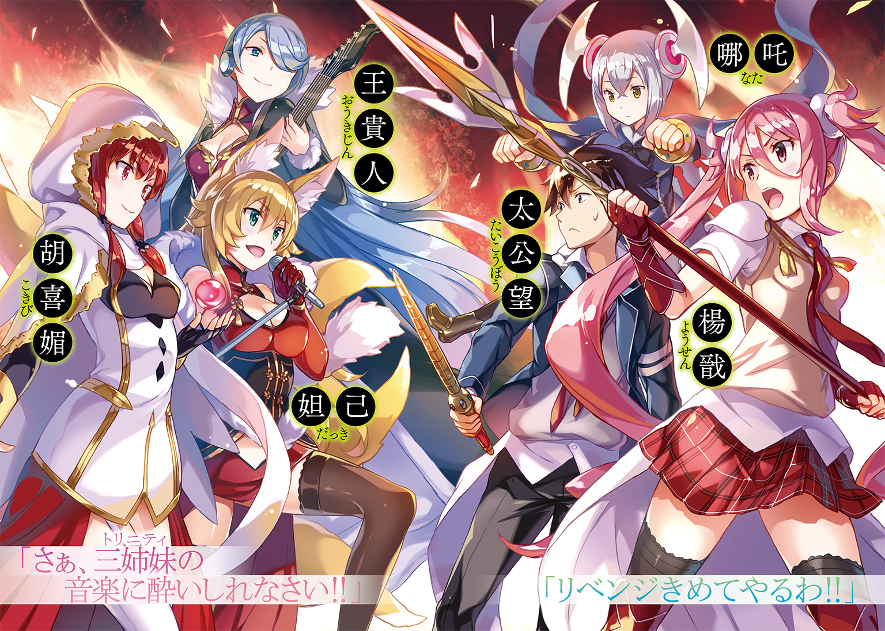
 ダッシュエックス文庫DIGITAL
ダッシュエックス文庫DIGITAL
封神演戯３
森田季節
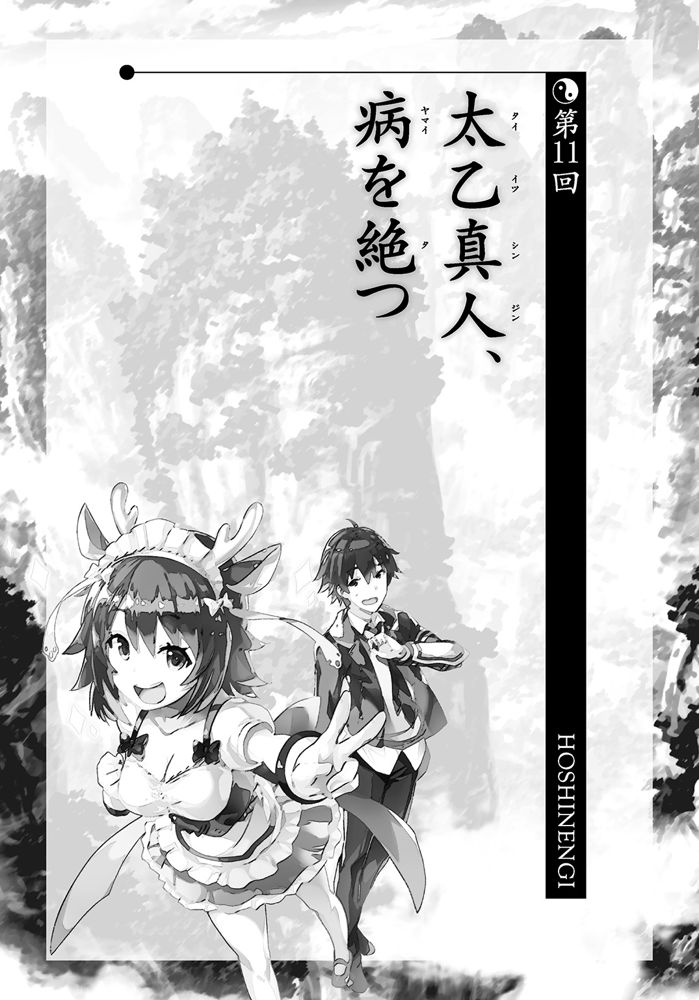
呂岳の船が崑崙にドッキングするのを太公望と楊戩は目撃した。いまいちシリアスさに欠けるパンダ模様の「趙公明号」である。
趙公明のものに見える船と呂岳のものに見える船、その二つの船に逆の仙人が乗っていた。単純な入れ替え作戦だが、奇襲を受けて慌てていた崑崙側にはそれが効いた。
結果として、病気をつかさどる仙人である呂岳にまんまと崑崙への侵入を許してしまったようなのだ。
「趙公明のバカは倒したけど、呂岳の策のほうにははまっちゃったわね」
楊戩の言葉にも少し力がない。
「プラス思考で行こうぜ。暗くなっても無意味だ」
「太公望、あなたが前向きって珍しいわね」
「実際、前向きに進むしかないだろ」
ちらっと後ろに目をやる。趙公明が乗っていた時間稼ぎの船が見えるだけだ。それから、すぐに前に向き直った。
「逃げる場所なんて、崑崙の仙人である俺たちにはないんだから」
「それもそうね......」
どうしても、楊戩の表情が暗くなりがちだ。
太公望もいかんともしがたい。不安を煽ってるわけじゃない。事実を見つめようとしているだけなのに、その事実が悲観的に過ぎる。
「心配することはないっス！ 今頃、竜吉公主様が入念にウォーミングアップして敵の仙人を待ち構えてるっスよ！」
楽天家の乗騎が少しはバランスを保ってくれている。
「スープー、そりゃ無理だ。あの人、ウォーミングアップしたら、それで力尽きるから」
竜吉公主はたった三人しかいない崑崙の大幹部、堂上元老の一人だが、とにかく活動時間が短い。一分しか働けないのだ。一分動くと、五分休まないといけない。せめて、逆だったらいいのだが。
「まあ、竜吉公主はわかんないにしても、崑崙には元始天尊様もいるわ。持ちこたえるぐらいのことはできるはず。だから、万全の態勢で突っこむわよ」
楊戩は手のひらサイズにしているテントから、何かを取り出した。
「これをつけて」
薄く、半透明な膜。広げた形は仮面に近い。フェイスパックのようにも見える。
「なんだ、これ？ 新しい宝貝か？」
不思議に思いつつ、差し出されたそれを受け取る。感触はゴムのようだ。
「【甘棠面】っていう宝貝。顔に貼りつければしばらく肉体の免疫力を上昇させる。呂岳用に持ってきたワクチンだけじゃ心もとないから更に入れてたの。まあ、超良質な栄養ドリンクみたいなもんだと思って。ワクチンが効かなかったとしても、ウイルスで発症する時間を遅くできるかもしれない。貴重品なんだから大切に使いなさい」
「待て。貴重品って、何枚あるんだ？」
「これ、一枚しかないけど」
「一枚しかないんだったら、お前が使えよ」
受け取った宝貝を返そうとするが、楊戩はそれを見越したように哮天犬ごと少し離れた。
太公望が宝貝を持って伸ばしかけた手は空を切る。
「あなたに託すわ。それで耐えている間に呂岳をやっつける策を考えて」
顔を見れば、楊戩が頑としてその宝貝を引き取らないのはすぐにわかった。
「あなたはプロジェクトリーダーなんだから。私たちは、その......チームなの。チームの勝敗はリーダーが残ってるかどうかで決まるの。あなたが倒れたら、私まで負けってことになるから......。どう、理屈としては正論でしょ？」
楊戩の言葉は長くなればなるほど、言い訳のようになる。
太公望のことが気がかりなのだと言えばすむのに、そういうわけにはいかない。
「はぁ、頭がいい奴はすぐに理屈で解決しようとするな」
「なによ、働かない理屈をいくつも作ってきたあんたに言われたくないわ」
「でも、お前の気持ちはよくわかった。ありがとな」
太公望は楊戩の気持ちに応えるように口元に笑みを浮かべると、ぺたっとその宝貝を顔にひっつけた。
溶けこむようにしてすぐに宝貝は消えた。
「ウイルスそのものに効くわけじゃないから根本的な解決にはならないけど、その分、自分自身を強くするから、時間稼ぎには向いてるわ。どっちみち、何日も戦いが続くってことはないでしょ」
「お前の心意気は絶対、無駄にはしない」
「そんなたいそうなものじゃないわよ。あくまでこの天才が合理的な対応をとっただけのことなんだから」
顔を赤くして、楊戩は横を向いた。
「それに、こんな極限状態じゃ、好きじゃなくても勘違いして好意ぐらい向けそうになるわよ......。つ、吊り橋効果ってやつ？」
「もしかして、キスしかけたこと、怒ってたりするか......？」
趙公明戦で負傷した楊戩を回復させるため薬を口移しで飲ませようとしたのだ。そしたら、意識の戻った楊戩にぶん殴られた。
たしかにあれでくちびるが触れたら、恋愛感情があるのだと自然と錯覚してしまったかもしれない。
恋愛感情よりも、キスが先行するのだ。
それで実は昔から恋愛感情を持っていたと歴史を歪曲する。
人間という動物はとかく因果関係を求める生物で、ただキスという事実だけがあったとは考えられないのだ。仙人になったって、そこのところは何も変わらない。
おかげで本当の気持ちがどうだったかわからなくなる。自分が騙されるなら自業自得だが、楊戩まで巻きこむのはひどい話だ。
「別に怒ってるわけじゃないわよ......。許してるわけでもないけど......」
楊戩の言葉も勢いはない。気持ちと言葉が乖離しているからだ。
「私は、誰かのことが好きで、キスしてほしい時になったら、自分の口でキスしてって言うってことよ......。それまでは、待っててほしいの......。強引にされちゃうのは嫌なの......」
「了解した」
両者の合意形成が必要というのは、人間社会のごく一般的なルールだ。金鰲との戦争だって、宣戦布告が行われた。勝手にやっちゃうのはダメなのだ。
「わかればいいの」
ぽすっ。
楊戩はまた哮天犬を横付けさせて、右の拳を軽く太公望の顔に当てた。痛みはないレベルだった。
「この話はもうおしまい。戦いのことだけ考えて。あなたはこのチームの軍師でもあるんだから」
「よし、できうる限りやってやる」
たいていの場合、一度通った道は初めての時より体感的に短く感じるものだが、帰路に不安がある時はその限りではないらしい。
太公望自身、早く着いてほしいのか、いっそいつまでも着かないでほしいと思っているのか、よくわかっていなかった。
体感時間は別として、敵の妨害もなく、二人は崑崙に接近するところまでは来た。
問題はどこから入るかだ。
というのも、本来の出入り口とは関係ないところに呂岳の船がぶつかっているからである。インターホンを鳴らしてドアを開けてもらう泥棒はいないということだ。
「崑崙にめりこんでる呂岳の船にさらにぶつかっていくって手もあるわね。呂岳の一味と一気に決戦に持ちこめるかもしれないわよ」
楊戩の案は超攻撃的だ。
「......う～ん。素直に正規ルートで戻ろう。今の俺たちが優先すべきは呂岳側の殲滅じゃない。崑崙首脳部との合流だ」
「でも、出入り口だって呂岳が監視してるんじゃないっスか？」
「出入り口の防衛に人員割けるほど敵に余裕があるなら、どっちみち終わりだ」
哮天犬で併走している楊戩がうなずいた。
「決まったわね。それじゃお行儀よくハッチから入りましょ」
心得たとばかりに哮天犬が速度を上げた。正面に見える「衝突事故現場」からはまわりこむ格好だ。
四不像が「待ってくれっス～！」とそれに続いた。待ってくれということは追いつけてないということだ。じわじわ離されていく。
太公望はやさしい目をして、ぽんぽんと四不像の頭を撫でた。
「いいんだ、自分なりのペースでいい。無理な頑張りは何も生まない。それで頑張り自体を評価基準にする本末転倒な人間になるぐらいなら、ほどほどでいい」
「そう言われると、余計に追いつきたくなるっス！ でも追いつけないっス......」
結局、二分ほど遅れて四不像は崑崙の出入り口にたどりついた。
内部は怖いほどに静まりかえっていた。本来なら入る時に「認証シマシタ」という機械音声がするはずなのに、それもない。非常事態でシステムが止まっているのだろう。
「断末魔の叫びが聞こえてこなくてよかったっス。平和っスね～」
呑気に飛んでもいられないので、四不像も人間の姿になっている。哮天犬は犬のまま走っているが。
「逆だ。普通、ここまで音がしないってことはない」
黄巾力士の一台も飛んでいない。これじゃ、ゴーストタウンだ。
「全員、死に絶えたんじゃないだろうな。パラレルワールドの中を歩いてるみたいだ」
「自分たちの本拠地に戻っても緊張を強いられるっていうのは癪ね」
楊戩はスマホ型端末を取り出すが、依然として元始天尊にはつながらない。
「なんだかゾンビ映画みたいね」
「むしろ、パンデミックものだろ。冗談にもなってないけど」
敵に気づかれると困るので大声も出せない。粛々と一行は進む。
目指す場所は元始天尊の部屋だ。そこが落とされてないならまだ崑崙は降伏してはいないということだ。あらためて最高司令官の元始天尊と今後の作戦を練ることになる。
かなり目的地まで近づいていた。いまだに敵を一切見ないのが逆に気味悪い。
「みんな、体調に変化はないか？」
ウイルス型宝貝が崑崙内で蔓延している危険がある。
「いたって健康よ。入った途端に封神されたらどうしようってひやひやしたけど――あっ！」
楊戩が口をつぐんだ。
それから太公望の耳元に顔を寄せて、小声で、
「人の気配がするって哮天犬が言ってるわ」
哮天犬は何もしゃべってはいないが、前足を不自然に上げていた。そういうサインなのだろう。
ちょうど目の前に曲がり角があった。敵が潜んでいるのかと【打神鞭】を握り締めた。
「まずは俺が行く。【打神鞭】なら吹き飛ばして距離も取れるしな」
「わかった。援護するわ」
意を決して、角に突っこむ。
「喰らえ！ ............違った」
太公望はゆっくり【打神鞭】を下ろす。
竜吉公主が仰向けになって倒れていた。
目も閉じていて、いかにも力尽きましたという雰囲気が出ている。
「ちょっと！ 大丈夫ですか！」
「竜吉公主様まで......。堂上元老がやられるだなんて、かなり敵はヤバいわ......」
ショッキングな光景を目の前にして、太公望たちの空気も重くなる。
「いや、我はやられてはいない。一分経って動けなくなっただけだ」
竜吉公主がひょいと右手を挙げた。
「うわ、びっくりした！ 目ぐらい開けといてくださいよ！」
「むしろ、我が地獄を見せてやったわ。ほら、そのすぐ先の角を見てみるがいい」
確かめてみると、金鰲の仙人と思しき者たちが倒れていた。尻尾が生えていたので、妖怪仙人なのだろう。倒れているということは封神界送りは許してやったということか。
「趙公明の妹弟子に当たる雲霄・瓊霄・碧霄の三人に、弟子筋に当たる彩雲、陳九公・姚少司......都合六人を一人十秒で倒してやったのだ。はっきり言って、かなりのつわものたちだった。我でなければ、あっという間に封神されておったであろう」
「すごい！ 趙公明グループを全滅させてるじゃない！ 竜吉公主様って当てにならない感じがしてたけど、本当に強かったんですね！」
趙公明の仲間たちは金鰲でもかなりの実力者揃いのはずである。少なくともこんな連中が趙公明の乗っていた船にいたら太公望と楊戩も崑崙には戻ってこれなかっただろう。
「こいつらが集団で行動していたってことは、師匠をつぶしに来てたってわけだな」
やはり敵の戦略にぬかりはない。奇襲を前提に効率よく動いている。
「これで堂上元老の面子を保つこともできたな。途中からは我も意地であったぞ。せめて聞仲あたりと相討ちになるならともかく、その下の者たちには負けられぬ。そして最後に雲霄を倒したところで一分経って力尽きた。もう一秒でも時間をかけていたら、我の負けだった」
竜吉公主の表情もこわばっていた。どう転ぶかわからない戦いだったというのは事実なのだろう。
「こいつらの宝貝はすべて破壊したり奪ったりしておる。起き上がっても脅威ではない。安心するがよい。だが、我も激しい戦いであったがゆえ、五分経っても回復せぬ。それで、そのまま倒れておったのだ」
「倒れてるのが締まらないけど、基本的にファインプレーですよ。そうだ、崑崙全体の戦況も聞かせてくれませんか？」
「全滅はしていないが、ウイルスのせいか、動けなくなる仙人が増えてじわじわ押されておる。まずウイルスでこちらの仙人の動きを封じて、その間に実力者の仙人をこちらのトップに差し向けるという戦略であろう」
予想していた通りの結果だ。良くもなく、悪くもない。
「じゃあ、元始天尊様のところに行きます」
勝負はまだついていない。これからが本番だ。
「あっ、戻るなら我を連れて帰るがよい」
「別にいいけど、せめて申し訳なさそうにするとか、恥ずかしそうにするとかないわけ......？」
楊戩がタメ口で文句を言いながら、哮天犬の上に竜吉公主を乗せた。タンカ代わりである。
「何を言うか。我は六人も倒したのだぞ。十二使クラスなら敗れておったぞ」
「まあ、それは認めなくもないですけどね......」
素直に尊敬するには余計な要素が多すぎる。そんな感想を抱いて太公望も随行した。
そして、元始天尊の部屋の前まで来たのはいいのだが――
「合言葉をどうぞ」
応急処置をして復活を遂げた扉の奥からそんな要求をされた。
「声からして白鶴か」
「うむ。我が戻ってきたと勘違いして、敵に対して開けてしまっては元も子もないのでこういうシステムにしたのだ」
「顔認証ができるインターホン宝貝ぐらいついてませんでした？」
「とっくに壊れておる。それに、楊戩のように変化を行う者が敵にいるかもしれんではないか。仮に本人でも後ろで敵が凶器を突きつけておるおそれもある」
「言われてみれば、そうか」
単純な船の入れ替わりトリックに騙された身だ。用心を杞憂と笑う気にはなれなかった。
「それで、合言葉って何なんです？ まさか忘れちゃったってオチはないですよね？」
「ふふふ、心配するな。我が紙に書き写してきた。我は几帳面だからな。出かける前の電気とコンロのチェックも二度行うぞ」
「そこはどうでもいいわよ。早く紙を見せなさい」
哮天犬の上で、がさごそと竜吉公主はメモ用紙を取り出した。
そこには、こう書いてあった。
うにな へよとりお はぬきせ
もあへ ほとしらよ まわくて
おみせ いゆけそむ いるみう
「これ、合言葉違う！ 復活の呪文！ 初期のドラクエ！ セーブって概念がない頃のドラクエ！」
合言葉というから、せいぜい「山」「川」みたいなやつかと思ったが、もっと複雑だった。メモしてないと絶対わからなくなるやつだ。
「何よ、ドラクエって？ わけのわからないこと言わないでよ」
「ドラクエっていうのは、ええと......まあ、俺の世界にあったゲームだ」
太公望の反応は無視して、竜吉公主はその合言葉を読み上げた。
「 うにな へよとりお はぬきせ
もあへ ほとしらよ まわくて
おみせ いゆけそむ いるみう 」
「ふっかつのじゅもんがちがいます」
「今、『ふっかつのじゅもん』って言ったな！」
「あれ、一文字どこか間違えただろうか......？ 文字列に規則性がないから、間違いの箇所がわからぬ。手書きではなくて、写メで撮っとけばよかった......」
竜吉公主は顔面蒼白になっていた。太公望も内心でわかるわかると首肯していた。これ、一文字でも間違えたら終わりなのだ。太公望も幼少期、おじさんが所有していたⅡをやった時、似たことをやらかした。とくにⅡはゲームバランスがシビアで、ギリギリで洞窟を抜けたりすることが日常茶飯事なので書き写しミスはトラウマである。
「この文字数でだいたいあってたら、もう本人ってことでいいだろ！」
「ふっかつのじゅもんがちがいます」
コンピュータのように無慈悲な言葉が返ってくる。
――と、太公望は不意に殺気を感じた。
幸いと言っていいのかわからないが、敵からではなかった。
「いいかげんにしろっ！」
楊戩が扉の破損箇所を容赦なく蹴りつけた。思いっきりぱんつが見えたが、ぱんつ見えたことが気にならなくなるぐらい、すさまじい蹴りだった。
その箇所が貫通して足のサイズぐらいの大きさの穴が空いた。
「ひいぃぃぃぃ！ 暴力反対......」
明らかに白鶴の悲鳴が扉の奥から聞こえた。その穴を楊戩はのぞきこむ。
「ほら、私よ、私。楊戩よ。趙公明倒して戻ってきたわ。開けないなら、あんたの全身にハチミツ塗って皮がカリカリになるまで揚げてやるわよ！」
「わかりました！ わかりましたから、これ以上扉を壊さないでください！」
半泣きで白鶴が扉を開いて、太公望たちはようやく元始天尊の部屋に帰還したのだった。
なお、合言葉のミスは「まわくて」の部分が「まくわて」だったらしい。文字列に意味がない場合、ひっくり返しても気づかないというよくあるやつである。
「いやあ、びっくりしたよ。趙公明が来たと思ってたら、呂岳なんだからさ～」
そう言いながら元始天尊はボールで部屋の縁をぐるぐるとまわっている。
「もう慣れてきたけど、玉乗りのせいでどこまで真剣なのかよくわからないわね」
「いえ、元始天尊様は平常心を保とうとわざと部屋の隅を回っておられるんです。パニックの時は部屋の中心部でぐるぐる回転して目のほうまで回してらっしゃいますので」
秘書の白鶴が解説を加えた。つまり、指導者としては正しい心構えなのだが、ヴィジュアル的に厳かさも緊迫感も伝わらないのが難点だ。
「現在、崑崙の仙人が封神されるような被害は出ておりません。すでに避難を完了させていますので」
白鶴の説明に駆けつけてきた太公望と楊戩の表情も多少やわらぐ。
だが、話す白鶴のほうは顔が険しいままだ。
「ただし、無事というとそういうわけでもなく、急に体調不良で動けなくなった、あまりにも深刻な倦怠感、二日酔い五回分を一回に凝縮したような感じ、下痢が続いてトイレから出られない等々、いろんな症状の報告が同時多発的に入ってきまして......」
「これ、かなりの確率で呂岳のウイルス攻撃だよね」
元始天尊はボールに乗りながら、何やらプリントアウトされた紙をめくっている。それは主要仙人の宝貝リストで、その中に呂岳の項目も交じっていた。
「使用宝貝が医療系のものも含めて無数にあってどれかわからないんだけど、仙人の体調を悪化させるものもいくつかあるね。それを派手に使ってるんじゃないかな。仙人は普通の人間がかかる病気にはかからないはずだから」
「実質、崑崙の仙人がまとめて人質になってるようなものか」
呂岳をとっとと倒さないと本当に崑崙の仙人が軒なみ封神されかねない。
「至急、ウイルス対策を考えましょ。幹部とはいえ、一人の仙人につぶされる仙人界なんて末代までの笑い者――――あれ......やけに疲労感が......」
楊戩の体がふらつく。そのまま、地べたにうずくまってしまう。
「頑張るっス！ 気合で乗りきれるっス！ ファイト一発の情熱っス！」
四不像が鬱陶しい根性論を持ち出してきた。
「あれれ、私も深刻な倦怠感と二日酔い五回分が一回に集まったような気持ち悪さと猛烈にトイレにいきたい感じが同時に来ましたっス......」
「モロに症状出てるな！」
崑崙の中を動いたのだ。罹患の可能性はある。むしろ、なんともない自分のほうが例外なのだ。楊戩から免疫力の上がる宝貝をもらっていたおかげか。
「スープーは至急トイレに行け。すべてはそれからだ」
漏らされたりしたら、最悪だ。自分の部屋じゃないけど、これから籠城することになるのだから。
「わかったっス！ トイレはあっちの隅っスよね！」
しかしトイレは鍵がかかっていた。
「ふふふ、我もウイルスにやられたらしくて先にトイレをお借りしている」
「そういえばいないなと思ったら、竜吉公主様に先に使われてたっス！」
「ちなみに当分出られそうにない。おっと、流水音が出る機能を使わねばな。はしたないからな」
「できうる限り、すみやかに出てきてほしいっス！」
これ以上ないほどしょうもない会話が聞こえてきて、真剣になるのを阻害する。それでも、真剣にならざるをえないダメ押しの要因が来た。
モニターに呂岳の顔が映った。
『聞こえてるかしら？ こちらは呂岳。崑崙の通信室を占拠したわ。ちなみにこの放送と通信は私からの一方通行だから、そのつもりで。取引を持ちかけても無駄よ』
その白衣はまったく汚れても乱れてもない。
戦闘らしい戦闘はなかったという証拠だ。
呂岳にとって、戦うことすら無粋だ。仙人でさえも逃れられないような疫病をもたらすウイルスを作るのに成功した時点で呂岳の戦いはほとんど終わっている。
『崑崙の仙人たち、よく聞きなさい。すでに崑崙の大半のエリアにウイルスを散布してるわ。そう遠くないうちにまともに抵抗できる仙人はいなくなる。最高司令官が敗北を認めるなら、ワクチンを作ってあげてもいいわ』
「作る――か。つまり、現時点じゃワクチンもないってことだな。盗んで一発逆転なんてことは無理と」
太公望は周囲に状況を伝えるために、わざと声に出した。
『ちなみに仙人各自が投降するのは認めない。数が数だから、こちらも管理できないし、スパイがいないって保証もない。助かりたかったら、元始天尊に嘆願書でも提出することね』
「敵は巧い手を使いますね。崑崙側の結束が破れるように仕向けてる」
「感心してる場合じゃないです！ どうしたらいいんですか!? 本当に降伏するしかないんですか!?」
ストレスのせいか、白鶴の体から白い羽が舞った。人間の形態でも羽は抜けるらしい。
「ふん！ 趙公明ファミリーの仙人は片っ端から竜吉公主様が叩きのめしてるのよ。あなただって、ウイルス以外の攻め手はないはず。手足をもがれて王手もかけられないってところじゃないの？」
『今頃、そっちの仙人を倒したぞと言ってるかもしれないけど、現状は何も変わっていないからね。どちらにしろ私たちが有利なのは同じよ。あなたたちはウイルスによっていずれ全滅する。私が崑崙に入りこんだ時点で勝敗は決したのよ』
楊戩は歯ぎしりでもしそうなほどに、呂岳をにらみつけた。
しかし、苛立ちをそのまま見せるしかないということは呂岳の言葉が当たっているのだ。
腹を立てたり、困惑していたりしても何もはじまらない。
今、必要なのは決断なのだ。
「師匠、ここはどう――」
元始天尊とすぐに目が合った。
ということは、向こうも太公望を見ていたというわけだ。
「僕は太公望ちゃんに指揮を任せると言ってたはずだよ。状況が変わってもそこは変わらない。君が決めな」
「俺は呂岳と趙公明の船のトリックにかかりましたよ」
「想定通りの敵が乗ってる確証なんてはじめからなかったんだから、どっちみち運ゲーだったでしょ。それにあの場の誰も気づけなかったんだから同じだよ」
「降伏しましょうと言ったら、そうするんですか、師匠？」
試すようにそう言った。
一任するというのはそういうことだ。
嫌な選択でも受け入れてもらえないとダメなのだ。
「いいよ、二度でも三度でも降伏してあげるよ。それで話がつくならいいんじゃない？ 僕を差し出すって言うなら、それもまたよし」
元始天尊のほうも煽る。
まるで引導を渡せるものなら渡してみろとでも言うように。
ここまで崑崙の主宰者に言わせてしまったら、腹をくくるしかない。
「......わかりました。それでは崑崙の最高司令官代理ということで」
引きこもりからはずいぶんと遠いところに来たものだな、と太公望は思った。熱いお茶でも飲んでしみじみ感慨にふけりたいものだが、いかんせん、寸暇を惜しむ状況だ。
やるしかない。
「さて、戦力は――」
この部屋で戦えそうなのは、自分、白鶴童子、太乙真人、厳密に言うとトイレに入ってるけど竜吉公主、将棋で言う王将にあたる元始天尊。
「ふぅ......長い戦いであった。敵との戦闘五十秒分に匹敵したかもしれぬ......」
あっ、竜吉公主はトイレから出てきた。
「やっと空いてくれたっス！」
今度は四不像がトイレに飛びこんでいった。本当に緊張感を奪う奴らだ。
できれば元始天尊はぎりぎりまで温存しておきたい。とはいえ、白鶴も太乙真人もさして戦闘には向いてない。
けど、そんなに大きな問題でもないか。無策で打って出てもウイルスの餌食になるだけだ。しょうもない特攻精神を発揮するぐらいなら、鳥の形態にした白鶴を振って白旗の代わりにでもしたほうがいい。
この中で戦闘能力以外で戦えるといえば、一人しかいない。
「太乙道兄、どうにかできませんかね？」
「だから、コンピュータウイルスじゃなきゃ、私は専門外で......」
「ウイルスじゃなくて、ウイルス型宝貝のはずです。でなきゃ、仙人がやられたりしません。宝貝をどうにかする実力なら、道兄に備わってるはずです」
そう、これは限りなく病気のようだが、あくまで宝貝による攻撃だ。
ならば、宝貝製作のプロフェッショナルが対処できる領分と言える。
「必要な宝貝があるなら取ってくるから言ってください。道兄ならなんとかできるはずです。いえ、なんとかしてください」
太公望は太乙真人の両肩に手を置いた。
まさにこの双肩にすべてがかかっているのだというように。
「太乙道兄だけが頼りなんです」
「えぇっ!? それは盛りすぎじゃないですか......？ 私、責任重大な仕事なんて受けられな――」
「今の最高司令官はこの俺です」
偉くなろうとしたこともないので、こういう態度をとるのがよいことかもわからないけれど、自分なりに権力というものを行使してみた。
「吒みたいな存在を生み出すことまで成功したあなたなら、この程度の宝貝、簡単に御せるはずです。少なくとも、道兄はその力を持ってます」
「ううん......これ、パワハラですよ......。私、恥ずかしいです......」
太乙真人も目をそらして、この場から逃げようとする。沈みそうな船で責任を負わされるだなんて役割は誰だってしたくない。
「私、ずっと部屋で仕事してましたし、一人で身だしなみも気にしてませんでしたし......こんなのわからないんですぅ......ヘタレキャラなんですぅ......」
身だしなみとか、絶対にこの場面で何の関係もないと思うが、太乙真人的には重要なのだろうか？
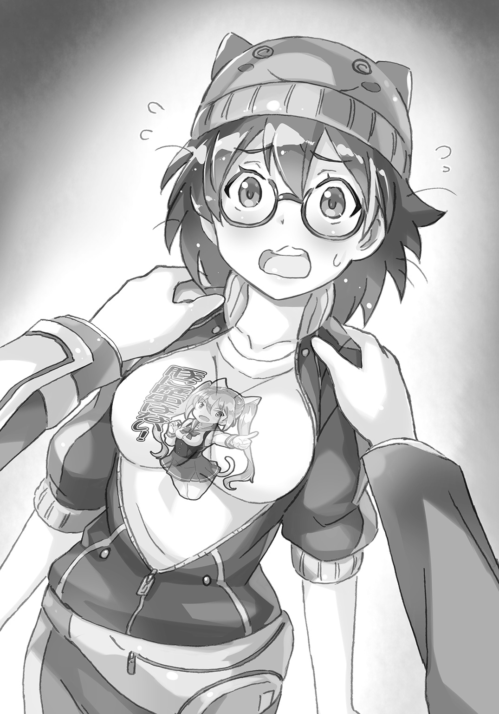
こうなったら太公望も押すしかない。
「今だけは十二使でも俺に従ってください」
「どうしてもですか？」
「どうしてもです」
「うぅ......」
太乙真人のメガネがもわっと曇った。
それから、ゆっくりと太公望の手をどけた。
説得失敗か、と太公望も不安になる。しかし、太乙真人の苦笑いが、まだ脈のあることを示していた。
「男の人の手の力って、強いんですね。それとも太公望さんが強引なだけですか？」
「あっ、すいません......痛かったですか......？」
「私、こんなふうに頼まれると断れない性格なんですよ。責任は最高司令官さんがとってくださいね？」
太公望の気持ちが通じた。
「それでは早速取りかかりましょうか。だけど、どうなるかはわからないですよ。こんなの、試したこともないですからね」
太乙真人はジャージのポケットから、黒い弁当箱のような容器を取り出した。
中央に大きくＦの字が刻印されている。
「とんでもない事態ってことはわかっていたんで、役に立ちそうなものは用意していたんです」
「まったく見たことのない宝貝ですね......。見た目からして重そう......」
「宝貝【普太儀】です。これでやれるところまでやってみます」
「得体の知れない宝貝ですけど、何に使うんですか？」
「プログラム具現化の変換用モデムなんです」
聞いたはいいが、答えも全然わからなかった。詳しい人に質問するとよく起こる現象である。
「私もまともに使ったことはないんですけど。長々と解説するより、多分、動いた時に見てもらったほうが早いかと思います」
「俺、パソコン苦手だったんで、よくわからないですけど、期待してます」
「あんまり期待しすぎないでください。プログラムはファンタジーなんです。なぜか上手くいくこともあれば、原因不明のエラーが出ることもあるんです。非科学的なんです」
太乙真人は【普太儀】から何やらケーブルのようなものを取り出す。それを部屋のコンピュータに接続する。
「二徹や三徹の時と比べれば体調は悪くないですし、私なりに戦いますか」
ぱんぱん、ぱぱん、ぱんぱん、ぽん！
猛烈なペースで太乙真人はパネルをぱちぱち叩くように押していく。
そのたびに画面に何かの案内が出る。警告ウィンドウのようなものも出るが、そんなのは無視して突き進む。
「こういうのは数がすべてですからね。五百回ぐらい試せば一度ぐらい上手くいくんじゃないですか？」
「ありがとうございます！ 上手くいくことを願ってます！」
「最高司令官さんの命令ですからね......。命令には逆らえませんから......」
「そういう言い方されると、俺がすごく高圧的だったように聞こえる......」
「ほかにも何かさせたいことがあったら......その、命令してくださったら、や、やりますからね......」
太乙真人の言葉は詰まり気味だが、手のほうは快調に動いていた。これで無理なようなら、元気に動けるメンバーで呂岳を襲撃するという、かなり荒っぽい作戦に出るしかない。元始天尊が負けるとは思えないが、将棋で言うと王将の駒だけで敵を倒そうとするようなことで、とても展望のある戦略とは言えない。
「その気にさせるやり方が、なんかズルいわね」
楊戩はご機嫌斜めらしく、横になりながら、ジト目を送っている。
「何がだよ......？ 最高司令官なんだからいいだろ......？」
「まあ、大目に見るわ」
そんな楊戩の息づかいも荒いのがよくわかる。やはり長期戦はできない。
『降伏に向けての動きがないみたいだけど、死ぬ気？ 一斉に封神されることになるわよ。今ならまだ傷は浅いけど？』
呂岳のほうから催促があった。
そういや、崑崙側からは何もレスポンスをしていなかった。こちらが何をしているかは向こうには伝わっていない。
「ぼちぼち、スタンスぐらいは表明しないとダメか。仙人界の代表には違いないわけだし」
太公望も自分の職責を果たすことにした。
トップがこそこそ逃げ回っていたのでは士気にかかわる。
「白鶴、放送室と通信できるな？ 映像も込みのほうがいい」
「はい、部屋のモニターを使えば簡単です」
かちゃかちゃと部屋の中心の機械を慣れた動きで操作する。
呂岳の顔が少し驚いたものに変わった。それが向こうのモニターにこちらが映ったことの証拠だ。
『やっと出てきたのね。呼ばれたらすぐに返事をしないと、こっちの心証が悪くなるわよ』
「一方的な独り言の相手をしてやろうとしてるだけ、ありがたく思えよ」
言葉には言葉でやり返す。舐められたら負けだ――と決まっているわけではないが、舐められたくはない。
『どう？ 降参する気になった？』
「徹底抗戦する気になったんで、伝えておこうと思った。スポーツマンシップに則ってよろしく頼むぜ。スポーツ、興味ないけど。だいたい、スポーツマンにだって卑劣な奴も人間のクズみたいな奴もいるだろ。俺、オリンピックやワールドカップに絡む利権の本、大昔に読んだことあるぞ。運動部内で起きたイジメの事件だって知ってるぞ。スポーツだってたかがゲームだろ。格ゲーやカードゲームの強い奴と等価だろ。スポーツだけ特別視すんな」
『知らないわよ。あんた、何の話をしてるの？ ていうか、そっちのリーダーの話が聞きたいのよ。元始天尊を出しなさい。あんたみたいな下っ端の出る幕じゃないわ』
「最高司令官はついさっきこの俺、太公望に代わった。分不相応だと思うが、なっちゃったもんはしょうがないから、よろしく」
呂岳はこんなのがトップに立ったのかとでも思ったのか、少し訝しげな顔をした。十二使でもないから、序列からすると、トップ10にも入らないような仙人なのだ。
『後悔することになるわよ』
「頭が悪いんで、後悔も反省もしない」
ケンカを売ると決めたのなら、とことん売れ。売り尽くしだ。
『次は泣き顔のあなたと会うことになりそうね。その前に封神されてるかもしれないけど』
ぷちっと通信が切れる。ずっと顔を合わせるのも気分が悪いからちょうどいい。
「さてと、太乙道兄が頑張っているうちにほかの策を考えるか」
「やっぱ、エポックメーキングなアイディアはないみたいね......」
横になっている楊戩の顔色は明らかに悪い。敵の詰めが甘いとしても最高で二時間もしのげればいいほうだろう。封神される者が出はじめたら許しを乞うしかない。
「崑崙に戻ってきたばかりなのに、そんなひょいひょい思いつくかよ。最高司令官代理になって十分経ってないぞ」
人生には機転を利かせないといけない場面もあるが、これは余裕がなさすぎる。
「ただ、できるのかわからないけど、提案だけはできる」
仙人界同士の争いなら、局地戦よりはシステム面を突いたほうがいい、そんな考えはあった。現場で長らく働いてなかった分だけ、太公望は夢想家なのだ。
今から、ちょっとした禁忌に踏みこんでみようか。
おそらく、あまりにもアンタッチャブルだったせいで仙人たちが意識することすら忘れていた領域だ。
「師匠、そういえば封神って何のためのシステムなんですかね？」
「ふひ？」
なんとも気の抜けた返事だ。
やはり、相当とんでもない質問だっただろうか。
ならば、その分、効果があるということだが。
「ごめん、聞いてなかった。玉乗りに集中してて」
「そこは現状のほうに集中しとけよ......」
あきれている暇もないので先を続ける。
「ほら、もしもですけど、魂魄が封神界に行かないようなシステムにしちゃえば、仙人は封神されないわけですよね。魂魄の行く場所がないなら、そのあたりに留まる。その間に別の肉体を与えることができれば仙人は名実ともに不滅じゃないですか」
「原理上はね。新しい肉体を与える方法が、まず難しいけどね......」
仙人が肉体的に死んだ場合に封神されるというのは、はるか古代から決まっていた摂理でも何でもない。ある時期に、封神界というものを作って、魂魄だけが漂っているとそこに引き寄せられて、回収されるようにしたのだ。
一般的に知られている理由はシンプルで、悪い仙人を倒しても、封じる場所がないと、不都合だったからだ。仙人は魂が不死なので肉体を滅ぼしても、魂は残る。倒しても、その辺の人間の体でも乗っ取られたらきりがない。
今の元始天尊の話だと、封神界への吸引をストップすることはできないらしい。掃除機をボタン一つでオンとオフに切り替えるようにはいかないのか。
まあ、それはいい。
「なら、師匠、封神界を解放することはできないんですか？ 封神界がダムみたいなものなら、もっと乱暴に破壊してもいいんですけど」
「き、君は何をやろうとしてるわけ......？」
元始天尊もついに玉乗りの移動をやめた。急にボールを止めるのは難しいので、べたりとボールにへばりつく。
「これまで封神界に入ってたすべての魂魄を外に出してやるんですよ」
自分はドヤ顔になっているだろうと太公望は思った。
封神界に入っている魂魄の数はとんでもないものだろう。しかも、事実上、そのほぼすべてが問題のある犯罪者的な仙人を封じたものである。
そんなものが世界にばらまかれたら、聞仲も黙ってはいられまい。金鰲だって、崑崙にとっては現在「悪」だが、悪い仙人を倒して秩序を守る組織なのである。
少なくとも、殷を守るだとか、崑崙を倒すだとか言ってられる場合じゃなくなる。
すぐに魂魄が次の肉体を見つけられるかは別としても、宇宙最大規模の大脱獄になるのは必至だ。
「もしもそんなことができるとしたら、さすがにこの戦争もストップするわよね......」
楊戩も目から鱗が落ちたという顔をしていた。
「くくく、切れるカードがないなら作ればいいのだ。崑崙対金鰲の戦いというレイヤーの外側でちょっかいをかければ、連中の目論見も白紙に戻る。サッカーをやってる連中を倒すには、サッカーで強くなる必要はない。金属バットを持って殴りこめばよいのだ」
これはスポーツに興味がなくて、距離を置いて見つめている人間だからできた発想である。スポーツ自体に熱狂しないので、こういう屁理屈のような思考ができるのだ。
「せ、先輩が大悪党の顔をしてるっス......」
「スープーの言葉も褒められていると受け取っておこう」
よしよし、それなりの衝撃を以てこの提案は受け止められたみたいだ。
封神界という得体の知れない世界にもそれなりの興味はあった。
太公望クラスでもまだ封神界の運用方法について何も聞いていないのだ。せっかくだし、この機会にその利用計画ぐらい教えてもらってもいいかもしれない。
なにせ自分は崑崙の最高司令官（代理）なのだから。
「どうせこのまま行っても崑崙は負けちゃうかもしれないわけですよ。宇宙規模の大混乱が起こるぞと脅しをかけたって罰は当たらないんじゃないですかね？ どうですか、師匠？」
自分の上司をやりこめるというのは、仕事に熱意のない太公望でも面白い。おそらく普遍的なことなのだろう。
「封神界をどうこうするってことは......僕にはできないなあ......」
すぐに色よい返事が来るとは思ってなかったが、戸惑いというより単純に不可能といったほうがいいような反応だった。
「ダメか......。ってことは、両方の仙人界の立ち会いがないと開門できないとか、そういうことなんですかね？」
犯罪者の仙人を捕らえる空間という性質上、金鰲の同意もないと開閉などができないシステムになっていてもおかしくはない。
ぶっちゃけ、封神界と言っているが、それがどういう世界でどこに存在するのかすら太公望はよくわかっていない。
彼が仙人になった時からとっくに封神界はあったし、悪い仙人がそこに飛ばされちゃうんだよぐらいのことしか聞いていなかった。悪いことしたら死後に地獄に行くんだよというのと同程度のファジーな説明だったが、公的にはそういうレベルの話しかされていない。
あわよくば状況打開のキーになるかなと思ったのだが......甘かったか。パラダイムシフトではあっても実行できなければ机上の空論だ。
「いや、開閉できるとかできないとかじゃなくて......こんな切羽詰まった状況だから言っちゃうけど、封神界って僕が管理してるんじゃないんだよね......。これ、マジでオフレコにしてね......。ここだけの話ってことで酒の席で話すのとかもナシね」
「ということは金鰲で管理してるってことですか？」
だとしたら、あまり名誉な話ではないし、隠しておくのもわからなくもない。
元始天尊が首を横に振った。
「違う、違う。両方の仙人界が委託してるの。アウトソーシングってやつ？」
さらっと言ったにしては、インパクトが大きすぎた。
しかも、太公望が考えてもいない答えだった。
言葉がまったく出てこない。
深呼吸をした。
それから、目を硬く閉じて、開いた。
固定観念を崩す準備をしておかないと、事実をありのままに受け止められる自信がない。
「率直に聞きます。誰に委託してるんですか？」
トップシークレットに踏みこむどころか、トップシークレットにまみれてるぐらいの気持ちだった。
仙人界が封神された仙人の魂魄を管理してないとしたら、それを管理しているのはどんな超越者なんだ？
ちょうど、崑崙に戻ろうとしている時に、楊戩がこんなことを言っていた。
仙人の上位存在である何者かがいるのではないか、と。
人間の上位存在が自分たち仙人だとするなら、そのさらなる上位存在がいてもおかしくない。そして、その者たちは仙人が人間の世界の歴史を管理しているように、仙人に何が起こるかを知っている――理論上ではその可能性が高い。
その仮説が現実になりそうだ。
「委託先はね......」
太公望の肌があわ立つ。さあ、来い。
「僕の姉弟子にあたる......太上老君」
「はっ？」
別に太上老君がそんな大役に堪えないという意味での「はっ？」ではない。
単純に、そんな仕事をしているようには見えんぞという「はっ？」だ。
「またまた～、あのニートが労働するわけないじゃないですか」
「あの人は封神界を警備してるんだよ。中立的な立場だし、封神界に入ってる魂魄を悪用する理由もちょっと考えつかないからね。組織に属してないから役職もないけど、いわば肩書きは封神界警備員ってことになるかな」
「自宅警備員みたいなものか......」
「そもそも、警備なんてしてないってことでしょ。自宅警備員が別に警備業務をしてないようなもんよ。肩書きだけ」
もっともすぎることを半死半生の楊戩が口にした。
外で会うと太上老君はよく【風火蒲団】にくるまっている。孔雀の仙人である孔宣を乗騎にしたから、今後は多少は行動が活発になるんだろうか。
「たしかに、仙人界に対して中立で、かつ強いっていう点では、李誕も超越者にカテゴライズできなくもないな」
もっとも、太上老君は超越者というより委託受注業者という程度のポジションな気はするが。超越してる感じは受けない。むしろ、だらだらしているし、ゲームもするし、卑近すぎる。
「本当に大昔だけどね、僕と金鰲のトップをやってる通天教主とで、話し合ったんだよ。悪い仙人をやっつけて、歴史がおかしくならないようにしても、魂魄が残ってる以上、また問題を起こす可能性はおおいにあるでしょ。このいたちごっこはどうにかしないといけないよねって」
ここまで古い昔話もそうそうないなと思いながら、太公望も聞いていた。
「それで、魂魄を封印する場所を作ろうということで合意したの。タチの悪い仙人が悪巧みをしても、壊せないように僕と通天教主と、さらに姉弟子の太上老君も呼んできて、これを作ったの。そして封神界と名づけたってわけ」
「仙人のトップ３が協力して作ったとしたら、事実上、誰も壊せないだろうってことですか」
「そういうこと。さらに念を入れて、管理者は太上老君ってことにしたの。あの時は珍しく二つ返事で引き受けてくれたよ」
ここまで聞いた時点で封神界を利用するのは不可能とわかった。
「けど、しゃべってて感じたけど今回はイレギュラーなことがたくさん起こってるね。僕も驚き疲れてるよ。まあ、世界の変革がある時っていうのは、そういうものなのかもしれないけど」
すっかり、元始天尊はしみじみ過去をなつかしむモードに入っているらしい。目が遠いところを向いている。
「何の話です？」
「いやさ、君らは実力を知らないだろうから実感湧かないかもしれないけど、あの通天教主がクーデターで幽閉されたんだよ」
「そういえば、一方の仙人界の主宰者ですもんね。すごい強キャラのはずだ」
「それだけ、聞仲って子が強いってことだよ......。世代交代の波が来てるんだよ......。ああ、これは僕も引退する頃かなあ......」
なんか急に年寄りくさいことを言いだした。
「まだまだ老害って感じはないですから安心してください」
「もう代理じゃなくてずっと君に仕事任せちゃおうかな......」
「やるわけないでしょ。そんな話は同窓会でやってください」
太公望としては今をどうするかで精一杯なのだ。
太上老君はあの封神界を管理して、どうするつもりなのだろう。
あんまり深いこと考えてなさそうだし、悪い仙人の魂魄を収容し続けていただけの可能性が一番高いか。
能天気なニート仙人が周囲をあざむく表の顔とは思えないよな。
とくに太公望にとっては、ゲーム友達の李誕でしかないから、なおさらだ。
ゲームが好きな奴に悪い人間はいない――とは限らないが、太上老君はそんな悪い奴ではない。
「――というわけで、僕は封神界はよくわからないの。君ならあの人と仲がいいから何か協力してくれるかもしれないけど」
「無理ですね。あの人、そういうところでは絶対、優遇してくれないんですよ」
封神界を使うという作戦はとっとと忘れたほうがよさそうだ。
「まったくの別案を考えないとな......。とはいっても、こういうのって完全に考えを切り替えるのって難しいんだよ......。封神界って単語がどうしても頭から離れな――」
――鈍ッ！ 鈍ッ！
扉を叩く音。
むしろ、殴りつける音と言ったほうがいい。
楊戩の空けた穴から外側がのぞける。長い角の生えた妖怪仙人がいる。
「そりゃ、この扉の前までフリーパスなんだから、攻められて当然だよな」
「どうしましょう......？ もうあとがありませんよ......」
白鶴はまた恐怖に負けたように頭を抱えている。
「呂岳様の部下、朱天鱗である。同じく呂岳様の部下、楊文輝とともに使節として参った。崑崙の仙人ども、すみやかに武器を捨てて出てくるように。さもなければ、これを使うことになる」
敵の仙人は栓がされた試験管を手にしている。楊戩の空けた穴から、かろうじてそれが見える。試験管の液体の中にはなにやら小さな粒のようなものが蠢いている。
「これは呂岳様謹製の微生物宝貝である。これが体内に入ると全身を食い尽くされて、なおかつ、なかなか死にきれず、恐ろしい苦痛を三日三晩味わったのちにようやく死ぬ」
「ホラーです......私、ホラーは苦手なんです......スプラッターなのも和ホラーみたいなのもダメなんです......」
白鶴はがたがたふるえて、部屋の隅に隠れている。足が微妙に鳥に戻りつつあった。人間の姿を維持することすら難しくなっているようだ。
「少しは静かにしなさい......！ こちらが焦ってるって伝わったら、相手に舐められるでしょ......」
状況は最悪だ。さて、どうやって時間を稼いだものか。
「これ、本当に誰かいるのか？ よく見えんぞ。我々は呂岳様の部下、朱天鱗と楊文輝である。すみやかに武器を捨てて出てくるように」
連中は同じことを繰り返しはじめた。
穴はかなり下を向いて空いていたのだ。楊戩の蹴りがかかと落としのようになったので、上から斜め下の方向に穴も貫通したわけだ。
扉の真ん前には誰もいないので、様子がわからないらしい。
しめた！ これなら黙っていれば時間が稼げるかもしれない。
「太公望、ここは私に任せて......」
楊戩は這いつくばりながら、扉の近くまで行くと、そこで死んだふりをした。
「く、苦しいわ......。もう全滅するわ......竜吉公主様や太乙真人様も太公望もその乗騎の四不像も封神されちゃったし、どうしよう......」
猛烈にわざとらしい発言だが、楊戩は本当にウイルスで苦しんでいるため、表情などは真に迫っているように見えた。
「なんだ、交渉のために誰か出てくることもできんほどに、病気が蔓延しているのか。これなら放っておけばいいな」
「だけど、自分たちが来た途端にあんな説明口調の発言をしますかね？」
楊文輝のほうは得心がいってないようだ。実際、百人に見せたら半数は何かおかしいだろと思うような大根芝居だった。楊戩は変化の術は完璧なくせに、こういう演技はとことん下手なのだ。
「あの表情はマジだと思う。仕事で人間に病気を広めた時もあんな顔になる」
朱天鱗のほうはすんなり騙される五十人のほうである。
「そっかな......いまいち腑に落ちないんですけどね......」
「呂岳様のところに誰も攻めてこないんだから、大丈夫だろう。このままウイルスが広がるまで待っていたってあいつらに逆転の可能性はない」
二人のうち一人が疑っているので危ういところだが、ぎりぎりのバランスでばれずにすんでいた。
「これは、もうダメだわ。どうしよう......。太公望なんて四不像と一緒に封神されちゃったぐらいだし......。ああ、せめて哮天犬の背中の上で封神されたい......」
自然な演技にしてはしゃべりすぎているが、太公望が注意して、その声が敵に聞こえたら最悪なので、口を閉じておかないといけない。
楊戩が演技をしつつ、太公望のほうに視線を送った。
穴に背を向けているせいか、かなり厳しい視線だった。
意訳すると、「この天才の楊戩様がとてつもなくみっともない姿をさらしてるんだから、絶対にどうにかしなさいよ。これで失敗したらどうなるかわかってるでしょうね」という顔だ。
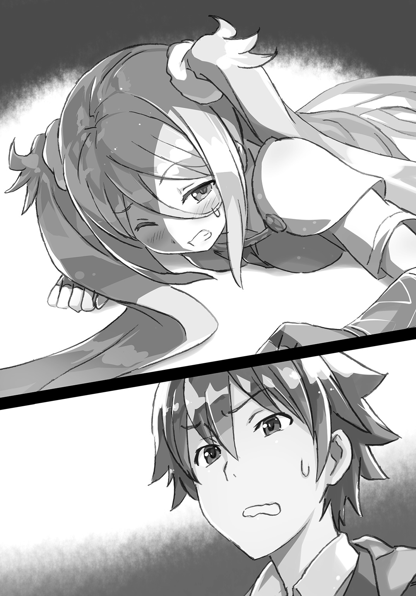
太公望もそうっとうなずいた。この貴重な時間でどうにかしなければ。
「太乙道兄、作業状況はどうでしょうか？」
そうっと、太公望は太乙真人に尋ねる。かちゃかちゃというボタンをタッチしている音も気になるが、そこはしょうがない。
「かなり順調です。プログラムを実行するまではわかりませんけど、奇跡が起こるかもしれません」
太公望は右手で「グッジョブ！」のサインを示した。会話を減らすためである。
「ただ、あとちょっとっていうところで......私もウイルスに......」
ふらふらと太乙真人が太公望のほうに寄りかかってきた。
感染した楊戩やら竜吉公主やらが同じ室内にいるのだ。免疫力を高めている太公望と、仙人の格が違う元始天尊を除けば、症状が出るのも時間の問題だった。
ここで太乙真人が倒れたら、打つ手がなくなる。
「僕も最悪の場合に備えておくね」
元始天尊は自分の乗っていたボールの上で、いつのまにか書類のようなものに目を通している。それなりにこちらも真剣ではあるらしい。
危機を乗りきる方法はなかなか思いつかない。【打神鞭】で打って出るか？ 仙人二人なら勝てないこともないかもしれない。いや、生物兵器の試験管が割れたら、おしまいだ。
もう、いっそ元始天尊様お願いしますと匙を投げてしまうか？ それは面目ないにもほどがある。それに勝ち目が完全になくなったわけではないのだ。
「太乙道兄、体調はどうですか？」
「一週間缶詰めで仕事してた時と比べればまだマシです......ど、どうにかやれます......」
太乙真人はふるえる指先で作業を続けている。
「プログラムが完成するまでは死ねないです......」
熱血系キャラじゃないにしたって、太乙真人にも意地というものがある。こういうのは、完成させないと０と同じなのだ。
「あの......しばらくこの姿勢のままで支えてもらってていいですか？」
「あ、はい......。それぐらいなら......。道兄、無茶苦茶、体が熱いですけど、いけそうですか......？」
肩に添えている手が焼けそうなほど太乙真人の体は熱を持っている。
「三割ぐらいは違う理由による発熱ですから......」
「違う理由？」
パソコンが発熱でもしているのだろうか。
「やっぱり、太公望さんの手って大きいですね。私、ちょっと照れくさいです」
「あれ、照れるような要素、ありましたっけ？」
「あのね、私も女の子なんですよ。仙人は大半がそうですけど」
儚げな笑みを浮かべると、太乙真人は最後の力を振りしぼるように必死に手を動かしはじめた。
――科多科多、科多科多。
画面に「【普太儀】の実行」という文字が表示される。
かなりいいところまで来ているのは太公望にすらわかる。
あとちょっと。本当にあとちょっとなのだ。
しかし、そこで「エラーが発生しました。内容を確認してください」の文字が出る。
「ノーミスでいくのは難しいですね......大丈夫です......。目星はついていますから、解決することはできます......」
その手の動きに迷いはない。最短最速で太乙真人はプログラムをいじる。
楊戩はいまだ半死半生の演技を行っている。このまま乗りきってくれ！
「う～、封神されちゃいそう......じ、辞世の歌、作らないと......。じゃんじゃん、じゃじゃ～ん、じゃんじゃじゃ～、じゃじゃじゃ～ん」
楊戩の変化を使わない演技が下手なのは間違いないが、まだしのげてはいた。
「辞世の歌ってこういうのじゃないですよね。もっと短歌的なやつですよね」
「というか、口でじゃかじゃか言ってるの、すごく恥ずかしいな」
楊文輝も朱天鱗もどうしていいか図りかねているらしい。
「どうも仮病くさいんですよね......。それ以前にあほっぽすぎる。朱天鱗さん、攻撃してみませんか？」
「いや、楊戩といえば崑崙でも名うての賢人。それがこんなあほみたいな様子ということは病気で錯乱しているのだろう」
いいようにとってもらえて、崑崙陣営としては助かった。
「これ、相手が交渉できるような状態じゃない場合、どうするんですか？」
「たしかにこんなケースは呂岳様から聞いていないな。あと十分ほどだけ粘ろうか。敵が封神されたらその時はその時だ。降伏しないほうが悪い」
十分待ってくれるなら間に合うかもしれない！
「もう、この微生物宝貝、部屋の中で割っちゃいませんか？ ちょうど穴も空いてますし。穴に落とすだけで終わりますよ」
もう一人はせっかちだ！
「う～苦しい......何もしなくても五分ぐらいで全滅しちゃいそう......」
また楊戩が説明的なことを言った。
「こっちの言葉に対応してしゃべってる気がするんですけど......証拠があるかと言われるとないんですよね。いいのかなあ......」
ぎりぎりの駆け引きが行われているが、そこで大きなアクシデントが起こった。
「ま、間に合ったっス......。霊獣としての尊厳を危うく失うところだったっス......」
人間姿の四不像がトイレから出てきた。長らく入ったままだったらしい。
呂岳のウイルスはトイレから出られないほどに腹を下す症状も引き起こすようだから、それをモロに受けたのだろう。
だが、症状のほうはどうでもいいのだ。
問題は四不像が生きていることだ。
「竜吉公主様に先に入られちゃった時は絶望したっスが、どうにかしのぎきったっス～。ある意味、一仕事終えた気分っス～。物理的にも体が軽いっス～」
「あれ、霊獣は封神されてるって言ってなかったか......？」
「あっ、たしかにこの声は四不像とかいう奴のものですね」
「ということは楊戩はウソをついてたということなのか......？」
ほとんど封神されてボロボロだと敵に伝えていたのに、おかしなことになってしまった。
「ちょっと！ 何、最低なタイミングで出てきて、しゃべってんのよ！ 今すぐ封神されなさいよ！」
「えぇっ!? よくわかんないけど、ひどいこと言われてるっス！ 体調はひどいっスけど封神されるほどじゃないっスよ！ スポーツで体鍛えてるっスからね！」
四不像のデカい声が扉の外にまで響き渡った。
「やはり、無事なようですよ」
「おのれ！ 騙したな！ 微生物でバイオハザードな感じにしてやる！」
バレた。
「あら......四不像が封神されてると思ったら、私の思い違いだったわ......。幻覚が見えていたのね。走馬灯って現象かしら。ははは......。けほっ、けほ......」
「もう遅い！ さあ今すぐ負けを認めるか、玉砕するのか、選べ！」
「さ、三十分だけ待って！」
「そんなに待てるか！」
「じゃあ、三分！」
「三分......？ 三分だったらいいか......。一八〇秒だし......」
「朱天鱗さん、これは罠です！ 十分の一になって得したように思わせられてるんです！」
楊戩が舌先三寸で誤魔化そうとしているが、それも限度があるだろう。
「太乙道兄、間に合いそうですかね......？」
太公望はもたれかかっている太乙真人をずっと支えていた。
もはや支えるというより抱き止めるといったほうが近いかもしれない。
「なんだか俺も寒気がしてきました......。ウイルスをついにもらったみたいです......」
これだけ病人に密着していれば、伝染るに決まっていた。
最高司令官が感染した時点で事実上の敗北に近いのだが......。
「私が伝染しちゃった......なんだか、いやらしい感じがしますね」
「そうですかね？ それはけっこう特殊な発想じゃないかなと......」
「ですよね！ ごめんなさい！ 私、調子に乗りました！ こういうの、よくわかってないんで、調子に乗りすぎました！ ごめんなさい！」
もっとも、解釈なんかはどうでもいいのだ。
「道兄、それで作業はどうでしょうかね......？」
いいかげん、デッドラインが迫ってきていた。
「俺は封神される仲間を出してまで粘るつもりはありません。間に合わないなら俺の責任で降伏します」
「できました」
「ああっ、やっぱり無理だったか。崑崙はこれでおしまい――じゃないのか!?」
「修正もすべて完了しました！ 今度こそ、【普太儀】が機能するはずです！」
太乙真人は力いっぱい、ボタンを押した。
「いけぇっ！」
【普太儀】のＦの部分が虹色に発光しだす。エラーは起きなかったらしい。
だが、それで安心するにはまだ早い。そもそも、太公望はこれで何が起こるのかまったく知らないのだ。昔からパソコンには疎かった。
【普太儀】側面の小さな穴から何かが出てきた。
大きさはせいぜい五センチほどだろうか。二本の足で立っているように見えるが、これは生物なのか？
奔奔奔！ 奔奔奔！
その何者かがすごい勢いで飛び出てくる。
太公望がためしに一体を手にとってみる。不用意に宝貝から出てきたものを触るべきではないのだが、好奇心に負けたのだ。
「これ、パ、パンダ？ 白黒の模様だし......」
本物のパンダと比べると、キャラっぽいというか、フィギュアっぽいが。
「そうです、見た目はパンダです」
「ですね。だけど、どうしてパンダ？」
「私、パンダが好きなんです。そのデザインにするために時間がかかりました。なかなか、実装が難しいんですよね」
「もしかして、さっきのエラーとか、改良にかかってた時間とかは、それのせいなんじゃ......」
「灰色一色のクマだとすぐに作れたんですけど、それだと面白みがないですからね。色の設定をイチから決めました」
職人的なこだわりはもっと時間の余裕がある時にやってほしい。一分一秒を争うケースでそういうのはマジでやめてくれ。
「それより、このパンダは何なんですか？」
太公望に首根っこをつかまれて、パンダはじたばた抵抗している。かわいいか、かわいくないかで言えばかわいいと思うが、ファンシーなものを見て心がなごむ状況ではない。
なお、そう尋ねている間にもパンダは量産されている。全部、顔が同じに見えるのはパンダに対する愛が足りないせいなのか、本当に全部同じ顔なのか。
「これはウイルス対策用のプログラムを実体化させたものなんです。【普太儀】というのはそういう宝貝ですからね」
「と言われても、機械に詳しい人の使う宝貝はよくわかりません」
「単純な用途の宝貝を作る宝貝と言えばいいですかね。このパンダはロボットだと思っていただければ正解です」
パンダたちはすでに三々五々、ウイルスで体調を崩している仙人たちのもとに移動していた。
「きゃっ！ これ、何なの？ かわいいけど、何なの！」
「おお、こんなにパンダがいるとは面白い」
女子率が高い仙人の間ではパンダの姿はなかなかウケがいいらしい。まあ、男だとパンダ人気が低いだなんてことはないだろうけど。
「だけど、ウイルスをこれでどうやって退治するんですか？」
「見ててください。すぐにわかりますよ」
そのパンダたちは口を大きく開けて、
――風っっっ。
勢いよく、そのあたりの空気を吸いこみはじめた。それを何十体、何百体というパンダがやるので、なかなか壮観ではある。
それだとただの深呼吸のようだが、そこからが違った。
――瓦武利瓦武利、瓦武利瓦武利。
パンダは煎餅でも豪快にかじるように何かを口で砕いているのだ。表情がないので、あまりおいしそうには見えないが、微笑ましい食事風景ではある。
「こうやってウイルス型宝貝を皆さんの体から吸い上げて、それを破壊しているわけです。このパンダ一体一体が宝貝なんですよ。ウイルス型宝貝に効力がある宝貝なんてものは存在しないのでこちらで自作したというわけです」
太乙真人の解説もドヤ顔気味になる。
「なお、パンダ自体は生命体ではないのでウイルスに感染することもありません。ロボットは病気にならないですからね。ウイルス型の小さい宝貝をがりがりぶっつぶしてくれますよ」
「ウイルスを吸いこんでるってわけか。こんなことができるんだな......。コンピュータウイルスだけじゃなく、医療用のウイルスバスターも作れるとは、本当に太乙道兄はすごいです」
正直、ここまで上手くいくとは考えていなかった。やれるとしたら、太乙真人が一番可能性が高いと思って、ダメ元でお願いしたのだ。あの時の太公望にはお願いするぐらいしか選択肢がなかった。
切れかけた糸がまた太くなりはじめた。
未来にまだ自分たちはつながっている。
「敵がウイルス型宝貝だからできることです。本物のウイルスや病原菌までは私も対処できません。宝貝でよかったです」
太乙真人は自信を示すように腕組みをしてみせた。まだ太公望にもたれかかったままだが。
「そういや、俺の体、なんとなくすっきりしてきたような」
ダルいような感覚が消えている。
「そろそろ、この部屋の皆さんは回復してるんじゃないですかね。不調原因を撲滅できれば回復も速いはずです」
「そしたら、太乙道兄ももたれなくてもいいんじゃ......」
どことなく、太乙真人の声も張りのあるものになってきている気がする。
「で、ですね......。すいません、調子に乗りました......。三次元に依存しすぎました......。私なんて二・五次元で充分ですね......」
あわてて、太乙真人は太公望から離れた。
あとはここを攻め落としに来た呂岳の部下を――
誰かが内側から扉を開け放っていた。
――怒遇ッ！ 瓦奴ッ！
次の瞬間には、敵の仙人二人が腹を刀の鞘で突かれて、うずくまっていた。
「い、いつ、攻撃されたんだ......」
「まったく見えませんでした......」
今度は後頭部を鞘で叩かれて、彼らはその場に昏倒した。
朱天鱗の手から落ちた危険な試験管も無事にキャッチする。
「まあ、こんなものでいいだろう。我にかかればこの程度の連中は三秒でかたがつく」
回復した竜吉公主があっさりと敵を撃破していた。
「竜吉公主様、さすがです！ 戦える時は頼りになる！」
頼む前から懸案が片付いて、太公望の声も明るい。
「まだ我は五十七秒も戦えるからな」
「秒数で聞くと、途端にショボく聞こえるな......」
危険な生物兵器の試験管は慎重に回収させてもらう。続いて、仙人個人の宝貝らしきものも奪う。大半の仙人は宝貝がなければ、そこまで怖くはない。
そして開いた扉から大量のパンダたちが外に出ていった。
あとはパンダがうめいている仙人たちを救ってくれるだろう。
四不像は「一匹ほしいっス～」とパンダをつかまえて遊んでいた。
生き物で遊ぶなと注意しようかと思ったが、よく考えたら生き物じゃなくて宝貝だった。
さほど間を置かずに元始天尊の部屋にいくつも連絡が来た。
こういうのに応対するのは電話番の白鶴だ。
「はい、こちら、白鶴です。そうですか。ええ、ええ。なるほど。はい、わかりました。では、そのまま待機しておいてください。――おっ、もう一件来てる。はい、こちら白鶴、了解です。安全が確保できるまでじっとしててください」
たて続けの電話への対応が終わると、心配性の白鶴がとてもいい笑顔をしていた。
「各所からウイルスの脅威が去ったという報告が多数届いています！ わーい！」
「これで呂岳の作戦は相当後退したな」
太公望は何か手近な椅子に座ろうと思ったが、いいのがないので、元始天尊のボールにもたれることにした。部屋の主がボールの上にいるせいで、椅子やテーブルが隣の物置きに収納されているのだ。
「思った以上に固いな。あと、球形って体を休めるには向いてない」
「君、けっこう図々しいところあるよね。ボールは休むためのものじゃなくて、遊ぶためのものだよ」
「まだ俺が最高司令官代理なんで、許してください」
あとは呂岳を制圧する方法を考えればそれでいい。奇襲で突っこんできたわけだし、おそらく長期戦のための備えもないだろう。さらに、有力な仙人はすでに竜吉公主が遭遇時につぶしている。
それに呂岳自身はパワーファイターじゃない。一方、こっちには楊戩も竜吉公主もいる。流れは変わってきた。
崑崙に日が差してきた。
「あとは天君たちに足止めされてる十二使が戻ってくれば安泰だな」
太公望のところに微風が吹いてくる。
ぱたぱたと白鶴が羽扇であおいでくれていた。
「今日はやけにやさしいな、白鶴」
「最高司令官に仕えるのが私の役目ですから」
本当に奇跡的に白鶴がデレているなと太公望は感動していた。
「でも、三分休んだらまた働いてくださいね」
「やっぱりスパルタだ......」
三分で全快できたら苦労はしないのだ。
◇ ◇ ◇
――怒厳ッ！
呂岳は放送室の椅子を蹴り飛ばした。
「まさか、私の宝貝がこんなふうに攻略されるだなんて......」
宝貝【疫瘟鬼】を防げるのは医療関係の知識に通暁している仙人だけで、崑崙幹部にそんな者はいないから、どうとでもなると思っていた。
しかし、エンジニア系の仙人に対策を取られてしまった。完全な誤算だった。
それに部下の朱天鱗と楊文輝とも連絡がつかない。返り討ちに遭った公算が高い。
「不老不死の仙人を即死させるレベルの病原菌製造宝貝を置いてきたのが運の尽きね......」
呂岳のウイルス型宝貝【疫瘟鬼】は危険レベルであれば、Ａ＋といったところだ。それでも恐ろしくはあるのだが、その先にはＳクラスの超厳重管理のものもあった。
ただ、崑崙の仙人が一人残らず封神界送りになってもそれはそれで困るし、準備の問題もあって、呂岳はその手前のものを選択していた。
それが失敗した。
いったん危機を抜け出されると、ラボも何もついていない小さな船だけでは継続的な攻撃ができない。
奇襲は敵にしのがれた時点で、一気に劣勢に変わるのだ。
呂岳は崑崙の通信機器を使って、聞仲のほうに連絡を行った。
すぐに聞仲の顔が放送室のモニターに映る。
「呂岳さん、どういたしました？ あまりお顔の色がすぐれないようですが」
「作戦は失敗したわ......。ワクチンを作られた。計画をゼロベースで考えないといけない」
事務的に呂岳は状況を伝える。言い訳をしても意味がないし、責任をとるにしてもすべてが終わってからだ。今は冷静に何がどうなっているかを伝えるだけでいい。
聞仲はしばらく何も言わなかった。
その間にうっすらと頭から湯気が上がっている。
静かに熟考しているということだろう。金鰲の仙人すべての命を預かっているようなものなのだから。
もっとも、呂岳は聞仲の出す結論がおおかた読めていた。
少人数での崑崙乗っ取り作戦が失敗となったのだ。あとは次善の策である総攻撃に移らざるをえないだろう。
金鰲が崑崙に接近しているという現状は変わらない。すぐさま、一斉に攻め立てて天君たちが十二使を封じている間に決着をつける。それが最も効率がよく犠牲の少ない方法だ。
どうせ、聞仲のことだ。犠牲が出ないような手を打つ。極論、確実かどうかよりも被害が出なさそうな選択をする。ならば、答えは一つのところに落ち着く。
「呂岳さん、崑崙の仙人の大半は避難したままなんですね？」
「ええ。わずかな幹部クラスが元始天尊のところに集まっている以外はたいした連中もいないし、戦わないというより戦えないって感じね。金鰲が攻撃を仕掛ければどう動くかはわからないけど」
聞仲の湯気が濃くなった。部屋が白く煙って見えなくなりそうなほどに。
何かに迷っているようなのだが、呂岳にはそれが何かわからない。
戦闘を早く終結させるには、総力戦にするしかないのだ。十二使たちが復帰すれば戦争は泥沼化するのだから。
だとしたら、悩むポイントは――
「あなた、全軍の退却を考えてるの？」
戦争そのものから一度退いてしまうか。
そうすれば、たしかに次の戦争が起こるまで被害は最小ですむ。
ここまで攻め立てて、被害を出すのが嫌だから手を止めるだなんて愚策にもほどがある。崑崙を打倒しなければ、殷を守るという聞仲の目的は達成不可能なのだから。時間があればあるだけ、その分、崑崙は安定を取り戻す。
だが、聞仲なら言い出しかねない。
この仙人は人の上に立つには不都合なぐらいにヒューマニストなのだ。
「いえ、退却などいたしません。私には殷を守るという役目がありますからね」
聞仲は呂岳の危惧をやさしく否定する。
「なら、どの点が引っかかるの？ 相当深刻な考え事でなきゃ、湯気まで立たないわよ」
いらだたしさともどかしさが呂岳の中で拮抗していた。
「不安があるなら言いなさい。決断するのがあなたでも、相談ぐらいは乗ってあげるわ。これでも先輩なんだから」
「ありがとうございます。ですが、もう結論は出せました」
「そっか、ならば、あとは結論のままに突き進むだけね」
堂々と胸を張って、聞仲はこう宣言する。
「私一人で今から崑崙に乗りこもうと思います」
一瞬、呂岳はぽかんとしてしまった。
あまりにも突拍子のない言葉だったのだ。
「し、視察や督戦なんかにあなたが来ちゃダメよ......。制圧には頭数が全然足りてないんだから......」
呂岳も聞仲が何を意図しているのかはわかったが、常識がそれを認めるのを邪魔した。
「いえ、私が敵の幹部たちと一戦を交えます。それなら犠牲も小さくてすみますし、なによりわかりやすいです」
「あなたが犠牲になったら、そのあとのことはどうするつもりよ？」
「私の体は呂岳さんのおかげで、昔よりずっと強くなっていますから」
聞仲は幾筋にも分かれた鞭を握り締めた。
「どんな敵にも負けません。自意識過剰なのではなく、客観的に力を考えての発言です」
おごることもなく、泰然と聞仲は言った。
「戦闘においてはね。あなたは体力のほうは、たいしてないんだから、そこは考えなさいよ」
「動ける間に敵をすべて倒せば解決する話ですから」
思わず呂岳は笑い出してしまった。もう笑うしかないじゃないか。こんな無茶苦茶なことを金鰲の指導者が言い出して、しかも――
「いかにもあなたが言いそうな台詞だわ。そうよね、一人ですべてを終わらせられたら、あなたにとっては最高よね。そもそも、この戦いはあなたの個人的なものと大差ないんだから」
「ご理解いただきありがとうございます」
「納得はしてないわよ。こんなの、もはや作戦でもなんでもないわ。でも、あなたがそうすると決めた以上はやるしかないじゃない。誰も止める権限なんてないんだから」
「では、崑崙でお会いしましょう」
通信はそこで終わる。意外と最後の一言が重要だ。呂岳は情けなく撤退などできない。聞仲が来た時にすぐに向こうのトップと戦えるようにセッティングをしておかないといけない。
「そういえば、司令官が太公望に代わったって言ってなかったわね」
元始天尊はやる気がないのか、弟子を過信しているのか、すべてを太公望に委ねたのだ。聞仲が無責任なら、元始天尊のふるまいもたいがいなものと言えた。
「まっ、どうでもいいか」
どうせ、聞仲が太公望などに負けるわけがない。
呂岳は頭を切り替えて、崑崙の中での立ち回り方を考えはじめた。
「崑崙の犠牲者が増えないようにしてあげようかな」
今の聞仲と戦って勝てる奴なんていないのだから。
「聞仲は、私が作り上げた最高傑作だもの。機械化されたがゆえに生身の仙人の追随を許さない」
まあ、宝貝人間だなんて不完全な存在である吒が子犬だとしたら――
元が仙人の聞仲はドラゴンぐらいには活躍するだろう。
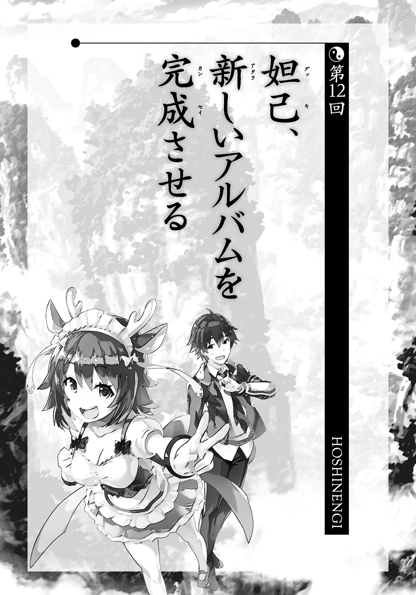
仙人界と人間の住む世界の時間の流れる速度は大きく異なっている。人間の住む世界のほうが流れは圧倒的に速かった。
そのため、妲己たちが四人体制になって初のアルバムが、崑崙と金鰲の争いの最中に完成していた。
『三姉妹』のニューアルバムのレコーディングはこれまでに例を見ないほどに厳しいチェックが行われた。
まず妲己がなかなかＯＫを出さないのだ。
ほんのわずかな音のズレでも容赦なくダメ出しをする。
さらに、ほかのプレイヤーも自分の音に疑問があると、すぐにリテイクを要求した。
ギターの王貴人の手の皮は痛々しいほどに破れていた。
紂王はドラムの叩きすぎで腕が上がらなくなった日すらあった。
胡喜媚は三日連続でレコーディングをしている夢を見て、どっちが現実かわからないような気持ちで生活していた。
事実だけ列挙すれば、地獄のような日々である。
極めつけがレコーディングされた曲数が二十曲を超えていたという事実である。
単純計算でアルバム二枚分になる。もちろんそれを無批判に並べるということなどしない。その中で曲としての力に欠けると思われたものは、次々に切り捨てられた。
そして、残った十一曲により、アルバムができあがった。
「これは伝説的な作品になったわね」
スタジオの妲己の言葉に誰も異を唱えなかった。ただ、首肯するだけだった。
「前作の『太極』で殻を破ったという意識はあったんですが、まさかそれを乗り越えていくとは思いませんでした」
珍しく、胡喜媚も手放しで褒める側にまわっている。だいたい、妲己の言葉に疑問を抱くのが胡喜媚なのに。
王貴人は徹頭徹尾新作を聞きこんでいる。
「朕が思うに、前作の『太極』は傑作ではあったが、粗い部分が残っておった。衝動のようなものが至るところでトゲのように突き出ておった。それはそれで面白い化学反応を起こしておったがな。しかし、今回の作品はそれぞれのプレイヤーが芸術家として、いかに上に行くかを目指して作った。その意識の違いが作品に表れておるのではないか。朕からは以上じゃ」
紂王は帝王学を学んだ知識人なので、言葉も評論家ぽかった。
「このアルバムは今後長らく、ロックの教科書となるであろう。単純に非の打ち所がないのだからな。いやはや、化け物を産み落としてしまったのじゃ」
「これも紂王様が参加してくださったからです。バンドを代表してお礼を言います」
妲己の当初の予想を上回るポテンシャルを紂王は発揮した。すでにベテランのドラマーの風格がある。見た目は幼女だが。
「今まではドラムなしで打ち込みでやってきましたが、まったく違いますね。ここまで生身の人間が作っている音ということがわかるとは思いませんでした」
「朕も音楽の世界に足を踏み入れて本当に満足しておるぞ。褒めてつかわす」
紂王は偉そうに子供用の脚の高い椅子の上で胸を張っている。王様なので、偉そうにするのは得意なのである。
「紂王様のドラミングはすごく重いというわけではないんです。重さだけなら、もっと上のドラマーがいます。ですが、とにかく個性がある。ああ、これは紂王様のドラムだなとすぐにわかるんです。そして、ほかのそれぞれのパートを有機的に結びつけてくれる。バラバラだったものがやっと一つになったという感じです」
「もっと褒めてもよいぞ、褒めてもよいぞ――わっ！」
紂王が胸を張りすぎて椅子の後ろへ転落した。
「さてと、姉さん、肝心のアルバムのタイトルですが、どうしますか？」
胡喜媚が妲己にピンポイントで聞いた。どうせ、王貴人は何も言わないからだ。今もヘッドフォンで爆音を聞いているので、聞こえてすらいないだろう。
「もう、決めてるわ」
尋ねてくれたことが妲己はうれしいらしい。ずっと言いたかったのだろう。
「このアルバムは新時代の幕開け、ずばり新しい暦のはじまりと言ってもいいもの。だから、こういうタイトルにするわ。――『新暦』」
「あっ、普通にいいですね。ｓｔｙｌｅには表現方法という意味もありますし、まさに私たちがこだわったことが一語に集約されている気もします」
いつもは妲己に苦言を呈する胡喜媚がまったくその役をなしていない。悪いところがどこにもないのだ。
「よーし、早くライブがやりたいわ。この音を宇宙中に届けなきゃ。宇宙征服を実現するのよ！」
ノリノリな妲己の尻尾が左右に揺れている。機嫌は過去最大級にいい。
「では、殷で全国五十箇所のツアーをやりますか。ファイナルは朝歌武道館で」
「胡喜媚、あなた、スケールがちっちゃいわね。何を堅実に一段ずつ階段上がってるのよ」
「堅実なのの何が悪いんですか」
自分が否定しないのに姉のほうが否定してきたので胡喜媚はイラっとした。
「ライブを仙人たちに見せつけるの。そうすれば、これが宇宙統一のための最短距離だということもわかってくれるわ。二つの仙人界が宇宙征服に協力するようになれば、実現もすぐ」
「姉さん、また大きなことをふっかけ――」
「ビッグマウスなだけじゃないわよ。私は、いえ、私たちは本当にやるから。この九本の尻尾にかけて誓うわ」
胡喜媚は思った。
これは前代未聞のライブツアーになるぞ、と。
キャパの大きさとかそういう次元ではない。
宇宙で一番特別なライブが行われる。
不安だってあるが、胡喜媚もアーティストだ。不安はすぐに期待に塗り替えられる。
「わかりました、この四人で伝説を作りましょう！ ノーミュージック、ノーユニヴァースの精神です！」
「ううむ、水を差すようで悪いのじゃが......」
椅子に戻ってきた紂王が遠慮がちに言った。
「朕は自分の国が傾いておるからの。まずは、そちらの応援に向かいたいのじゃ」
西岐の軍は着実に進攻を続けているし、金鰲からの援軍も協力者の呂岳が実働部隊として動いてしまったため滞り気味だった。崑崙から派遣された吒もすぐに帰っていったようではあるが。
「わかりました。事情が事情ですし、許可いたしましょう。ただし、ツアーファイナルだけは絶対に参加してくださいね」
妲己も素直に了承した。幼女の王様に頼まれると、ダメだと言いづらいのだ。
「西岐を退けたらすぐに向かう。ちゃちな打ちこみの音だけでは心も躍らんからのう」
妲己と紂王の二人の間にはこれまでとは違った信頼関係ができていた。それはアーティスト間のリスペクトによって生まれたものだった。性別や身分を超越した、純粋に個としての敬意のしるしである。
「そうだ、妲己、おぬしにはこれを授けよう」
紂王は腰に挿していた刀を鞘ごと妲己の前に突きつける。
節刀という風習だ。君命を代行する将軍に対して、君主が刀を渡すのだ。牛の尾がついた杖を渡す場合などもあるが、意味合いは同じことだ。
ライブに挑む妲己を、紂王は戦争に行く将軍になぞらえた。聴衆がライブに行くことを「参戦」と表現したりするので、あながち大きく間違ってもいない。ライブと戦は近い概念なのだ。
なお、刀は模造品である。本物を子供が持つと危ないので、妲己に差し替えられた。個として敬意を示しても、子供は子供である。
「ある意味、殷の臣であるおぬしが宇宙を制することになるかもしれんのじゃからな。心して行くがよい」
だが、妲己は丁重にその刀を押し返した。
「いりません」
「むむっ、そなた、無礼じゃぞ......」
「だって、私の武器は剣ではなく音楽ですから」
紂王はしばらく黙っていたが、
「おぬし、かっこいいな！」
――と目を輝かせた。
子供はかっこいいものが大好きなのだ。
「それに、私たちが出せる最強のものでなきゃ、宇宙征服はできませんからね。少なくとも、ほかの宇宙征服挑戦者に負けちゃうわ」
「ほかの宇宙征服挑戦者ですって？」
これには胡喜媚の口元がゆがんだ。頭にかけた布で見えない目元も、きっとゆがんでいるだろう。
「そんな奴が崑崙にも金鰲にもいるとは思えないですが......」
「だとしたら、あなたは志が低いのよ。宇宙征服を本気でとらえてない」
妲己の顔はふざけているようには見えない。もちろん、ふざけているようなことだって、妲己はいつも大真面目にやっていたのだけれど。
「感じるのよ、胎動を。私たちと同じようなことを考えてる者の胎動を。新しいはじまりがやってこようとしている」
◇ ◇ ◇
「はい、皆さん、お茶です。お好みでミルクと砂糖をどうぞ」
白鶴が人数分のお茶を用意してくれていた。これも一種の全快祝いのようなものだろうか。手伝いをメイド姿になった哮天犬がやっている。
四不像は人間の姿で座っていたが、手伝いは免除された。さっき、ずっとトイレに入っていたことをみんな覚えているからかもしれない。
戦局がどうなるのか不明な点も多いが、ティーブレイク程度なら許される時間が作れるようになったのだ。少なくとも一分後には誰が封神されてもおかしくないだなんてことはなくなった。
テーブルに茶器は並べたが、元始天尊だけはボールの上で飲むので直接手渡した。
「地獄の時間が終わったわね。やっぱ、戦争は人間性を否定するわね」
楊戩は紅茶に角砂糖を三つも入れた。こんな時は体が甘いものを求める。
大半の仙人は新陳代謝がよいため、太ることもないのだ。お茶を楽しむ姿は優雅そのもので、お嬢様にしか見えない。部屋の扉には今も楊戩が作った穴が空いているのだが。
「それで次はどうするの、最高司令官ちゃん？」
とぼけたように元始天尊が太公望に言った。まだ代理の任は解けていないらしい。
「十二使の救出に向かいます。十二使が戻ってくれば、こちらの戦力がフルに戻りますからね」
逆に言えば、十二使が戦力として加わるかどうかで勝敗が決まる。
「俺たちが守り抜いている段階で、十二使が戻ってくれば、戦力は確実にこちらのほうが上です。聞仲もバカではないから退くことを選んでくれるでしょう。けれど、このまま十二使がいないとなれば、向こうは――」
「強引に滅ぼしにかかってくるだろうね」
元始天尊が結論を接ぐ。この程度のことは誰にでもわかる。最大の危機を乗り越えはしたが、勝利が近づいたわけではない。
そもそも、わかりやすい勝利を太公望は望んではいない。
最初から敵を追い返すことしか考えていない。相手の仙人界を滅ぼす準備など一切してなかったのだから、こちらから金鰲の内部に攻めこめるわけがない。
「けど、もっと楽な方法があればそっちを選びますがね」
「おっ、さすがニート。楽をすることなら定評があるね」
「ニートじゃなくて引きこもりです。給料もらってました。つか、なんで年寄りはニートと引きこもりをごっちゃにするんだ......。立場上は在職扱いなんだから、明らかにニートに該当しないだろ......」
こういうの、なんたらハラスメントだと思う。言われる側は地味に傷ついているのである。
あと、引きこもってたからといって、引きこもり、引きこもりと連呼されたらイライラする。事実であったとしても、そう呼んでいいかは別の問題である。背が低い人にチビチビ言うのが失礼なのと同じだ。
「私は今の太公望さんは立派な正職員だと考えてますよ。給料だけふんだくってた、ぶらさがり職員の頃とはまったく違いますから」
白鶴は褒めてくれてるらしいが、けっこう心に刺さる。やはり過去を云々するのはよくない。
「それで楽をする方法って何なの？」
話がニートと引きこもり論に入りそうだったので、楊戩が戻した。
「ずばり、この時点で休戦にしちゃうんだ」
策を提案できるというのはそれなりに楽しいものだ。
実現可能性はひとまず差し置くとしても。
「敵は奇襲で終わらせるつもりだった。そのために趙公明と呂岳っていう幹部のコマを使った。なんでこいつらが出てきたかというと、聞仲にとって信頼できる仙人だったからだろ。なにせ政権をとったばかりだから、重要な作戦を任せられる奴が足りてないんだ」
「敵の戦力は見た目よりはずっと小さい可能性があるってことね」
「お前とだと、本当に話が早いな」
一を聞いて十を知るというのはこのことだ。さわりを話せば、ほとんど理解してもらえる。
「これでもリーダーのことはある程度わかってるつもりだからね。ずっと共に戦ってきたわけだし」
楊戩ははにかんだように笑う。
具体的にどこで評価を勝ち取ったのか太公望にはよくわからないが、まあ、一緒に戦ってれば友情のようなものも芽生えるのだろう。
危機も喜びも分かち合ってきた。
前者はそんなに経験したくもないが。
「楊戩が言ってくれたとおりで、短期決戦が失敗した時点で、聞仲はかなり戦いづらくなる。幹部クラスならまだいくらでも残ってるだろうけど、もともと身分的に同格の奴や聞仲より上だった奴だと、これは確実に使いづらい。それで、またこちらに押し返されたりすると、あいつ自身の責任問題にもなる」
そこに交渉の余地が生まれる。
「ただし、聞仲が殷を助けることに全力を注ぐ可能性はあるけどね」
楊戩は戦争を俯瞰的に見れている。
「あいつは大局のために平気で何かを切り捨てるタイプというよりは、情熱に支配されて、それで動いちゃうタイプに見えるわ。学はあるだろうからそんなに痛々しくはないけど」
聞仲は崑崙が嫌いなのではなく、殷を守るために崑崙の存在が邪魔なだけなのだ。殷の存在が保証された時点で、崑崙はどうでもよくなる。
太公望はぐいっと紅茶を飲み干した。思いのほか熱くて舌がざらざらした。
「たしかに殷と西岐の問題もあるけど、まずは崑崙だ。崑崙が滅んだのに西岐が無事ってことは絶対にないからな」
「そういや、西岐を守りに行った吒はどうなったのかしら？」
まさに崑崙の危機が続いていたので、楊戩も西岐のことを忘れていた。
「吒からの連絡によると、あっさり敵を封神したらしい」
正直、吒がしくじるなどとはまったく考えてなかったので、説明が遅れた。
「あいつ、仕事は全部こなしてくれたぞ。黄飛虎にもすぐに救援を求められる通信用宝貝を渡してきた。そちらから連絡がないということは今のところ、平和なんだろ」
「黄飛虎って仙人でもないのに宝貝が使えるの？」
「カメラをＯＮにした状態で吒に置かせた。その前にいて一定時間待てば自動的にビデオレターが届く」
仙人しか宝貝が操作できないなら、操作しなくてもいいようにすればいいのだ。
「そういうところはマメよね......」
「ホウ・レン・ソウがちゃんとできていれば、組織の問題の半分は消せるからな」
――と、そこで呂岳の顔がモニターに映った。
予想はついていた。敵も自力での侵略が不可能になったとしたら、崑崙に居座るのもリスキーなはずなのだ。何か提案をしてくると思っていた。
「どうした？ 和平交渉なら大歓迎なんだけどな」
『先に断っておくわ。私は事実しか言わないから』
「それは助かる。こういうのは相手を疑ってちゃ成立しないからな」
どうも呂岳の顔からは落ち着きというものが消えている。
これは狙ったとおりの結果に持ちこめるんじゃないか。
『......聞仲が一人で崑崙に向かってるわ。一人きりで崑崙を滅ぼすつもり。この場合、トップになってる太公望を倒しに来るって考えればいいのかしら』
「......言ってることがよくわからないんだが」
責任者になって早々、どうして敵の総大将に襲われないといけないんだ。
『信じられないのはわかるけど、事実よ。あなたたちのところに聞仲が一人で向かってる。あなたじゃ勝てないから、とっとと逃げなさい。被害が大きくなるから、くれぐれも一丸となって防衛するだなんて考えは抱かないことね。間違いなく、あの子は金鰲の仙人の中で最強だから。通天教主ですらかなわなかったんだから、よくわかるでしょ』
恥ずかしげもなく、呂岳は最強と口にした。
ただし、そこは科学者。すぐに根拠を説明する。
『あの子は体の半分が機械なの』
「ああ、スチーム機能みたいなのがついてるもんな」
『あれは全力を出しても壊れないようにするための安全弁なの。おかげであの子は普通の仙人をはるかに超えた力を行使できる。そうね、例えばそっちの吒って宝貝人間の力が十とすると――』
呂岳が嫌な間を空けた。
『――あいつは百ってところかしら』
十倍の差をふっかけてきやがった。
太公望は目の前に十人の吒がいて、一斉に攻撃してくる様子を想像した。どかーん。ずがーん、ばこーん。全滅。
「どうするんだよ！ そんなん絶対勝てねえよ！」
『だから、そう言ってるでしょ』
「いろいろと、ありえないだろ。金鰲の指導者が金鰲を留守にしてどうする？」
『おかげで、聞仲の秘書官をしている鄧忠や辛環は対応に追われてるわ。秘書官の嘆きの言葉が聞きたいなら、回線をつなぐけど？』
あっけにとられているのは、敵方も同じらしい。
「はっきり言ってそういうワンマン社長みたいなのは、大きな組織には向いてないぞ。結局、中間管理職が苦労することになるんだ。自分が偉いってことをちょっとは考えろ。社長室に居座ってるのも社長の仕事なんだぞ」
『私に説教しても無駄よ。もう、聞仲はそっちに向かってるわ。信じたくなくても、もうすぐ悪夢が現実になるわ』
通信はそこで終わった。というか、白鶴が切っていた。すぐに崑崙周囲に何か変化がないか機械でチェックしている。
「個人用と思われる小型の船が一隻、急接近してきてますね......。呂岳という人の言葉に誤りがないなら、これが聞仲ということになりますが......」
ティーブレイクどころではなくなった。最悪の場合、崑崙が崩壊してしまう。
「あの、師匠、敵が俺の想定を大幅に乗り越えてきました......。聞仲ってそこまでヤバいんですか？ ある程度は誇張だと信じたいんですけど......」
戦闘に特化した仙人ではなかった太公望は、金鰲の仙人個別のスペックまではよくわかっていない。幹部だから強そうとかそういうことはわかるが、それじゃゲームのボスキャラだからザコより強そうというのと大差ない。
「今の聞仲のはっきりした実力は僕だって知らないよ。けどね、一つ参考になる指標がある」
「何です？ 過去にプロフィールでも送られてきてました？」
「あの子、通天教主を幽閉したわけだよ。いくら、クーデターだから不意を突いたとはいえ、そんなことが尋常の仙人にできるわけがない」
「つまり、どれぐらい強いんですか？」
「はっきり言うよ。もし、聞仲にそれだけの力があるのなら、誰が行っても勝てない」
にべもなくボールの上から元始天尊が言った。
「ああ、竜吉公主なら十五回に一回ぐらいは善戦程度はできるかな。だけど、一分しか保たないもんね。どうしようもないよね」
「申し訳ないが、今日は力の行使が続いているため、四十秒ほどしか戦えないかもしれません。まるまる一分戦ったせいで、疲労が残っているゆえ」
もっと悪化していた。
「あの、私でもダメということでしょうか？」
自信家の楊戩は少し不満そうだ。
「誰も止めに行かないなら私がやります。呂岳の部下が何人、崑崙に残っているか知りませんけど、聞仲が来たら士気も上がるでしょうし、水際で止めたほうがいいですから」
「楊戩ちゃん、君の実力はたいしたものだよ。十二使に入れても問題ないぐらいさ。それでも、荷が勝ちすぎるね。表現を変えると、君はこの僕、元始天尊に勝てる？」
少しばかり挑発的な態度で元始天尊は言った。
「そ、それは......」
楊戩の知識が蛮勇に走るのを抑える。
元始天尊は第一世代と言ってもいいような超古参の仙人だ。その力は若造と根本から異なるはずなのだ。
別に崑崙にしろ金鰲にしろ年功序列で地位が上がっているわけではない。寿命がない仙人の世界は、ほぼ純粋な実力社会だ。若い太公望や楊戩がそれなりの地位にいるのもあくまで実力によるものである。
だとしたら、そのトップの力というのはまったく桁外れということになる。
「これが練習試合みたいなものなら君と似た性格の仙人だし、ぜひ行ってこいって言えるんだけど、今のままだと、君が三人いてもかなわないと思うよ」
――苛多ッ！
自分を納得させるように、あるいはふがいない自分を責めるように、楊戩はカップをソーサーに叩きつけるように置いた。哮天犬がおろおろと後ろで様子を見つめていた。
「じゃ、じゃあ、どうするっスか？ 崑崙で迎撃する方針でいくってことっスか？ でも、楊戩さんが三人で勝てないような敵じゃ、どっちみち勝てない気がするっス......」
四不像がぶっちゃけたが、まさしくそれが問題の核心だった。
奇妙な宝貝を使うような仙人や策士の仙人なら、太公望が出し抜くこともできるかもしれない。しかし、純度一〇〇パーセントのパワーファイターがやってくると、対策も難しい。
重い沈黙が流れる。
その間に一気に紅茶が冷めてしまいそうだった。
「困っちゃったよね～」
「本当に困りますよ......。俺は戦闘特化の仙人でもないんですから......。ガチのリアルファイトなんてふっかけられたら求められてもないのに土下座しますよ」
暴力で解決しようとしないでほしい。こちとら、口八丁手八丁で逃げて、かわして、しのいできたのだ。話し合えないクソ真面目な奴は一番苦手だ。
「なので、僕が止めてくるよ」
元始天尊が疲れたような声で言った。
声に覇気はない。それでも行くのを渋るようなところもない。
「ふえぇっ？ 師匠、今、止めてくるって言いませんでした......？」
「言ったよ。二言はないよ」
「止めるって、ガスの元栓とかですか？」
「聞仲のつもりだけど」
どこまでも元始天尊は飄々としている。
まさしく、仙人的な態度だ。
「代理に任せるとは言ったものの、この戦いは僕の義務みたいなもんだから。できれば通天教主より強いってのは何かの間違いだと信じたいけど。それが何かの間違いなら、僕が食い止めることはできるよ」
元始天尊はティーカップとソーサーを順に投げる。それはほとんど音も立てずにテーブルに着地した。
それから、う～んと元始天尊はボールの上で伸びをする。
「そういや、久しぶりに崑崙の外に出るなあ。お土産を買う気はないけどね」
「き、危険です！ 元始天尊様にもしものことがあったら崑崙はどうなるんですか！」
秘書の白鶴がすぐに止める。元始天尊がそばにいないという生活を長らく経験していなかったから、恐れより戸惑いのほうが強い。
「僕がいなくなったからって崑崙は爆発するわけでも、縮んで消滅するわけでもないよ。それに僕は現在、崑崙のトップじゃない。動いたってかまわないコマの一つなはずさ。そうでしょ？」
「り、理屈はそうですけど、師匠......」
太公望も困惑を隠しきれていない。自分の師匠にそんな危うい真似をさせるつもりはなかった。いくら自分が最高司令官といっても、それは変わらない。
「俺はあくまで最高司令官の代理ですよ！ 元始天尊様が、もしも、もしも、いなくなって......そのあと、ずっと崑崙が続いていくことになったら、誰をトップに据えたらいいんですか!? 俺じゃつとまらないですよ！」
「太公望ちゃんで難しそうなら、堂上元老の誰かでいいよ」
「軽いな！ じゃあ、誰にするか決めといてくださいよ！ こういうのは後継者が決まってないと、えてしてもめるものなんですから！」
「そんなことに時間を割いてる場合じゃないよ。それに、そんなの考えても無駄だよ。どっちみち僕が勝てるかどうか、それがすべてなんだ」
そう言われてしまえば太公望は返す言葉がない。
「あの、なにも元始天尊様が出向いていかなくても、ここで聞仲と雌雄を決するというわけにはいかないのでしょうか......？」
白鶴としては崑崙の主宰者が出ていくということに体面の問題を感じるらしい。体面などと口にしたら、楊戩にそんなこと気にしてる場合かと嚙みつかれかねないから具体的には言わなかったが。
「崑崙の内部で戦ったら、被害が出るじゃん。もっと安全なところで戦ったほうがいいんだよ。白鶴ちゃんは留守番お願いね」
そして、ボールの上部に手をかける。
ふたのようにその部分が開いた。
そのあとに、中に降りるためのはしごが少し上にせり出してきた。
「えっ、それって中に入って使うものだったんですか!?」
太公望もボールのボール以外の要素を見たのは初めてだった。
「そうだよ。【盤古旛】は中に入って運転することもできるの。すごく頑丈だから、いざとなったら、ノアの方舟みたいにこれに入ってれば、どこにでも逃げられるよ。僕だけ逃げても無意味だからそんなことはしないけど」
「それが宝貝ってところまでは知ってたけど、そういうふうに使うんですね......」
「これで戦わないといけない敵なんて普通は存在しないからね。中はちょっと、ほこりっぽいけど我慢しよう」
これ、実際の子供が見たら、すごく喜びそうな秘密基地っぽさがある。
「【盤古旛】だけに晩御飯までには帰るよ。まっ、良くも悪くも長期戦にはならんでしょ」
はしごを降りていくと、すぐに背の低い元始天尊の顔以外がすっぽり収まって見えなくなる。
「今は俺が最高司令官なのに、結局師匠が独断で動いてるじゃないですか」
聞こえてもいいような声で太公望は愚痴を言う。
それでも強引にでも引き留めないのは、ほかに打つ手が思いつかないからだ。
崑崙を聞仲一人から守るなら、（徹底抗戦を前提とする場合は）できるだけ事前に叩いておくのは悪い手ではない。それが簡単にやれないのは頭数が足りないからというより、犠牲者が出る可能性が高すぎるせいだ。
なら、元始天尊が出張るのはたしかに理に適ってはいるのだ。
「ああ、そうだ、最高司令官代理に言っておくね」
ひょこっと、また元始天尊が顔だけ出した。
「はい、何でしょうか、師匠......」
自然と、太公望も居住まいをただす。
弟子には師匠の決意がわかる。
「さすがにないだろうけど、もしも僕が封神されるようなことがあったら」
「マジで縁起でもないな」
「ちゃんと、もしもって言ってるでしょ。それでも、ないとは言い切れないからね。僕が止められなかった場合は、すみやかに降伏の交渉に入るように。多数の死傷者が出るよりはいい」
「師匠が勝てない敵に勝つなんてことは、現実味がないって言いたいんですね」
「つまりはそういうこと」
「俺は最高司令官ですから、俺がその場の判断で決めます。文句があるなら俺を代理に任命した過去の自分に言ってください」
太公望は左手の親指を自分の側に向けた。
唯々諾々とは応じない。任されたからには最後まで自分で考えて動く。
「うんうん。その心意気やよしだよ」
部下に逆らわれたくせに、元始天尊は笑っている。
「わかった。最後は君に託すよ。もし、出ていくなら――」
元始天尊はスマホ型宝貝を取り出して、地図を表示する。そこにいくつかポイントをピンのアイコンで表示する。さらにメッセージボードに二言、三言付け足した。
「――このあたりで戦いな。ご加護があるかもしれない」
太公望はその宝貝を受け取る。
画面を見て、すぐに意図は理解した。
「そうですね。できうる限り、これを使いたいです。実行するには頭数が足りないんですけど」
「そこは君の知恵の出番さ。軍師っていうのはこういう時のためにいるんだろ」
太公望はため息をついて、のしかかってくる重圧を避ける。真正面から受け止めたら、つぶれてしまいそうだ。
「軍師にもできることとできないことがありますけど、まっ、努力はしますよ。俺なりの全力は出します」
「あと、崑崙にあるすべての宝貝は君が自由に使っていいから。後ろの倉庫にもごちゃごちゃ入ってるはずだし」
まさに総力戦だなと太公望は思いながら、うなずく。
「それじゃ、最高司令官さん、行ってきます」
冗談のように元始天尊が言った。
「もっとも、俺は代理ですから、緊急の事態が終わって気楽な身分に戻れることを待望していますよ」
「努力はするよ。努力はね」
元始天尊の顔が完全に隠れ、ふたが閉まった。すぐにボールは浮き上がって、部屋の扉を開けて、飛んでいった。
しばらく、一同は扉のほうをぼうっと見つめていた。太公望は最敬礼などはしないが、それでも立ち上がって、じっとその先を凝視していた。
「上手くいけばいいわね」
楊戩も元始天尊に頼るしかない。
「いくに決まってるさ。ていうか、聞仲でも師匠には勝てないさ」
希望的観測を告げて、太公望は嘆息する。
「だって、崑崙の指導者だぞ？ そりゃ、勝つさ。勝つさ......」
自分の言葉の歯切れが悪いのはよくわかっていた。
「さて、最悪の事態に備えて、計画を練っておくか」
計画策定は最高司令官の仕事だ。
だから、これは後ろ向きではなく、前向きな仕事なのだ。
楽ができる方法を全力で考えてやろう。
「紅茶、もう一杯飲む？ 冷めちゃってるから淹れなおすわよ」
「頭、動かさないといけないし、お願いしようかな」
珍しい楊戩の気づかいに今は甘えることにした。
テーブルにノートを出して、罫線も無視して思いつくままの文字を並べてみる。
考えを整理する時は、結局こういう古典的な方法がいい。一見、無秩序に見えるぐらいに書き散らした文字のほうが、潜んでいるアイディアに気づけたりする。
悪いほうから考えてみようか。
無条件降伏の上に大きく×をつける。
聞仲の好きなようにやらせるのは最悪だ。一割でも二割でもこちらの要求を通さないといけない。
不幸中の幸いなのは話し合いの余地がある敵ではあることだ。悪鬼羅刹のように殺戮の限りを尽くすような奴とは違う。交渉のテーブルに、まさにこのテーブルにつかせることができれば道は開けるかもしれない。
まず何よりも考えないといけないのは、西岐の人民の安否だ。
一般的に考えれば敗軍の王や将は処刑される。よくても奴隷身分に落とされる。それは西岐の蜂起を焚きつけたものとして許しがたい。
場合によっては人の住んでいない世界に、「罪人」になる連中をまとめて移送するぐらいのことはしないといけないかもしれない。もちろん、特例も特例だ。一部の人間にひいきするようなことは仙人の公共性・公平性に照らして大きく問題がある。
「あまり責任を背負いこみすぎると、本当につぶれちゃうわよ」
楊戩の目から見ても太公望が焦っていることはすぐにわかるらしい。目も寝不足のように充血していた。
「それでもやらないといけないんだよ。これは西岐の運が悪かったってことじゃなくて、仙人による人災だ」
声をかけられるのは楊戩ぐらいのもので、ほかの面々は黙っているしかない。
崑崙は崑崙で正義を貫こうとしていたことをわかってもらうか？ 悪意はないのだと主張するか？ いや、下手に出たんじゃ結局のところ、聞仲にすべてをゆだねることになってしまう。それは危うい。
「やっぱり、負けた時のことまで考えても無駄だな。勝つための方法を考えるか」
元始天尊が自分のために機会は残してくれている。太公望が打って出た時に少しでも有利になるような下準備だ。
それでも、実行するには危険が多すぎる。
さらに言えば、成功確率が低すぎる。
と、そんな太公望の頭に影がかかった。
いったい何だと顔を上げると同時に両手で引きこまれた。そのままやわらかいものが顔にひっつく。
「先輩、リラックスするっス！ 今の先輩は先輩らしくないっス！」
四不像の声だ。
待てよ。とすると、この感触は人間形態の四不像の胸......。
「おい、恥ずかしいからやめろ！ むしろ、お前が恥ずかしがれ！」
「ダメっス！ 先輩が根性論みたいな感じで頑張ってるのは気持ち悪いっス！ もっとみんながあきれるぐらい、だらだらしてるほうが先輩らしいっスよ！ 頭を使うのは禁止っス！ ちょっと仮眠するっス！」
仮眠しろと言われたって、胸が直撃してるのに何も考えずに寝れんだろう。それが四不像だとしても、ただのクッションとは思えない。
そのまま四不像はごろんと床に横になった。自分をベッド代わりにするつもりらしい。
「ちょっと！ あんたたち、何をいちゃラブしてるのよ！ 人の目もあるのに何してるの！」
楊戩が顔を赤らめながら文句を言った。なんとなく、自分にない武器を使われているような気がしているらしい。
「いちゃラブじゃねえよ！ どこにもラブ要素はない！」
「十分ぐらい仮眠をとったほうがいいっス！ ほら、ねんねんころり、おむすびころりっスよ！」
「お前、人を寝させるつもりなら、もうちょっと口数減らせ......」
「高校の時の部歌を歌うっス！ 『第七シフゾウ高等学校サッカー部の歌』っス！ そ～しょくどうぶつの～ひとりとしてうまれて～♪」
「寝かせる気ないだろ！ 子守唄にしては音量がデカい！」
顔のそばで聞きたくもない歌を聞かせられて、さらに胸はずっと顔に当たっていて、太公望の思考能力は一度極限にまで下がった。
崑崙、こんろん、コンロン、西岐せいきセイキ、そういう単語がゲシュタルト崩壊を起こしてくる。
太公望の頭の中はなかば強引にリセットされた。パソコンで言うと、プログラムの更新中に電源を切るような荒療治であるが、そこは仙人なので壊れたりはしなかった。
イチから考えろ。
自分がしないといけないことは、何だ？
聞仲を止めることだ。
そうだ。
文字通り、聞仲を止めればいい。
食い止めるのではなく、止めるのだ。
かっ！ と太公望は目を見開いた。
「白鶴！ 今、確認できる宝貝を片っ端から持ってきてくれ！」
「は、はい！ わかりました！」
白鶴もその剣幕にびくっとしながら、すぐに了承した。
「あと、太乙道兄はちょうどいい宝貝がなかった場合、大至急、改造＆開発をやってほしいんです！ 必要な機能は一個だけですから、どうにかやってください！」
「そ、そうですね......やれる範囲であれば......」
太乙真人に仕様を伝えた。「それぐらいならできそうです」という答えが来た。好感触だった。ひとまず、こっちはどうにかなるということにしよう。悲観的になっている場合じゃない。
「それにしても相当な綱渡りですね......」
「それでいいんですよ。俺の作戦は師匠がやられた時の備えでしかないですから。無駄になるならそのほうがいいんです」
これで宝貝は確保できると仮定するとして、問題は残っている。
作戦を確実なものにするためにも頭数はほしい。
「先輩、急にはりきりだしたっスけど、どうしたっスか？ 仮眠はしないんスか？」
「ちょっといいアイディアが思いついたから、善は急げって感じで動いてるんだ。目下の問題は人員不足なんだけどな。ここに残って仕事をしてもらわないといけない奴もいるし」
「私も戦わなきゃいけない時は戦うっスよ！ サッカー部だからキックには自信があるっス！」
四不像が霊獣の姿のままでファイティングポーズをとる。
「はは、まあ、お前に戦ってもらうことはな――――――――いや、アリじゃないか、それ」
太公望は頭の中にある固定観念という鎖を引きちぎる。
猫の手を借りるわけにはいかないが、四不像の手ならやれるかもしれない。
「マジっスか？ 私のキックが日の目を見るっスか？」
「キックはどうでもいいんだけど、やってもらえることはありそうだ」
後ろからは、がたがたと騒々しい音がしている。白鶴が手近なところから宝貝を出してきたらしい。子供のおもちゃと大差ない有象無象のガラクタが並んでいる。
「あっ、これ。備品シールを貼り忘れていますね。ちゃんと管理してもらわないと年度末に担当者が困ることになるんですよ」
事務系職員はこんな時でも発言がずれている。そんな宝貝に太乙真人は一つ一つ目を通す。食材を吟味するシェフのように。
「これならちょっとした改造でなんとかなりそうですね。十分もかからないです」
のんびりした声で太乙真人が請け合う。彼女にとったら、気を張る必要さえないレベルだ。
「道兄、ありがとうございます！ これは動き出せと運命が囁いてるな。そうとしか思えん」
対聞仲の材料は一つずつ揃ってきている。あと、必要なのは最低限の勇気ぐらいだ。できれば、聞仲の気をそらしてくれるだけの人材がいれば言うことはないのだが。
――と、その時、扉が内側に勢いよく吹っ飛んできた。
怒牙亜亜亜ッッッンンン！
「うわあぁっ！ またですか！」
一度被害を受けたことがあったせいで用心していたのか、今度は白鶴も巻き添えを喰らわずに扉を回避した。扉が壊れるという問題は防げなかったが。
「ま、まさかもう聞仲が来ただなんてことはないですよね......？」
おそるおそる白鶴は扉があったはずの場所に視線を送る。どちらかというと、白鶴は悲観論者だった。
「吒、ただいま、帰還した」
そこに立っていたのは吒だった。西岐防衛任務が無事に終わったのだ。
「お母さん、吒、頑張った」
「ナーちゃん、ご苦労様。だけど、お母さんって呼ばないでください......恥ずかしいです......」
太乙真人はお母さんと呼ばれるのを嫌がる。生物学的な意味ではたしかに親じゃないので間違ったことは言っていないのだが。
「ほら、私がお母さんだったらお父さんは誰なのって話になるでしょう？ お父さんはいないんです。だから、私もお母さんじゃないんです」
「それじゃ、お父さんがいればいい、吒はそう解釈する」
親子にしては、ちょっと会話が嚙み合っていなかった。
吒が太公望のほうを向く。任務完了の報告なのかと思ったのだが――
「太公望、お父さんになってほしい」
「なれん！ っていうか、なるって言ってなれるものでもないだろ！」
人生でも滅多にないお願いをされてしまった。
「ほら、ナーちゃん、失礼でしょ......。すみません、ナーちゃんはまだ一般常識に疎くて......」
「お母さんとお父さんが結婚すれば、吒が子供でもおかしくない。吒は学習の結果、そう考えている。以上から、二人の結婚を要求する」
「ナーちゃん、ほんとに何を言ってるの......。それに、仙人はほとんど女性だから結婚なんてめったにしないの。人間とは違うの。た、太公望さんも気にしないでくださいね......ははは、はは......はっ、ははは、はは......」
「道兄、過呼吸気味ですが、大丈夫ですか......？」
なぜか太乙真人はテンパっておかしくなっている。そのまま、「み、見ないでください！」としゃがみこんで顔を隠してしまった。
「宝貝人間を使うっていうのは、フェアじゃないわね......」
なぜか楊戩もイライラしていた。太公望としては当事者のような、蚊帳の外のような、変な気分だった。
「フェアって何の話だ？」
「あんたは気にしなくていいわ」
楊戩から無理矢理聞き出すのも怖いし、諦めるしかない。
「まあ、いいや。それより、いい人材が戻ってきてくれた」
吒を見て、太公望はほくそ笑んだ。
貴重な、貴重すぎる戦力が増えた。
これで聞仲に立ち向かえるかもしれない。ここまでお膳立てができていて、試さないのは愚かというものだ。
「師匠、バックアップはできます。だから、大船に乗ったつもりで、聞仲と戦ってくださいね」
できれば、元始天尊がすべてを終わらせて、自分はぐうたらしたいけれど、今は我慢だ。最高司令官というのは常にいろんなことを考えておかないといけない。
金鰲との交渉についても動けるところから動いておくか。
「白鶴、もう一度、呂岳に通信をとりたい」
「何も協力はしてくれないと思いますよ？」
「立会人になってもらえれば、それでいいんだ」
居残り組がやれることはこれで最後だろう。一仕事終えたら、眠くなってきた。
「五分だけ寝る。何かあったら構わず起こしてくれ」
壁にもたれて、すっと目を閉じる。枕にしては固いが、四不像を枕代わりにすると落ち着いて眠れない。
いろんなことを考えすぎたから、知恵熱が出そうだ。
◇ ◇ ◇
時空の海がいつになく荒れている。
無論、仙人界同士の争いのせいだ。
時空の海で仙人すべての命運を賭したような企ては長らく行われていない。おそらく、どんな長生の仙人でも似たようなことを過去に経験してはいない。まさに空前絶後のことなのだ。
もっとも、時空の海とは言っても、水やその他もろもろでできている海が荒れているのとは意味合いが違う。時空の海そのものは何の変化もない。そこは何もないようでありながら、何かで充たされているような空間だ。
だから、時空の海が荒れているように見えたとしたら、それは仙人個人の心情の投影なのだ。仙人たちの心が荒れているのだ。
――などということを、仙人界から離脱した孔宣は感じていた。
クジャク形態の体の上には太上老君が乗っている。背中に【風火蒲団】が敷かれているから、孔宣もなかなか快適だった。
孔宣はもともと金鰲の幹部の一人だから、最高の格の仙人と最高の格の乗騎の組み合わせと言えた。
そんな組み合わせが崑崙と金鰲の間をぐるぐる旋回していた。
「ふあ～、ねむねむの眠たさです～」
「疲れたの？ じゃあ、寝ててもいいよ。【風火蒲団】にくるまっていいよ」
「こんなことじゃ、疲れたりなんてしません。ただ、暇だな～と思ったんです。暇だと眠ることぐらいしかすることがないですから」
「それこそ無為自然だよ。悟りの境地に最も近い心のあり方。そんなやすらぎに最も近い職業がニートだよ」
もし聞いてる人間がほかにいたら、本当かよとツッコミを入れそうだが、わざわざ太上老君に近づこうとする者はいないし、ツッコミを入れる者なんてもっといない。
「あの、太上老君様、もくもくの目的地などはないですか？ なんとなく飛び続けるのって意外と大変です」
「君はまだ悟れてないなあ。何もしようとしないことを極めていくんだよ。そうすると、一つ上の世界へ行けるようになるよ。目的なんて小さなもので自分を縛っているようじゃいけない」
「う～ん、むずむずの難しさです」
まだ乗騎と主人の間には、認識の点で大きな壁があった。
孔宣は仙人界のごたごたからドロップアウトして、それをコップの中の水のゆらぎぐらいに感じることはできる。それでも自分を何でもないものに置くというところにまでは至っていない。
「そのうち、ニート即ち解脱の境地に達するよ。修行しなさい。あっ、ダメだ。修行しちゃうと意味を持っちゃうから。修行をしないことを心がけて」
「そうは言っても、何か太上老君様も崇高で遠大な目的があったりするんじゃないんですか？ 孔宣様はそのように考えてます」
「どうかな」
太上老君は会話でも感情をほとんど表さないので、孔宣も太上老君がとぼけているのか、素なのか判断がつかなかった。太上老君的な価値観でいくと、思量する必要もないのだが。
と、時空の海の遠くで発光があった。
――飛火ッ！ 飛火ッ！
どうも不吉な光のようである。あと、光が白っぽいものと緑っぽいものがあるので、宝貝同士による争いだろう。
「相当上位の仙人による戦いですね。孔宣様でも危ないかも」
ただし、それ以上、孔宣も興味は示さない。
崑崙と金鰲のどちらが勝とうと、孔宣には関係がない。
だが、争いを見るとまだ血のどこかが騒ぐ。これが、時空の海が荒れているように感じる正体のようだ。
やがて、発光は収まる。決着がついたのだろう。それでも、魂魄が飛ぶようなことは起こらないから、誰かが封神されたわけではないらしい。
「よーし、あの光ってたところに移動して」
「太上老君様のほうが興味を示すだなんて、れあれあのレアですね」
高速で移動することもできるのだが、孔宣はマイペースでそこに向かった。作為は極力加えないという主人の価値観に合わせた結果だ。
球形のものが時空の海の中で浮かんでいた。外側には「大破」という文字が表示されている。そして、足だけがその球形から飛び出ていた。
「きもきもの気持ち悪さです」
「でも、封神はされてないみたいだね」
太上老君はその足を蕪でも引っこ抜くようにつかんだ。
ボールから負傷した元始天尊が出てきた。
頰が焦げたように少し黒ずんでいる。
「わわっ！ 先輩！」
元始天尊はあわてて姿勢をただす。彼にとって太上老君は姉弟子に当たるのだ。
「先輩、聞仲に負けちゃいました......」
みっともないところを見られたわけで、元始天尊は素直に恐縮した。
「そうみたいだね。正直、余裕とはいかないまでも、君のほうに分があると思ってたんだけど」
太上老君は絆創膏を出すと、適当に顔に貼りだした。
「僕もそのつもりだったんですが、聞仲のところに着くまでに体調が最悪なことになったんです」
「君、緊張でおなか痛くなるタイプだったっけ？」
太上老君はきょとんとしている。
「【盤古旛】の中に呂岳のウイルスが入りこんでたんです......。太乙ちゃんの対策宝貝は密閉されたところには入れないから、除菌できてなかったみたいで......」
元始天尊はそのままウイルス型宝貝に密閉空間で感染して、バッド・コンディションで聞仲を迎え撃つ破目になった。おかげで攻撃を避ける集中力も保てなかった。余計な攻撃を何発も喰らった。
「そうだとしても、君が負けるとは思わなかったけどね」
「聞仲が予想以上に調子がよくて......。あれは好調と不調の波がはっきり出るタイプの仙人ですね......」
言い訳を並べても、崑崙の主宰者であるのに負けてしまったのは、なかなかつらいものがあるらしい。
「本来なら僕が勝ってました......うぅ、寒気がする......」
「彼女も負けられないからね。しょうがないね」
太上老君は終始無表情だった。彼女がどちらの陣営でもないからだ。
「ボクはボクなりのやり方でここまで強くなれたけど、聞仲って子はまた違うんだよね。一つのことに情熱を突き詰め続けて、それで本来出せない力を出す――それもまたアリと言えばアリかな」
「ですね......。面目ない......」
「君は無為自然と作為のどっちつかずだから、ダメなんだよ。作為が悪い方向にいってないからまだマシだけどね」
太上老君は弟弟子を引っ張って孔宣の後ろに乗せた。
「のんびりゆっくり崑崙まで連れてくよ。あのボールの宝貝、壊れてるでしょ？」
「面目ないです......」
レッカー移動のようだと思いながら、元始天尊は現在の最高司令官に連絡を入れた。
「ただ、すべての機能が壊れているわけじゃないんです。自走機能はダメなんですけど」
「どういうこと？」
きょとんと太上老君は首をかしげる。
「時間はかかりますが、攻撃にはまだ使えます」
「まだ戦うつもりなの？ やめたほうがいいよ」
「いいえ」
ふるふると、元始天尊は首を左右に振った。
「戦うのは僕の弟子です」
そう言いながら、元始天尊はスマホ型宝貝を取り出した。
◇ ◇ ◇
「お疲れ様です。そうですか、わかりました。いえ、ご無事でなによりです。あとはこちらでやりますので」
通話を終えると、太公望は一同のほうに顔を向けた。
「師匠が負けた。聞仲がこっちに向かっている」
みんな、最悪のケースは考えていた。考えないわけにはいかなかった。だから、さほどの驚きはない。
「それで、ここからはどうするの？」
楊戩は段取りは聞かされているが、結論はまだだ。元始天尊と聞仲の動向次第でそこはいくらでも変わりえた。
「基本的にみんなに伝えていたとおりだ。これが一番効率がいいはずだ」
太公望の中には青写真は描けている。あとは、それをちゃんとした形にすればいいだけだ。
そうならないなら、崑崙が消えるかもしれない。
「ここじゃ戦えないから、俺と吒で飛び出して、時空の海で迎え撃つ。その間に楊戩、白鶴、太乙道兄でコンピュータをいじっててくれ」
「我は何をする？」
「竜吉公主様は留守番です」
戦える時間がいくらなんでも短すぎる。
「俺と吒は勝つつもりで向かう。でも、今回ばかりは勝てるかわからない。だから、俺と吒は居残り組の時間稼ぎ程度に考えてくれ。居残り組の手腕があれば、滅ぶものを滅ばないようにすることだってできるかもしれない」
「わかってる。聞仲を説得できるだけの材料を集めておくわ」
楊戩はどんと胸に手を置いた。
「こちらは任せて。あなたは前座のつもりでやりなさい」
「だな。結局、最後は頭のいい奴に頼まないとダメなんだよ」
楊戩が偉そうにしてくれているほうが太公望も安心できる。
「あんたらは前座だから、命を懸けたりしなくていいわよ。吠え面かいてるぐらいでちょうどいいわ」
「任せろ。楽をすることにかけては誰にも負けな――」
楊戩は太公望の前に出ると、
「信用できない」
右手でしっかりほっぺたをつねった。口が少しだけ開く。
「ふぁにふるんだよ」
「あなた、西岐が殷の仙人に攻めこまれた時、何をしたと思ってるの？ あんたはファッション引きこもりなのよ。楽をするとか言って、すぐに献身的なほうを選ぼうとする。そっちのほうが心理的には楽だから」
「ふぉめん」
引っ張られているせいで、上手くしゃべれない。
だけど、気持ちだけは本当にごめんと言ってるつもりだ。
「全員が助かるようにしてやる。俺も含めてな」
「私にウソついたらただじゃすまないわよ」
引っ張っていた手が腰にまわされる。
楊戩は恥も外聞も今は捨てていた。楊戩がそこまでしないといけないのは、太公望が悪い。楊戩を騙すようなことをこれまでも繰り返してきた。
そこに悪意がなくたって、騙したことに変わりはないのだ。
「お前、そんなに抱きついてきたら、変な噂たてられるぞ」
自分のその言葉ももしかすると、まだ不実なのかもしれないな、そう太公望は思う。でも、もっと素直にありがとうと言ったら、かえって縁起が悪い気もする。
腕はようやくほどける。
わがままを続けられないほどに事態は切迫しているのだ。
「ほんとは離したくないんだからね。行ってらっしゃい」
「絶対に、ただいまって言ってやるよ」
一人で引きこもるのも悪くはないけど、こうやって誰かと抱き合っているのもそれはそれでいいな。
「太公望、早く行くべきであると吒は提案する」
「そうだな。できるだけ手前のほうで止めなきゃな。スープー、頼む」
「頑張るっス！ しっかり戦うっス！」
ぽんと四不像が霊獣に姿を変える。
吒が太乙真人に頭を下げた。
「お母さん、行ってきます」
「はいはい、無事で戻ってくるんですよ」
太乙真人もお母さんじゃないとは言わなかった。
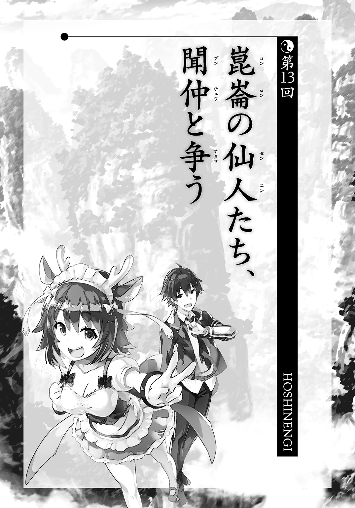
時空の海の移動中、太公望はやけにセンチメンタルな気分にひたっていた。なにせ、自覚症状があるほどなのだから相当なものだ。
「なあ、スープー、聞仲はどうして一人で攻めてくるんだろうな」
「それは戦争を早く終わらせるためっス。あの人は多分根は悪い人じゃないっスから」
「うん。それぐらいは知ってる」
「だったら聞かないでほしいっス......。答えて損した気分っス」
失礼なことを言われて、四不像はわずかに眉根を下げた。
「聞仲のやってることって、はっきり言って非常識じゃないか。戦争をふっかけるのも、一人で突っこむのも非常識だ。ついでに言えば妲己なんかさらに非常識だ」
「そうっスね。みんながやろうとしないことをやろうとするからトラブルになるっスね～」
「けどさ、そういう非常識な奴らによって歴史って動くんじゃないかって思うんだよ」
「何が言いたいんスか？」
四不像は楊戩ほどものわかりがよくはない。なので、伝えたいことは全部話さないといけない。
「常識的に生きるだけじゃ、歴史やら世界やら、そういうデカいものは動かなくて、無茶苦茶なことをやる奴だけがそれを変えられる。だとすると、常識人って嫌な役回りだよな。デカいこと言ったって、何も自分たちじゃ変えられないんだ」
それって空気読まない奴らに歴史や世界はかき乱される運命ということじゃないのか。空しくもなるし腹も立ってくる。みんなが他人の迷惑をもっと深刻に考えることができれば、不幸なことだって起こらずにすむというのに。
「常識人にできることと言ったら、守ることぐらいだ。自分たちが築いてきたものをそのままにしておくように努力する。汗水流す。血を流す。やってられないよな」
それでもって、未来の人間には先読みのできなかった頑迷で愚かな守旧派とでもみなされたりするのだ。そんなものだ。
「何をアンニュイになってるんスか。先輩も非常識な側じゃないっスか」
四不像は心底あきれていた。
「先輩が非常識なものを止めるために動いてるっていうのがいい証拠っス。常識的な人はそんな役割を背負わないっス。目には目をってことで、非常識なものをどうにかするのには、非常識なものが駆りだされる運命なんスよ」
「俺はごく普通に生きているだけだ」
「きっと、ほかの非常識な人たちもそう考えてると思うっス」
生きるというのは大変だ。自分なりに生きているだけで非常識ってことになるのだから。
吒は四不像の横をきれいに併走している。吒は人間ではないから、恐れも怒りも持っていないかもしれないが、これが普通の人間だったらどんなことを考えるだろうか。自分も何を考えているかよくわからないので、純粋に疑問だったのだ。
「吒、壊れるまで戦おうとしなくていいからな。お前のお母さんが悲しむ」
「言われるまでもない。だが、吒は戦うために生まれてきた。自分の存在意義のためにも戦わないわけにはいかない」
「それもそっか」
吒はお手伝いロボじゃない。こんな危機的な状況にこそ輝く戦闘機械だ。
戦場は古来から、命が失われる恐怖の場であると同時に、晴れ舞台でもあった。
どっちかだけが事実なのではなく、どちらも事実なのだ。自分たちにできるのは、それが晴れ舞台になるように尽力することだけだ。
「吒はこの戦いの勝利確率はさほど低いものとは考えていない。だからこそ、太公望もこの作戦を実行に移したと推量する」
「お前がそう言ってくれると、すごく勇気づけられる」
データで裏をとってもらえると、太公望も気が楽だ。
前方に船が一隻見えてきた。確実にあれが聞仲だろう。
「【火尖鎗】使用開始」
吒がぼそりとつぶやくと、Ｙ字の槍からエネルギーが射出されて、船に直撃した。
――愚汚汚汚汚汚汚汚汚音！
大爆発が起こる。飛んでくる破片を【打神鞭】の風で止めないといけないほどだった。
「おい！ いきなりすぎるだろ！ せめて警告ぐらいしとかないとまずくないか......？」
「世の中は先手必勝だとお母さんから聞いたことがある」
「誤りとは言わないが、一応仙人界同士の争いだからな......卑怯と言われることはしたくないかな......」
「どうせ聞仲がこんなことで死ぬわけがない。吒の予測は九五パーセント以上の蓋然性を持つ」
それは事実であった。
爆発した船の横で聞仲が平然と浮いている。
「船が壊れてしまいましたが。呂岳さんに改造してもらっていなかったらまずかったですね。昔は黒麒麟という霊獣に乗っていたものでしたが、それよりも安心感があります」
時空の海を移動するのは特別な能力なので、どの仙人でも有しているものではない。だからこそ、霊獣が必要になる。聞仲の場合は、機械化で補っているらしい。
「いきなりの攻撃、申し訳ない。金鰲の指導者、聞仲殿とお見受けする」
形式的なことでしかないが、一礼をした。
元始天尊と戦ったせいか、衣服はやけに破れて、汚れている。
いくらなんでも無傷とはいかなかったらしい。そのあたりのことは元始天尊からも連絡を受けている。
そうでなければ困る。
こちらは元始天尊と戦って消耗している聞仲と戦う前提なのだ。
「崑崙への道案内ならうれしかったのですが、攻撃を受けたということは、そうではないということですね」
「ここから先は通せない。正しくは闘志むき出しのお前は通せない」
「では、強制的に通らせてもらいます。というか、元始天尊を倒した時点で、崑崙の負けは決まったようなものだと思いますが。あなた方の行動は犬死に以外の何物でもないですよ」
太公望は右手の親指を自分の顔に向けた。
「崑崙の代表はこの俺だ。まだ、負けてない」
「それでは屈していただきます」
聞仲が出してきたのはやけに長い鞭だった。
「私は雷に関するものをつかさどるよう、上から言われていましてね」
その鞭を一振りすると、聞仲の周囲に金色の線のようなものが浮かび上がる。星と星の間に線を引いた星座のようにも見えた。
頭からは白い湯気のようなものが漏れ出ている。
「宝貝【金鞭】。さあ、止められるものならどうぞ」
吒は【火尖鎗】だけでなく、金属の輪っかをはめた手も突き出すと、
「【火尖鎗】、【乾坤圏】、同時攻撃」
輪っかとエネルギー弾をぶっ放す。
吒に細かな作戦などはない。
押して押して押しまくる、ストロングスタイルのみだ。
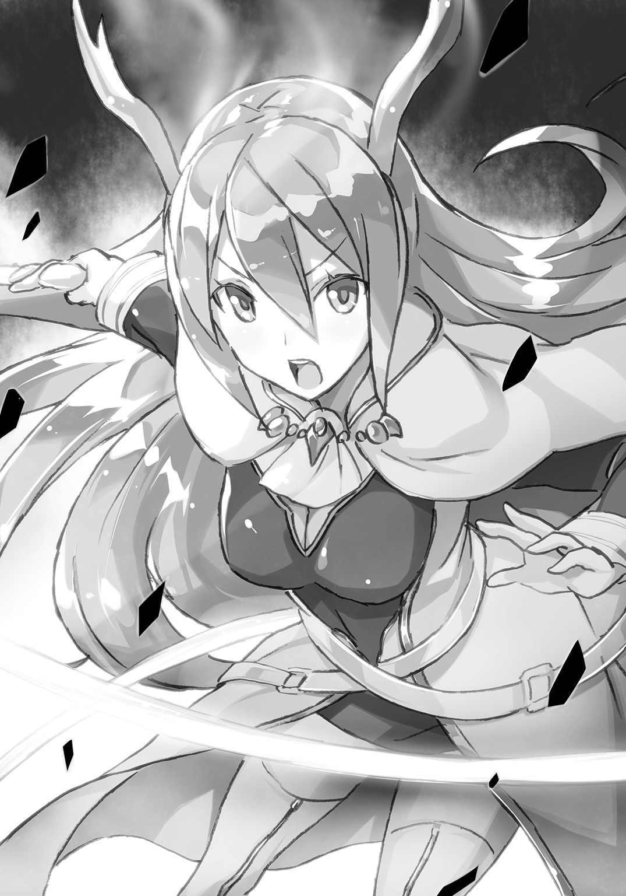
そして、そのゴリ押しを有効に駆使することによって崑崙最強の破壊力とまでに言われるようになった。
聞仲の周囲でまた爆発が起こる。
さっきよりも一段階上の攻撃だ。
案外、これで決着がつくのではないかと甘えたことを考えたくなるほどの威力。
吒ですら手ごたえがあったのか、攻撃の手を一度止めた。
しかし、元始天尊に勝利した仙人が、そんなにもろいわけはなかった。
爆発の中心部にまだまだ戦う意志を失っていない聞仲が見えている。
「この程度、殷の方々の苦しみと比べれば痛みにもなりません！」
「新規のダメージはほぼなし、傷はすでに負っていたもののみ、そう吒は判断する」
「【金鞭】は金鰲を代表する宝貝なんです。雷による結界を生み出して、身を守りつつ、敵を打つ――トリッキーな要素もない、堅実な宝貝です。問題は力の弱い者が持つと御しきれずに死んでしまうことですが」
一瞬、雷の筋のようなものが飛んできて、気づいたら吒に直撃していた。
そこで大爆発が起こる。
「足に一箇所の破損発生」
吒の左足が腿あたりから吹き飛んでいる。
「大丈夫か！ いや、大丈夫じゃないとは思うけど......」
吒が苦痛を示さないのでまだ見ていられるが、そうでなければ太公望も思わず目を背けただろう。生身の仙人ならもう戦場から離脱するしかないはずだ。
「敵の攻撃が速すぎて認識が追いつかない。極めて難しい戦いを課せられることになると吒は判断する」
「ええ、そうでしょうね。こちらも金鰲のプライドというものがありますから。ただし、そんなものを背負って戦っているわけではありませんけれど」
雷撃が太公望の周囲に飛んでくる。
「当たったら死ぬっス！」
吒が避けそこなった攻撃を、ぎりぎりのところで四不像が回避する。
霊獣としてはエリートと聞いていたが本当に優秀なんだなこいつ、と太公望は思った。時空の海を移動する能力にかけては仙人よりも霊獣に分がある。
太公望も四不像にしがみつく。強引な動きで、目が回るが我慢するしかない。
「一発かわすだけで、命がけだな......」
「どうしました？ 攻撃しないと私は倒せませんよ」
「平和的に終わらせたいんだけどな......！」
雷撃が飛んでくる方向はある程度絞れるので、なんとか【金鞭】に向けて全身全霊の風をぶつける。
これで雷の軌道をわずかにそらすのだ。遠方から攻撃は飛んでくるので、少しでもそらすことができれば、太公望に近づく頃にはかなりずれたところを雷は通過する。
ただ、今の時点でこちらから攻めに出るのは現実的に考えて不可能に近かった。
「スープー、近づけるか？」
「あと一ミリたりとも前に出たくないっス」
「俺も同意見だ......」
何の前触れもなく、雷撃がびゅんびゅん飛んでくる。
間合いが意味を持つような遅い攻撃ではないが、近づけばその分、回避は難しくなる。
「攻撃は吒だけに任せようかな......」
吒には痛みがないから、足の負傷も気にせず、攻撃を続けている。逆に言えば、吒のような特例でなければ、攻撃を続けられるとも思えない。
実力が違いすぎる。
まるですべての生物の生殺与奪を一手に引き受けているような超攻撃的な宝貝ではないか。ある瞬間、雷撃が来て、それで死ぬ。防御らしい防御の方法もちょっと思いつかない。
「私にはあまり時間がないんです。すみやかに崑崙まで向かわせていただきます」
聞仲の体に雷が鎧のようにまとわりつく。
そして、太公望のほうに近づいてくる。霊獣はいないが、それでもその動きは決して緩慢なものではない。
「一回退くぞ！」
「了解っス！」
太公望は脱兎のごとく後方へ逃げる。背後から雷撃が来るから気が気ではないが。
「だらだら逃げるのは好みませんよ！ 太公望、あなたも崑崙の代表と言うなら、その立場にふさわしい戦いをしなさい！」
「そんなことをしたら、死ぬだろ！」
雷をひやひやしながらかわす。
恐怖を覚えているということはまだ生きているということだ。
元始天尊が生きていたのは元始天尊だからだ。あるいは【盤古旛】というシェルターに入って戦っていたからだ。太公望は一発受けたら、もう終わりだ。
「俺はな、拳で語り合うとか、そういう古臭い価値観が大嫌いなんだよ！ それじゃ、どれだけ大義を語ったところでたんなるマッチョイズムになる！ 正しさっていうのは、そういうことの外側にあるんだ！ お前の発言がどれだけ正しかろうと行為が間違ってるんだ！」
「ですが、無力では正しさを証明することもできないでしょう！ あなたの言う西岐が殷を滅ぼす未来も来ないでしょう！」
太公望は逃げる。逃げることだけを考えて逃げる。
そこに吒が飛びこんできて、聞仲を遮った。全ての宝貝が火を噴く。
「吒、援護にまわる。それが最善と判断する」
「その程度の攻撃、どれだけ繰り出しても無駄です！」
爆風は起こるが、宝貝のバリアーを突破できない。
それでも聞仲も多少は気がそがれる。それだけで太公望としては充分にありがたい。その間にかろうじて雷撃をかわす。
「ここまでは予想通りだな......」
まさか、聞仲もこちらが逃げ回るだけだとは思っていなかっただろう。
一般的に敵は自分から向かってくるものだ。戦闘意欲がどこにもない敵というのを殲滅するのはけっこう面倒だ。そこに求められているのは鬼ごっこに勝つための技術であって、戦闘とは微妙に違う。
「さっきから何ですか！ 情けないとは思わないんですか！ 私が気に入らないなら、堂々と攻撃してきなさい！」
「堂々と攻撃したら俺のほうが死ぬだろ！」
「情けないのはわかってるっスが、逃げるのも作戦のうちっス！」
「私に臆病者の情けない尻を向けるなっ！」
雷撃が【打神鞭】に直撃した。
――罵犠遺ィィィィ......。
【打神鞭】の上から半分が藻屑と消えていった。
武器消滅。
「マジかよ......。ぶっ壊れた......」
自分や四不像に当たらなくてよかったと思う余裕もない。
「よ、予備はないんスか......？」
「ない」
「これで丸腰ですね。降伏を勧告いたします」
そりゃ、誰だってそう言うだろう。武器のない敵に負けるとは誰も考えない。聞仲もケリがついたと考えたのか、表情が多少やわらかくなった。
「いや、俺は降伏しない。まだお前の攻撃を避けることならできる」
「......愚かな」
聞仲からすると、本気で理解できないらしい。頭から白い湯気のようなものがこれまで以上に出る。そりゃそうだろうなと太公望も思う。
それでもやらないといけないのだ。崑崙を守るためには手段など選んでいられない。
「もういいです。先ほどからちょこまかとうるさい仙人のほうから片付けることにします」
聞仲の意識が吒のほうに行く。
これまでも吒は攻撃を繰り返していたのだが、【金鞭】が作っているバリアーで大半が無力化されていた。
「このまま続けても無駄だということは、あなたも承知かと思いますが」
これが最後通牒だ。
「吒も太公望が負けを認めない以上、屈するつもりはない」
「わかりました。ならば戦えなくするまでです」
――俊、俊、俊！
聞仲の雷撃がこれまでで最大の数、飛んでいく。
まずい。太公望がもっと吒のそばにいれば、無意識のうちに身を挺してかばおうとしたかもしれないが、そんな暇さえなかった。
ある程度、力が拮抗していないとヒロイックな展開さえ生まれはしない。
「――回避不可能......」
吒が容赦なく、吹き飛ばされた。
その体は海老反りになって、時空の海を漂う。思わず、四不像は目を伏せた。
だが、魂魄が封神界に送られるようなことはない。
宝貝人間である吒は魂にあたるものも含めて宝貝でできている。飛んでいく魂魄もない。おかげで即死するようなことは免れていた。
「吒、限りなく大破に近い状態となったと分析する」
つぶやく程度のことはまだできるのだ。四不像もほっとした。
しかし――
「吒は自力での移動が不可能になった。移動に関する部品や機材、装置などに大幅な損傷が出た」
時空の海を漂いながら、吒は訥々とつぶやく。潮に流されるプランクトンのように、ふらふらしている。
これで太公望側の戦力は表面上なくなったに等しい。
太公望が素手で殴るという手段は残っているが、直接的な打撃ができるほど聞仲に近づくこともできない。雷のバリアーはおそらく触れればそのまま感電する。
太公望サイドがやれることは白旗を揚げることぐらいだ、そう聞仲が思って当然だろう。
「さて、これでもまだ負けを認めないというなら、封神させていただきますが」
感情をろくに交えずに聞仲は言った。
「あなたは私と違う立場とはいえ、崑崙のために立派に戦ってきました。その点は評価いたします。これで金鰲の軍門に降ることになったとしても、誰もあなたを責めはしませんよ。私も崑崙の仙人たちを苛むようなことはいたしません。大半の仙人には咎もありませんし」
すでに聞仲の頭は戦後処理に入っている。
「俺は無駄なことはしないタチだ。無駄は無駄でしかないからだ」
「ならば、これですべては終わり――」
「さっき言っただろ。まだ終わってはいない」
「先輩がそう言ってる限り、私も戦うっス！」
冗談のように太公望はファイティングポーズをとる。しかし、冗談ではないのだ。一秒後には封神されているかもしれない恐怖を必死に隠してのファイティングポーズなのだ。
「あなたに戦う手段は残されていないでしょう？ それとも、恥ずかしくて生きて戻れないのですか？」
「そんなしょうもない理由じゃねえよ。俺はプラグマティストなんだ。もちろん無駄なこともしない。俺の言葉は一貫してるぜ」
「......もういいです。話してわかり合う必要もありませんから」
「ああ、お前の全力を見せてみろ」
聞仲はこちらを滅ぼすことに決めたようだ。そりゃ、そうか。わからず屋にまで憐憫を垂れ続けなくたっていい。聞仲の周囲がぴかぴかと発光してゆく。
「戦って死なねば納得しない者もいる、それは私も知っています。崑崙の指導者に敬意を表して最大級の一撃を加えましょう」
律儀にも超弩級の攻撃を聞仲は仕掛けてくるらしい。充塡時間が多少はいるようだが、もとより太公望にその隙を衝いて、打ち倒す余力はない。接触したところで感電して封神されるだけだろう。
「スープー、次の一撃が運命の分かれ道だ。絶対にかわせ。死んでもかわせ」
「それは矛盾してるっス」
「俺の頭も混乱してるのかもな。頼むぞ、スープー」
「わかったっス！ 先輩、信じてほしいっス！」
四不像は聞仲に向かって突っこんでいく。
死中に活を見出すとばかりに。
そして、聞仲の究極の一撃を――
「私のおこないがいいなら――助かるっ！」
すんでのところでかわす。
かわしたというよりは、雷撃の勢いに吹き飛ばされたような格好だが、かわす。
そのまま、聞仲に向けて突っこんでいく。
「運がいいですね。ですが、まだ一発かわしただけです！」
聞仲は攻撃手段を失ったわけでもなんでもない。すぐに更なる雷撃を加える。
けれど、それも――
「気合っス！ 体育会系の意地っス！ サッカー部の意地っス！」
四不像はそのすべてを回避していく。右に左に、時に止まって、時に全力で前に出て。
太公望も必死にしがみつく。
「まさか、気迫だけで私の攻撃を......!?」
聞仲は我が目を疑った。
精神力でなら自分が負けるはずがない。殷を想う心の強さは自分がよく知っている。それは謙虚な聞仲がほぼ唯一、自負している点だった。
なのに、その自分の攻撃をあの霊獣は乗り越えてくる。
まるで、心で聞仲に勝っているとでも宣言するように。
「心配するな。気迫だけでこんな奇跡は起きないさ」
最大の危機をやり過ごして、太公望の表情にもわずかばかりの余裕が戻る。といっても、薄氷の上を履みながらの余裕だ。数秒後に封神されていても、なんらおかしくはないのだから。
――それでも、突っこむからには当たらない成算はある。
「お前の雷撃はな、少しずつ網の目が粗くなってるんだよ。自分じゃ気づけなかったか？ 戦闘中、ずっとお前の攻撃は劣化していってたんだ！」
太公望は奇跡を期待して距離を詰めているのではない。
攻めに転じる隙ができてきたと考えたから、動いた。
「聞仲、お前は元始天尊様との戦いと、俺との戦いとで、確実に消耗してる！ 俺に接近を許すぐらいにな！ お前のほうも終わりが見えてきてるんだよ！」
敵は無限に力を行使できるわけではない。
むしろ、機械化されているからこそ、限界が近い。
それなら、敵を徹底して消耗させて、そこを狙えばいい。
「だからといって、あなたに攻撃手段などないで――」
火炎が聞仲のそばをかすめた。
「吒、【火尖鎗】による非常用攻撃に切り替える。ただし威力は通常時の三七パーセントほど」
吒は移動は不可能だが、攻撃機能が全滅したとは言っていない。
「ふん！ これぐらい、いくらでも避けながら攻撃できます！」
聞仲は吒に多少の意識を向けながら、【金鞭】を振るう。
だが、さっき以上に気をそがれてのものだから、攻撃は粗雑になっていた。
「回避行動が容易になってきてる気がするっス」
四不像の声にも落ち着きがある。乗騎とはいえ、太公望とともに危ない橋を渡っているのだ。むしろ、太公望の命を預かっているだけ、その責任の重さを感じているかもしれない。
「お前はすごいよ。並みの霊獣ならすでに一発や二発受けてオシマイだ」
「褒めるのは無事に帰還してからでいいっスよ」
「それじゃ、スープー、申し合わせたとおりにやってくれ。あとは任せた」
「この任務、絶対に成功させるっス！」
聞仲はじわりじわりと接近してくる霊獣に危機感を覚えた。
そこに太公望が乗っていることがいよいよ不安を煽る。
武器は壊れたはずだが、それでもまだ何か余計なことをやってくるのではないか。
霊獣は最悪、あとまわしでもいい。まずは太公望を確実に討つ。
雷撃の狙いを慎重に定め――攻撃にかかる。
「よし、やるぞ！」
「ラジャーっス！」
太公望は四不像にしがみつくのをやめた。
ふわりと太公望の体が時空の海に投げ出される。無防備も同然だが、だからこそ聞仲は困惑した。
「な、何を――！」
ただし、それは太公望がいい的になっているからだけじゃない。
四不像が単身、聞仲との距離を詰めてきたのだ。
「行くっス！ ゴールネットは目の前っス！」
聞仲は焦った。
敵が二手に分かれた。
定石どおりなら、自分に近寄ってくる四不像をすぐに撃ち落とせばよいのだ。ほかの順序などありえない。
事実、聞仲は【金鞭】を四不像に向けた。
しかし、その動きには明らかに無駄が、逡巡が、躊躇が、あった。
それは究極的には、油断によるものだった。
この霊獣に戦闘能力などないだろうとどこかでタカをくくっていたのだ。
あるいは、太公望のほうが何か仕掛けてくるだろうと警戒していたのか。
どちらにしろ、わずかに遅れが生じた。
その遅れの間に、四不像は人間の形態になり、ふところから宝貝を取り出す。
それは分厚いキーボードのような代物だった。
「やっぱり、人間の手のほうが打ちやすいっスね」
四不像のほうには迷いなどない。すべては作戦のとおりなのだから。
「宝貝【異令漏刻器】っス！」
高速打鍵。
キーボードのパネルをばしばし、ばしばし叩く。叩くっ！
聞仲は自分の筋肉の異状に気づく。
端的に言えば、体が上手く動かない。
金縛りに遭ったようだと言えば近いだろうか。
おかげで【金鞭】が振るえない。
「この【異令漏刻器】は精密機械に対して、『止まれ』という誤った命令を起こさせるっス！ 機械化されてるあなたの体の大半は精密機械そのものっスから、効果はバツグンっス！」
四不像が勝ち誇ったように笑う。効果覿面なのだ。それぐらいの顔をする権利はあるだろう。
この宝貝は太乙真人が短時間で作ったものだ。
何かを動かしたり、作ったりする機械の作製は膨大な時間がかかるが、壊すための機械なら、もっとシンプルにできる。
有効範囲が狭いので、接近しないと効き目がないのが玉に瑕だが。
だから、四不像に力を借りた。とにかく近づいて、起動してくれればそれでいいのだ。
「お前を止める方法が何かないか、全力で考えたんだよ。その結果、文字通りにお前を止めればいいじゃんってところにたどりついた」
これが、太公望なりの聞仲の止め方だ。
「こ、こんな子供騙しで私がやられるなんて......」
聞仲は悔しさにくちびるを嚙む。見た目にもスマートとは言えない、格好の悪い宝貝一つで聞仲の動きは止まってしまったのだ。
「この間に【火尖鎗】が来るというわけですね。ですが、少しぐらいなら私も耐えてみせ――」
「吒は動作停止の信号を受信したため、しばらく動けない。再起動まであと一分三十秒」
「吒さんにまで効いちゃってるっス！」
四不像が顔を覆った。これで決まるはずだったのに！
「吒さん、反応がよすぎっすよ！ そこそこ離れたのに！ これなら、もっと遠距離から、この宝貝使えばよかったっス！ 危険を冒して接近したのに損したっス！」
「いや、まだマシだ。もしかしたら、吒だけ停止して手の内をさらす結果になったかもしれん」
「だからって、これからどうするっスか？ 先に敵に動かれたら終わりっス！」
「スープー、サッカー部仕込みのキックで倒せ」
「先輩、どうせできないって思ってるのが見え見えっス！」
そりゃ、そうだ。スープーキックで倒せるほど、聞仲は弱くないだろう。それに、聞仲が動き出せるようになった時点で瞬殺されるし。
「心配するな。あてはある。だから、スープー、お前は俺を連れて、全力でここから離脱しろ。というか離脱してくれ、マジで」
「どうしてっスか？」
「理由はあとだ！ とにかく、離れろ！」
四不像も太公望が焦っているのがわかったのか、ぷかぷか浮かんでいる太公望を人間の姿のまま、つかんで距離をとる。
「まさか、このままトンズラするわけじゃないっスよね？」
「いや、きっと俺たちの勝ちだ。スープー、聞仲と戦ったのは俺たちだけじゃないだろ」
「つまり、『ここにいない崑崙の全員で戦ってた』ってことっスね！」
「違う。そういう精神論的なことじゃない。たしかに、ここにはいないんだけど、もっと具体的」
「聞仲と戦ったのは、元始天尊様しかいないような気がするっス」
「それで正解だ。もう振り返っていいぞ」
まばゆい光の筋が聞仲に向かって、伸びていた。
「まさか......この光は......！」
聞仲が驚愕に目を見開く。
「【盤古旛】は時空の海でエネルギーチャージをしてたんだ。ちなみに発射の指示は俺のスマホ型宝貝からでもできる。パスワードは師匠から聞いてた」
「だから、動きを止めなきゃいけなかったんスね」
「そう。一回はずれたら終わりだからな」
幸い、はずれることはなかった。
光の筋は聞仲にぶつかり、巨大な爆発を起こした。
まるで、そこから宇宙がはじまったかというほどの。
「俺たちの勝ちってことでいいよな？」
「これでぴんぴんしてるなら勝ち目はないっス」
「お前の言うとおりだ。けど、ありがとな。お前が戦うって言ってくれなきゃ、この策は練れなかった」
あの言葉がなかったら、太公望と四不像の分離作戦は思いつかなかった。でなければ、あれほど聞仲に接近するのは難しかっただろう。近づけば近づくほど、難易度は上がっていくし、聞仲の意表をつくこともできない。
「私は自分の気持ちを叫んでるだけっス。そこから作戦を思いつくのは先輩の腕っス」
「うん、叫んでるだけなんだろうな」
「そこはドライっスね！」
次第に目がつぶれるかというほどの光がやわらいでくる。
その中に大きく負傷した聞仲がいた。元始天尊の宝貝でも封神されてないことのほうに驚くべきかもしれないが、戦闘の継続は難しいようだ。
聞仲の体からこれまでにないほどに大量の湯気が出ている。
今度はその湯気で視界が閉ざされそうだ。
「くっ......あとちょっと、あとちょっとだったのに......」
悔しげに聞仲がつぶやくが、その声すら発するのがやっとという調子だった。
長時間にわたる戦闘とこの負傷で限界に達したのだろう。
西岐の進軍中に聞仲と会った時、呂岳がこんなことを言っていたのだ。
――落ち着きなさい、聞仲！ 興奮したら、また倒れるわよ！
つまり、聞仲のプライベートまで細かくは知らないが、長く戦うことなどできない体ということは察しがついた。
だから、時間の引き伸ばしにかかった。【金鞭】とかいう、起動状態にしているだけで体力を使うような宝貝をとことん長く使わせた。ただでさえ、元始天尊が事前に敵を消耗させていたのだ。敵のほうだって戦える時間は短いはずだった。
策は当たった。聞仲は力尽きた。
もっとも、本当は体力を消耗させただけで止まってくれればよかったのだが、ずっと聞仲は戦い続けていた。その時点で奇跡だ。とてつもない執念のかたまりだ。
「俺の粘り勝ちだな。やはり、人生は粘ったもの勝ちだ。納豆は最低三百回、箸をまわすべきなのだ」
「こんなシリアスな局面を納豆でたとえるの、やめてほしいっス」
しょうもない会話ができる程度に緊迫感が弛緩しだしていた。聞仲も胸を押さえていて、とても【金鞭】は振るえそうにない。これでぶんぶん振るわれたら、太公望たちの負けだ。
「吒は、敵が戦闘続行不可能と判断する」
こちらもぷかぷか漂いながら吒が言った。戦うかどうか決めるのはあくまで聞仲だろうが、太公望に有利な意見が提示されるのは単純にありがたい。
「あと少しのところで......殷を守れたのに......」
聞仲は自由の利かない体で泣いているようだった。
彼女の計画は最もいいところで頓挫したのだ。
もっとも、それは万全な態勢で勝利を企図した結果とは言いがたいから、何割かは自業自得だった。
金鰲の仙人たちを使い、もっと確実に崑崙を追い詰めれば勝機はいくらでもあったはずだ。それなのに、単身で突っこむなんて方法をとった時点で聞仲は勝利よりも人命の尊重や被害の軽減を優先したことになる。
殷を守るという至上のはずの命題がその時すでにゆらいでいたのだ。小さな矛盾が生まれていたのだ。
それが、聞仲のやさしさであり弱さだった。
限界だった。
――などと太公望は解釈してみるが、すべては結果論なのだということぐらいはわかっている。これで聞仲が無理を通して崑崙の制圧に成功していたら話は変わっていた。
「しょせん、勝てば官軍でしかないってことか。事前に師匠に出向いてもらっている時点で、俺は官軍の顔もできないけどさ」
太公望は聞仲に接近する。
宝貝が壊れたとはいえ、肉体的な負傷のない太公望と、息をするのもつらい聞仲とでは、どちらが有利かは明らかだ。
「と、とどめを刺しなさい......今の私なら首を絞めるだけで充分ですから......」
うつろな目で聞仲が言う。
無茶の代償は張り詰めた気持ちが切れた途端にやってくる。もしかすると、意識すら朦朧としているかもしれない。
「悔いは残りますが、これで崑崙の勝利です......。往生際の悪いことはしません......」
「そんなこと言うなら、お前もその宝貝、手から離せよ」
まだ聞仲の手には【金鞭】が握られているのだ。
「これは......仙人の誇りのようなものですから」
「お前、俺が首を絞めるところまで来たら、残りの力で俺をつぶそうと試みる気なんじゃないだろうな？」
太公望は策士だ。だからこそ、相手のことも素直には信用しない。
聞仲はしばらく黙りこんでいたが、やがて、くすくすと笑い、
「ですが、このままもたもたしていると私が回復してしまうかもしれませんよ」
――と挑発した。
たしかに微妙なところではあった。聞仲の回復時間なんて、太公望にはわからない。太公望に戦闘能力はほぼないのだから、聞仲が一割でも力を取り戻したら、勝機は消える。
「どうです......？ あなたもこれまで命を懸けてきたんでしょう......？ それと似たようなものじゃないですか......」
聞仲が誘ってくる。
ということは、罠なのか。
あるいはとどめを刺されないためのブラフなのか。
どうとでも考えられる。
「シュレディンガーの猫ってこういうことを言うのかな。違うのかな。文系だから、詳しくわかんないや。というか、猫でそんな実験するなよ。蛾ぐらいにしとけ」
「さあ、どうします？ どうせ、こちらはあなたにすべてを委ねるしかないのですから」
吒も太公望のほうに視線を向けている。
全員が太公望の判断に注目している。
もっとも、太公望本人の結論はすでに出ていた。
「俺はな、他人の命を奪うことに自分の命なんて懸けたりしない」
四不像に聞仲から距離をとらせる。
これまでに体を張ったことはある。それは事実だ。
だけど、それは人の命を救うためのものだ。殺すためとは違う。
「この考えを変更するつもりはない。少なくとも、この数時間のうちはな」
「あなたは甘いですね」
聞仲は深いため息をついた。
これで聞仲の中でもこの争いは終わった。
鞭をふところにしまう。
「ですが、甘いのは私も同じでした。あなたの選択を尊重します。ご立派でした」
彼女のその笑みが、戦うことを諦めたことをよく示している。
「褒められるようなことはしてない。俺は単純に最も平和で楽ができそうなほうを選ぶってだけだ」
「その割には大変な役回りだったように思えますけれどね」
「といっても、時間稼ぎでしかないけどな。真打は別にいるんだよ」
遠目に何かが向かってくることに太公望は気づいた。崑崙のほうから近づいてくる。
「援軍を用意していたのですか。そういう策をとるのも当然かもしれませんが」
「といっても、戦闘のためじゃないけどな」
「戦闘と無関係な援軍などいないでしょう」
その説明は援軍にさせればいいか。
「さて、ここからは主役交替だ。もっと頭のいい奴にバトンタッチする。ただし、お前のほうは撤退禁止な」
「どうせ、移動もできませんよ」
太公望は通信用のスマホ型宝貝で、近づいてくる何者かに状況を説明した。それで太公望の任務は終わった。
しばらく待っていると、遠くに見えた何かはだんだんと目にもはっきりと小型船と認識できるようになってきた。
小型船のハッチが開き、犬に乗った少女が下りてくる。
「お疲れ様」
小型船から出てきたのは楊戩一人だ。
楊戩はひとまず周辺の状況に目をやった。太公望から報告を受けたとおりか確認しているのだろう。
「ごめんね、思ったよりも時間がかかっちゃった。機械のほうはすんなり進んだんだけど、人とのやりとりのほうが面倒でね」
「俺が勝ったんだから、何も言うことはないさ」
「それじゃ、みんな船の中に入って。そんなに広くないけど、この人数ならなんとでもなるわ」
「吒は現在、自走ができない」
「あなたもすぐに回収するわ。それと――」
楊戩は表情を硬くして聞仲のほうに視線を向けた。
「あなたにも入ってもらうわよ。私はあなたに説明をしに来たんだから」
「今更、何を？」
「すぐにわかるわ。心配しなくても取って食いはしないから。私たちはそんなに野蛮じゃないのよ」
太公望は、すぐに人を蹴ってくる楊戩がその台詞を言うのは完全にギャグだと思ったが、余計なことを言うと蹴られるリスクしかないので黙っていた。
小型船の中は崑崙のコンピュータが大きく場所をとっていた。船への備えつけではなく、崑崙の元始天尊の部屋から運んできたものだ。強引に積みこんだ。
「ここに来てもらった理由はこれ。この機械で再度、殷と西岐の行く末を占おうってわけ。占いじゃなくて、科学的に結論を出すんだけどね」
「あなた方が用意した機械を信用しろと言われても無理があります」
聞仲はこの期におよんでも堂々としている。殷と金鰲を背負っているという自覚があるのだろう。
「そう言われるのもわかってたわ。その程度のことを先読みしておくのは天才じゃなくてもできるけどね」
楊戩は小型船の奥の部屋をこんこんとノックした。
扉を開けて出てきたのは、
「立会人として来てくれと頼まれてね」
白衣姿の仙人、呂岳だった。
「呂岳さん......あの、お疲れ様でした......」
聞仲は呂岳が崑崙の船に乗っていたことに複雑な気持ちがした。しかも、自分のほうも戦えなくなって、ここにいるのだ。
「ねぎらいの言葉はもうちょっと先でいいわ。このコンピュータ自体はどこにもおかしなところはないから。一通り、確認はしたけど、性能だけをアップグレードしたものと考えてくれていい」
「わかりました。呂岳さんのお墨付きがあるのであれば、確認などは省略させていただきます。ですが、元々崑崙側では殷が滅ぶという結果が出て、金鰲では殷が残ることになっていたはずで――」
「だよな。だから、この機械はそういうのも込みで、とにかく何度も計算するようにできてる。今までの一回の計算で百回分の計算ができる。太乙道兄にもご協力願って、かなりパワーアップさせた。俺も細かいことはよくはわかってないんだけど......とにかく見てみてくれ」
楊戩が小さくうなずいて、開始ボタンを押した。
小さなウインドウのようなものが開いては閉じて、また開いては閉じた。超高速でコンピュータは計算をしているらしい。
見つめている意味もないのだが、聞仲も太公望もずっとその画面を凝視していた。
――泌献ッ！
結果が出たことを告げる音が鳴った。
殷と西岐が争いを続けた場合、
殷が滅ぶ............四十五回
殷が滅ばない......五十五回
しばらく聞仲はその数字をじっと見ているだけだった。窓の外を何をするでもなく眺めている飼い猫の仕草に似ていた。
「パーセンテージで言うと、かなり拮抗していますね」
それが聞仲の感想だ。滅ばないほうが勝っているとは抗弁しなかった。
「なぜ、こんなことをしたかというとね、多数の仙人が絡んでいる時点で、その国家の本来の命運なんてものははっきりわからないってことなのよ」
この船での主役である説明役は楊戩だ。
「私たちがこれまで人間の世界の未来を事前に予測しえていたのは、私たちが高次の存在として上から見ていることができたからなの。だけど、そんな連中が人間の両陣営に分かれて争った時点で、結論はわかりやすい一つだけのものじゃなくなってくる」
そのあたりのことは基本らしく、誰も異を唱えない。むしろ太公望と四不像が置いていかれそうだった。
「まして、殷にはたんなる野良仙人と呼べないほどの力を持つ妲己がいる。しかも、どの陣営も現在進行形で一進一退の争いをしてた。結論はさらに複雑になるに決まってるわ。どう転んでもおかしくない状態で、もしやと思って何度も計算したらこうなったってわけ」
「たった一つの歴史だけが正しいという時代は終わった、ということですね？」
聞仲の質問に楊戩は首肯で応じた。
「正直、俺もまだ完璧には納得できてない。理屈ではわかる。楊戩の言うように、今回が特例だからというのもわかる。だけど、初めての事態だもんな。受け入れようとしても、なかなか抵抗があるよな」
「あなたは私の味方なんですか......？」
戸惑い気味に聞仲が尋ねた。
これでは聞仲の気持ちの代弁だ。
「俺は誰の味方でもない。少なくとも命を懸けてまで崑崙も、西岐も、仙人界も守る意義があるのかさえよくわかってない。あと、これは今から話す提案の前提だ。まだ第一ステップだ」
楊戩はまた何かボタンをかちかちと押していく。
計算しないといけないことはほかにもある。
「これは何を調べているのですか？」
聞仲の顔が曇る。一瞬だけ表示されてはすぐに消えるウインドウにはどうも不吉な文字が見えた気がする。
「そう時間もかからないわ。どうせ二度手間になるから待ってて」
また結果を告げる明るい効果音が鳴った。
殷と西岐が争いを続けた場合、
殷が滅んだ場合の死者数............二万～十万人
殷が滅ばない場合の死者数.........十五万人～五十万人
聞仲は口を押さえた。
まさに絶句したと言ってよかった。
こんなものを見せられて、何を答えればいいのだろうか。
「このまま、争いをだらだらと続けていっても殷に対する反抗勢力はくすぶり続ける。何をもって戦争の死者にカウントするかっていう問題もあるけど、軍隊内で発生する風土病や、食糧が入ってこずに飢饉が発生した辺境とかの間接的な死者を入れると、とんでもない数になる」
太公望がいた世界でも、中国で強力な統一王朝が現れなかった時代、たとえば五胡十六国時代などで人口が激減したことがあった。日本でも南北朝時代に従軍した武士団の非常に多くが戦死していた。
戦死率が高いというより、内乱が長引きすぎて、結果的に戦闘が恒常的に起きていたのだ。そして戦闘が頻繁に起これば、田畑は荒らされ、村落も略奪される。生存環境はいよいよ悪化する。そうなると、また戦争が生み出されるという悪循環。
内乱が長期にわたって続くと国だけでなく、人民が疲弊するのだ。
そして、そんな事実は聡明な聞仲なら余計にはっきりとわかるはずなのだ。
「殷を愛しているっていうのは、殷の民を愛してるってことと同じだろ。お前が殷を守ろうとすれば、それだけ殷の民が死ぬんだ。まさか、金鰲の仙人を派遣しまくって、恐怖政治でもやるわけにもいかないだろ。覆水盆に返らずってことだ」
おそらく聞仲も答えは出ているのだ。
殷を存続させるわけにはいかないとわかっているのだ。
それでも、ずっと殷を背負ってきた者として、はいどうぞと手放す気持ちにはなれない。その葛藤がそれを認めるのを胸の内で拒んでいた。
また湯気が出てきて、聞仲がよろめく。
「うっ......気分が......」
「聞仲！ あなた、またこんな無理をして......。これ以上、体を失ってもいいの！」
呂岳は聞仲の体の状態がすぐにわかった。場所も気にせず、その場に寝かす。
「もう、今すぐ封神されてもおかしくないのよ！ バカ！ 人の言いつけをまったく聞かないんだから！ どれだけむこうみずなの！」
その言葉は心配しているというより、叱っているといったほうが近い。語気も本当に強かった。保護者が子供に向けているような、そんな響きもあった。
「ご、ごめんなさ......」
「改善する気がないなら、謝らなくていいわよ」
呂岳は完全に腹を立てている。
「一人で突っこんでくる時点でこうなるリスクはわかってたけど、何の力のセーブもしなかったわけね......。私も応急処置しかできないんだけど......」
「ちょっと、大丈夫なの......？ この船に医療設備なんてないわよ......」
楊戩もこんな形で聞仲が苦しんでいるとは考えていなかったので困惑気味だ。危篤と言っていいほどに顔色が悪い。
太公望も説得中に聞仲が倒れることまで考慮にいれてなかった。持ち直したように見えたが、またそこに心理的な要因が加わったらしい。心労がとどめになるほど、ボロボロということか。
「なんとも言えないわね。どうせ、医者が言っても聞かないんだから仕方ないわ」
匙を投げたというように、呂岳がこぼした。
「ふふ、殷が滅ぶと同時に私が滅ぶというのは、ちょうどいいかもしれないですね......」
天井を仰いでいる聞仲の目はうつろだった。視線も定まっていない。
「殷がなくなったら私の生きがいもありませんし、これで――」
――破闇！
呂岳が頰を張った。
「あなたは金鰲のトップでしょうが。無責任なことを言わないで。弱気なことを言って許される立場じゃないことを覚えておきなさい」
冷たい声で、呂岳は言った。
金鰲を統べる者――これは聞仲が覚悟のうえで背負った業だ。だから、逃げることは認めない。それが嫌なら、最初から何もしなければよかったのだ。
「死のうとしても何度でも蘇らせるわ。最低でも金鰲の戦後処理と殷の問題が片付くまで」
「はい、本当に、本当にごめんなさい......」
泣きながら、聞仲がうなずいた。
「今の『ごめん』は聞いてあげるわ」
呂岳もやっと許す気になったらしい。
太公望はしばらく聞仲に視線をやっていたが、多少はまた体調も戻ってきたようなので、話を再開することにした。
「あのな、殷が滅んだ場合って表示されてたけど、滅び方にもいろいろあるからな。あんまりショックを受けすぎるなよ。ほら、会社だって倒産することもあれば買収される場合もあるっていうか」
「何が言いたいんですか？」
「平和裏に西岐へと政権を禅譲するのもアリってことだ。西岐も殷の政治を助けることがスローガンだから、殷が下手に出れば問答無用で滅ぼすだなんてことはできないし、姫昌もやらない」
「ああ、そういうことですか......」
太公望としては最初から、その策を勧めるつもりだった。西岐を守ることを考えていたからといって、殷に被害が出ることを望んでいたわけじゃないのだ。いい落としどころがあるなら、それに越したことはない。
「もっとも、殷に妲己がいる間はそう単純にはいかないだろうけどな」
殷はすでに妲己をはじめとする面倒な仙人たちになかば占拠されている。ありふれた人間だけの国家とは違う。
「裏を返せば、妲己が去れば殷と西岐の間で妥協することもできるだろ。ここまで西岐が大きくなった手前、両国が並び立つことはできないだろうけど、戦争は最小限に留められるはずだ」
ここで行われているのは派手さも何もない、ありふれた政治協議だ。
人間たちもこうやってお互いに含むところもありつつ、合意を重ねてきた。ゼロかイチかのつぶし合いをずっとやっていてはすべてが滅んでしまう。
妥協ってそんなに悪い言葉ではないな、そう太公望は思う。
正しい者が正しくない者を一方的に叩きつぶすことは正しくはない。
少なくとも聞仲に勝ったからといって、金鰲を滅ぼして、すべてを崑崙の意のままにすればいいというわけにはいかないのだ。
仙人界の片側である以上、もう片側にもなんらかの責任を負う。
「西岐が殷を吸収するなら、それは殷が残ってるってことだろ。殷は西岐の中で生き続ける、それで大目に見てくれないか」
聞仲が折れることのできるラインはここだと思った。
本来、これは自分たちが負けそうな場合の駆け引きで提示するはずの案だった。
聞仲は破壊が好きなわけではない。最も被害の小さくなる方法なら話し合えると思った。
それでも聞仲がフルに戦える状態では、こちらの思惑どおりにいくかはわからない。まず、殷がなくなるという事実を受け入れさせるのはかなり難しい。
交渉を有利に進めるために争うことは必要で、その争いに太公望は辛くも勝った。
表面上、金鰲の意見を尊重しているようで、崑崙は確実に交渉のイニシアチブをとっている。
聞仲はしばらく何も答えず、倒れたまま、呂岳の顔を仰ぎ見ていた。
金鰲の中では、聞仲はそこまでキャリアの長い仙人ではない。先輩の意見を聞かせてほしいということだろう。
「あなたが決めなさい。私はあなたの体の面倒は見るけど、意見までは知らない」
呂岳は徹底して甘えを払いのける。
「あなたは好き勝手にやってきた分、その苦痛を味わわないといけない。私にできることは、その苦痛を一緒に背負ってあげることだけよ」
了承の意を示すように、聞仲はゆっくりと目を閉じた。
目の中にたまっていた涙が一滴、頰を伝った。
「わかりました......。あなた方の案で殷と西岐の話は決まりとしましょう」
「つまり、崑崙と金鰲の争いも終わりってことだな？」
すぐに太公望が確認をとる。
「はい、それでよろしいです......」
その言葉を聞いた太公望はふらふらとその場にくずおれた。
全身の力が抜けた。とてつもなく大きな峠を越えることができたのだ。
「いやあ、よかった、よかった......。今はよかったとしか言えない......」
ほかにどんな言葉があるだろうか。これは中三の時のマラソンが終わった時ぐらい達成感があった――と思ったけど、あれは途中棄権だったから、さほど達成感なかった。
「もう一度言うね。お疲れ様、太公望」
勝者の側である楊戩にも目に涙が浮かびはじめていた。
本当は船から降りたところで、もうそんな弱々しい顔を見せてしまいたかったのだけれど、その時は状況が気丈に振る舞うことを強いていた。
「ほらな、戻ってきただろ。ウソじゃなかった」
楊戩をあまり悲しませる結末ではなくてよかった。そうなるリスクもおおいにあったのだ。再会を祝す程度のことならいいだろう。
「出ていく時より強く抱き締めてあげるからね」
楊戩が近づいてくる。このタイミングならいくらでも抱擁されたっていいかな――
そこに横から何かがぶつかってきた。
「よかったっス！ 先輩、お疲れっス！」
人間形態の四不像がヘッドスライディングのごとく、突っこんできていた。勢いが強すぎて、太公望はタックルを受けたように吹き飛ばされる。
「お前、威力を考えろよ......」
「いいじゃないっスか！ 戦争が終わったんだから無礼講っス！」
「それ、目下の奴が決定していいことじゃないぞ」
抱擁のお相手は四不像になった。そのせいか、ちょっと冷めた気持ちになっている太公望だった。崑崙にいた時にも抱きつかれたし、とくにどぎまぎしたりはしない。
草食動物がじゃれてくるノリなのだろうか。でも、それならもっと癒し効果が表れないとおかしい。癒しはまったくと言っていいほどにない。
「ちょ......このタイミングでそういうのって、どういうこと......？ 割りこみみたいなのはよくないわよ！」
楊戩は楽しみにしていた冷蔵庫のプリンでも取られていたような、理不尽さを感じているらしい。
「割りこみって何のことっスか？」
底意地が悪いのではなく、四不像の場合、素だった。だからこそ楊戩としては腹が立ちもするのだが......。
「何でもないわよ！」
苛立ちをまぎらわすように船室の壁を殴りつけた。
壁がへこんでいた。
「お前、船を壊すなよ......」
「それじゃ、先輩、あとで崑崙に戻ったら打ち上げやりましょうっス！」
四不像は割合、あっさりと太公望から離れた。しょっちゅう抱きついてるだけあって、四不像の側もカジュアルな感じで特別な感情はない。
「わかった、男に二言はない。打ち上げに参加してやろう」
たかが打ち上げへの参加だけで、やけにおおげさだった。
「しかし、愚行はせんからな。お前、一気飲みとか運動部でやってたクチだろ。ああいう悪習はあらためていかねばならん。酢豚にパイナップル入れるのよりも悪い。体育会系は死すべし」
実際、全寮制の男子高とかだと、入寮時にビールの一気飲みをさせられるようなところだって昔はあったのだ。そういう野蛮人は矯正していかねばならない。
「先輩は別にソフトドリンクでもいいっスよ」
「と言いつつ、全員生中を頼んでて、一人だけウーロン茶で浮いてるみたいな空気になるんじゃないだろうな？ そういうのがアルコール事故を生み出す温床になっているかもしれんのだ」
変な打ち上げの話題が途切れた。
そこで楊戩の目がまた太公望に注がれる。
「あっ、あの、太公望......」
「うん、何だ？」
今度こそ抱きつける。当然、恥ずかしさはあるが、それさえ乗り越えれば......。
楊戩が太公望の前に立った。
「今なら許してあげる。キ、キスしても......いい」
――動宇宇宇宇運！
何かが殴りつけてきたような衝撃があった。ただし楊戩が壁を殴ったのとは規模が違う。
もっと、こう、船そのものが殴りつけられたような感覚なのだ。
「うわあぁっ！ 震度五はあるっス！」
四不像はあっさりと転んでいた。
「もしかして金鰲の奇襲なの!? 聞仲、援軍でも呼んでたんじゃないでしょうね!?」
「私はそんなこと、命じていませんよ......。攻めこんできたのは完全な私の単独行動ですから......」
誰も状況を把握していない。とにかく、衝撃が船にあったことしかわからない。
太公望は窓から様子を見ることにした。聞仲の命令がないとしても金鰲の仙人が独自に追っかけてきたこともありうるだろうし、妲己が攻めてきたということもありえないとはいえない。もっとも、窓の外を見てすぐに何が起きたかわかったが。
「誤字の多い船が置いてある......」
そう報告した頃には招いてもいないのに船に誰か入ってきていた。
「お姉様が大変そうだと聞いて、やってきましたわ！」
超公明だった。
「げっ......」
呂岳は趙公明と目が合うとすぐに隣の部屋に逃げこもうとした。その時にはもう趙公明に抱きつかれていた。
「お姉様、ご無事だったんですね！ わたくし、すごくうれしいですわ！」
「ああ、うん......無事だから離して......。そこそこ迷惑だから......。私にも迷惑だし、周りにもそれなりの迷惑かけてるから......」
――頭剛ッ！ 罵剛！
楊戩がやたらと船を殴っていた。
そうでもしないとストレスのやり場がないのだ。
「ったく、雰囲気ぶち壊しよ......」
「お前は船をぶち壊すなよ......？」
「なによ、女同士だからって、べたべた抱きついて......」
趙公明に引っつかれてはっきりと嫌な顔をしている呂岳を、なぜか楊戩はうらやましそうに見つめていた。
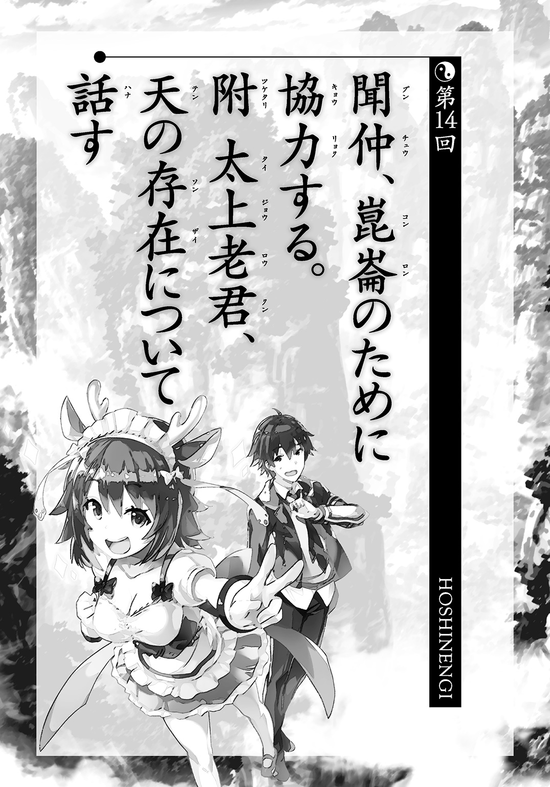
小型船に乗っていた一行は崑崙に向かうことにした。趙公明の船がぶつかったせいで故障している恐れもあったが、幸いどうにかなった。
移動中、聞仲は絶対安静ということで寝かされた。あと、趙公明はうるさいということで、呂岳によって物置に押しこまれた。
いくらなんでも扱いがひどいのではと太公望は思ったが、一分後に開けたら寝息たてて眠っていた。なんだかんだで大物なのかもしれない。
船上で崑崙と金鰲の本部のほうには通信で和平が成った旨、連絡を入れた。結果的に両陣営の幹部クラスが集まっているので、文句もとくになくスムーズに終わった。
ただし、十二使と天君の争いの場に関してだけは別だ。
どちらにも、まったく連絡がとれない。
「天君の宝貝のせいかな。だとすると、あとで直接向かうしかないか」
「変ね......。それだとしても、金鰲からもつながらないってことはないと思うんだけど......。結界系の宝貝の威力が強すぎるのかしら......」
呂岳は不審に思っていたが、空間干渉がメインの天君の宝貝ならありえないことでもなさそうだ。
崑崙に戻ると、元始天尊が回らなくなったボールの上で寝ていた。【盤古旛】の回収はすんでいないので、本当にただのボールである。
「師匠、終わりました。おケガ、大丈夫ですか......？」
「うん、そんなにたいしたことはないよ。しかし、負けるとは思わなかったな......。なかなかいい勝負だったねとか言って、僕のほうが勝つつもりだったんだけど......。そしたら、僕の株も上がるかなって思ってたんだけど......」
普通に悔しそうに元始天尊は聞仲のほうを見つめた。聞仲のほうは呂岳に寄りかかって立っていたが、ばつが悪いので、顔を横に向けた。
「あの時は、ご体調も悪そうでしたから......」
「ウイルスにちょっとかかったからって、負けるつもりはなかったんだよ」
「私の宝貝のほうが攻撃に特化していた分、有利に働いたというだけです。おいたをして申し訳ありませんでした......。攻撃性能も呂岳さんに高めてもらっていましたし......」
「とはいえ、負けは負けだからね......。もっと修行もしないとな......」
「あ～、そうそう、太上老君様が元始天尊様をお連れしてきてくれたんですよ！」
気まずくなっているなと思った白鶴が話題の転換を図った。
「へえ、李誕がそんな気の利いたことをするなんて珍しいな」
「弟弟子の元始天尊様のこと放っておけなかったんだと思いますよ。また、ふらっとどこかに行ってしまいましたが」
「あいつがいたら、ちょうど封神界のこと、聞けたんだけどな」
労働とは最も縁遠い仙人がどうしてそんな厄介なことを請け負っているのか、いまだに気になっている。たんなる個人的興味と言ってしまえばそれまでだが。
「あの、ここの通信機器でも、天君たちに連絡はできないでしょうか......？」
聞仲はまだ戦争の終結を知らされていない者たちのことが気がかりらしい。そこで戦死者でも出ようものなら、極めて後味も悪くなる。
呂岳に支えられていたが、ようやく自分の足で立つことにした。
「私の作戦が水泡に帰した以上、いずれ政権は通天教主様にお返しして、私は引退するつもりでいます。そこで処罰されるなら、それもやむをえないでしょう。ですが、この争いの完全な幕引きができるまでは責任者として振る舞わねばなりません」
その言葉を聞いて太公望は、こいつ、どこまで真面目なんだろうと思った。
「通信を試すことならすぐですよ。でも、こちらは敵国だったわけですからね。上手くいきますかね......」
白鶴がすぐに準備はしてくれたが、やはり上手くいかなかった。天君はもちろんのこと、十二使の側も無理だ。
「どんだけしっかり遮断してるんですかね。空間干渉系の宝貝は事務が滞るから嫌いです......スムーズな連絡は組織運営の基本中の基本なのに......」
「もし、激戦になっているんだったらマズい。ちょっとその付近を拡大してもらえないか？」
十二使が留められていたのは、かなり崑崙から近い場所だった。先ほども天君の宝貝があることを確認できたのだ。
どうも、引っかかるものがあった。これほどまでの通信障害が起こるだろうか。しかも、金鰲の幹部も事態を把握していないというのも気になる。
「太公望さん、やけに焦ってますね」
白鶴もその不安が伝染したように、顔をしかめた。
「だって、これじゃ、相手のほうが連絡を取るのを拒絶しているみたいだろ。金鰲の天君たちが徹底抗戦の構えじゃないなんて保証はどこにもない」
太公望の言葉のせいで、場に緊張が走る。
「そ、そんなことは......」
聞仲の言葉は、太公望の危惧を否定するにはあまりに弱々しかった。
「そっちのクーデター政権はそんな強固なものじゃない。それにクーデター政権の中からさらに分派が出るのだって、とくに珍しくないさ。ていうか、俺だったら自分たちの身の安全が保障されるまでは武装解除はしないな」
「なぜですか？ 崑崙側が金鰲を断罪することはないとメールでも伝えているんですよ」
「問題はそこじゃない。金鰲の中だ。お前の側に一度は立った連中は、お前が政権を通天教主に返した場合、罪人に転落して罰せられる恐れがある。そこに不安があるなら投降はしづらい」
「あなた、今日は冴えてるわね」
楊戩が素直に感心していた。
「連中にしたら、自分の命が懸かってるんだぞ。慎重になるのは当然だ」
その間にも、白鶴はコンピュータをいじり続けている。
「場所に動きがないなら、このへんですかね」
モニターに該当場所の拡大図が映る。
「んっ、これは陣の入り口か？」
そこには【紅砂陣】と書かれた看板が見えた。その中に小高い砂の山があり、アリ地獄のような穴が空いている。
「【紅砂陣】は張紹――張天君の宝貝ね。あの陣の中では刃物のような鋭利な砂が吹き荒れるから、入ってしまうとただじゃすまないわ」
「恐ろしい宝貝だな......。ほかにもいくつか陣らしき入り口があるけど、ついでだから、後学のために説明してくれ」
太公望が呂岳に言った。休戦状態であれば、個人情報も何もないだろう。
「秦天君の【天絶陣】は入ると雷が落下して相手を倒すわ。
趙天君の【地烈陣】は雷と火で敵を倒す。
董天君の【風吼陣】は風と炎で包み込んでさらにそこに刀剣が飛んできて敵をぐちゃぐちゃにする。
袁天君の【寒氷陣】は天井の氷と地面の氷で敵をはさんで八つ裂きにする。
金光聖母の【金光陣】は無数の鏡からビームを出して敵を殺す。
孫天君の【化血陣】は砂を巻き上げて敵を倒す。
柏天君の【烈焰陣】は三つの火で敵を倒す。
姚天君の【落魂陣】は陣に入った者の魂を飛び散らせる。
王天君の【紅水陣】は触れると相手を液体にする溶解性の赤い水を浴びせる」
「砂で倒す奴と雷や火を使う奴、ちょっとずつかぶってないか......？」
張天君の【紅砂陣】と孫天君の【化血陣】がだいたい一緒な気がする。
「あと、秦天君の【天絶陣】と趙天君の【地烈陣】がどっちも雷だし、趙天君と董天君と柏天君が火でダブってる」
「それ、本人たちの前では言わないでね。割とみんな、気にしてるから」
「本人たちも意識してるのかよ！」
「安易に炎とか使ったらダメなのよね......。かぶるんだって......」
「これ、能力的に姚天君の【落魂陣】が一番強そうだよな。異能力バトルの王道的に、火や風に頼る奴はショボい」
「だから、黙っててよ......。能力の差があるって落ちこんでたりするんだから......」
とにかく、そんな看板が時空の海の中にやたらと並んでいた。ここに閉じこめて、十二使を動けなくしていたのだろう。
「けど、おかしいわね......。どの陣もとくに封がされてなくて、出入り自由な状態になってる」
呂岳が言った。こういう宝貝に慣れていない太公望にはどこで判別するのかわからないが、ここで呂岳がウソをつく理由もない。
「ほら、その看板のところ、さらに拡大してみて。文字が書いてるから」
モニターが特定の箇所をさらに拡大する。何か、張り紙がしてあった。
『カタログが完売したので、フリー入場です。ありがとうございました』
「同人誌即売会のシステムじゃないですか！」
「太乙道兄、いきなり突っこんできましたね......」
「あっ、すいません......ちょっと、その......気にしないでください......ごめんなさい......」
太乙真人はやけに部屋の後ろまで下がっていった。
「とにかく、出入りが自由になってるっていうのは、よくわかった。だとすると、十二使は解放されているってことか？」
「少なくとも、どの陣に入ってもすぐに戻ってこれるわ」
それでは音信不通の説明がつかない。
「まさか中に入ってた仙人が全滅したとか......」
「その逆で天君側が全滅した可能性もあるじゃない」
どちらにしろ、縁起でもない話だ。
「ねえ、陣が開放されているんなら、その中ものぞけないの？」
「それはこちらのモニターのシステムの問題じゃなくて、陣の宝貝の問題ですが......」
「問題はないはずよ。少なくとも【紅砂陣】はいけるわ」
呂岳からＧＯサインが出た。
「では、最大倍率にしてみます。あっ、たしかに【紅砂陣】の中が見れるようですね」
そこには目を疑うような光景が広がっていた。
誰一人、こんな想像すらしていなかっただろう。
荒涼とした沙漠のような場所で、仙人たちがライブに盛り上がっていた。
妲己たちのライブに。
「ぶほっ！ なんで、ここに妲己がいるんだよ！ 殷はどうしたんだよっ！」
太公望も見事に裏をかかれた。いや、裏とか表とかじゃなくて、異次元からの攻撃に近かった。
楊戩と呂岳はどうにか冷静さを維持しつつ、客席のほうを確認した。
「赤精子、普賢真人！ 堂上元老の燃燈道人や南極仙翁まで！ 十三人ともライブ聞いてるわよ！」
「秦完、姚賓、王変！ なんで十人とも聞いてるのよ!? タオル振ってる奴までいるし！」
ちょうど曲が終わったらしく、妲己がＭＣに入る。
『今、この紅砂陣ホールが一体になってるわ。そしてあらためて思ったわ。狭いライブハウスも大きなホールも関係ないって。今日はあなたたちのためだけにライブをやったから、正直ガラガラなわけよね。でも、私はこのホールが満員と変わらないだけの気迫を感じてる。私には五千人の観客が見える！』
『妲己ー！』『妲己、かっこいい！』『王貴人！』『胡喜媚、顔見せてー！』『ホールも何も沙漠だけど、気にしてないよー！』
掛け声がやまない。
王貴人がギターを指差して、それから首を横に振った。
『あっ、ギタートラブル？ じゃあ、この間にちょっとだけ真面目な話をさせて』
『妲己ー！』『真面目でもいいよー！』『妲己、美しー！』
『この音楽だけが、新しい宇宙統一の手段になる、そう私たちは思ってるの。政治勢力による統一は必ず争いを生み出し続けるわ。そんなの、古今東西の人間の歴史を見てればわかることだわ。そして仙人だって所詮は相対的にすぐれた人間に過ぎない。だから、崑崙と金鰲って形で組織が二つあればケンカにもなるわけよ。この問題を解決することって、もう絶対にできない。個々人の責任じゃなくてシステム的欠陥』
『わかるー！』『そうそう！』『ケンカよくないー！』『わたしの能力が趙天君とかぶってるぐらい、欠陥ー！』
『だから政治と無縁な音楽をね、利用するわけ。違うな、音楽のお手を借りる、使わせていただくわけ。それですべての統一は果たせるの』
これは紛れもない、第三勢力の樹立宣言と言えた。
「こいつら、ふざけてるみたいだけど、ガチだ......。つまり、一番面倒な連中だ......」
太公望は恐ろしいものを見ているような顔になった。
『だって、古来から音楽は〝神〟に通じる道を開くものとされてきたわよね。だから、歌舞音曲は生まれたわけよ。私たち仙人にとっての〝神〟が何かはわからない。まさにこの音楽なんだって私たちは思ってるけどね。これだけ仙人がいる以上、さらに強力な何かによって統一を行うしかないでしょ？』
たかだか二十人ちょっとの聴衆が熱狂して、その主張を褒め称えていた。
『その強力な何かに、どうして音楽を選んだのかといえば、それが最も平和だからよ。これを他を圧倒する力だなんてものに設定したら、それはそれは悲惨なことになるわ。そうでしょ？』
『そのとおり！』『平和ほしい！』『平和にしよう！』
『王貴人、まだギターなおらないの？』
王貴人がピースをした。おそらくイエーイということじゃなくて、二分ほどかかるという意味なのだろう。
『それじゃ、胡喜媚、あの告知、やって』
『あの告知って物販ですか？』
『物販じゃなくて、ほら、あれ。フェス』
『あっ、ついに解禁されるんですね』
いきなり妲己がカメラ目線になる。
『ええ、なんか、今、すっごく見られてる気がするの。仙人界全域に行き渡るんじゃないかって思うのよ』
「やはり、妲己という方はただものじゃないですね......。崑崙の高精度カメラ宝貝でのぞいているのがバレるだなんて......」
白鶴は信じられないといった顔をしているが、妲己と直接相対した太公望にとってはそう不思議ではない。現に自分たちはかつて完敗している。
『はい、それじゃ、告知します。今度、私たちのホームグラウンドである殷の首都、朝歌の郊外で宇宙最大規模の超巨大ロックフェス、その名もロック・オブ・ユニヴァースを開催します』
『うおぉー！』『きたー！』
十二使たちの中からも歓声があがったので、白鶴は啞然としていた。
「いつのまにファンになったんですかね、この方たち......？」
「わからん。多分、ついちょっと前じゃないかな......」
音楽自体に人を洗脳する力があるのか？ いやあ、幹部クラスの仙人をまとめて洗脳するような宝貝や術があるとは思えない。もし、そんなものがあったら、どっちみち勝ち目はない。
『もしもし、これを見てるかもしれない崑崙や金鰲の皆さん、私たちのゲリラライブでこの人たちはすぐに奴隷になったわ。次はあなたたちを奴隷にする番よ』
また妲己がカメラ目線になっていた。
しかも白鶴や太公望の声を聞いているとしか思えないようなタイミングで、この言葉。
頭にかぶった薄絹からのぞいている胡喜媚の口元にも笑みが宿っている。
なんとも蠱惑的で悪意に満ちた笑み。
『ロック・オブ・ユニヴァースでは合計七箇所のステージで連日次々とバンドが登場します。前代未聞の音の饗宴をお楽しみに。なお、まだ出演バンドの空きもありますから、我こそはアーティスト側になりたいという方もどしどしご応募ください。厳正な審査のうえで合否を決めさせていただきます。さあ、一緒に宇宙の革命をいたしませんか。お問い合わせは殷の首都朝歌の窓口――』
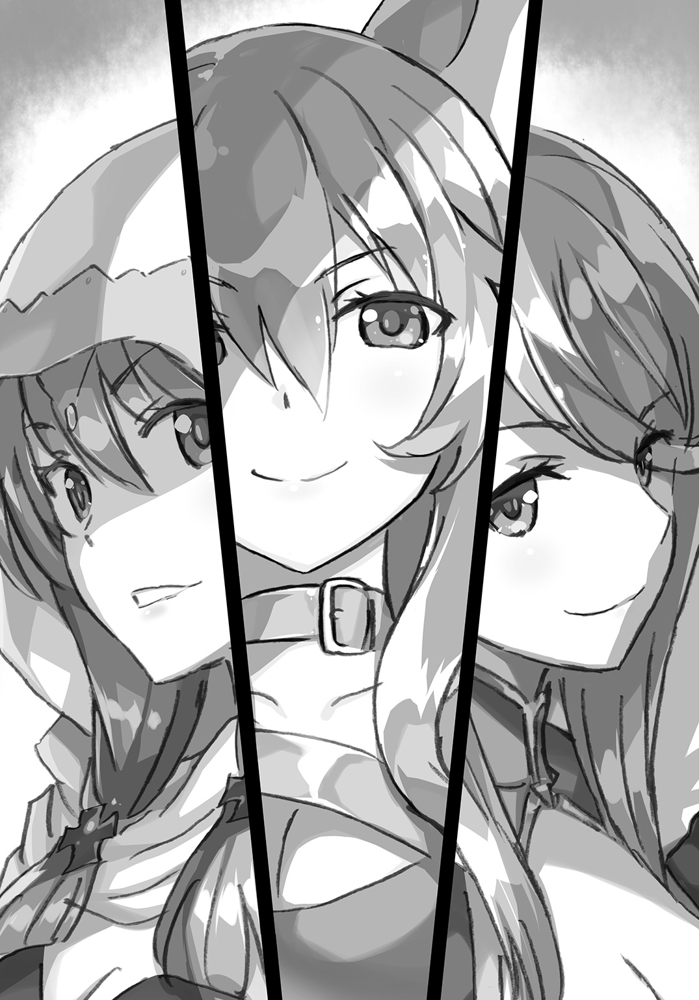
何人かの仙人がその場から飛び立っていってしまった。
『あらあら、初期衝動のせいか、早速応募者が現れたみたいですね』
「ちょっと、これ、シャレになってないわよ......」
楊戩が愕然としていた。
「あいつらはたしかにヤバい仙人だったわ。でも、今の禍々しさは前回、朝歌で見た時と格が違う。さらに数段階も上に進んでる......」
『どうやら崑崙の方は見抜いていらっしゃるようですね、姉さん』
『四人体制になった成果が出ているのね。四人による『三姉妹』は無敵よ』
『あっ、呂岳さんも聞こえていますか？』
胡喜媚が呂岳の名前を直接呼んだ。
「な、何よ......。交渉方法としてはあまりに無作法なんじゃない......？」
『同盟、これまでありがとうございました。おかげで『新暦』のレコーディングも全力で取り組めました。ですが、噂によると、金鰲は崑崙に敗れたらしいですね？』
呂岳は思わず歯ぎしりした。
もう知られているのか。
やはり、ただのロックバンドではない。
『私たちの存在が黙認される可能性ももはやないでしょうし、申し訳ないですが、同盟も破棄させてください。それに、私たちによってすべてが一つになるんですから同盟も敵対もありませんよね』
顔は見えないが、呂岳は自分が見つめられていると強く感じた。
「ずいぶんと勝手な物言いね。前は下手に出ていたくせに」
ギターの王貴人が前に出てきて、
『ロックの前では対等じゃーん！』
と叫んだ。
ライブ会場がざわついていた。
しゃべらないはずの王貴人がかわいい声で発言したからだ。
『もう音楽だけで勝負するから、無口キャラって設定もいらないよー！』
『あまりにもよいアルバムができてしまったもので。このようなキャラ作りも正直不要になりました。顔を隠しているこの布ももういりませんね』
おもむろに胡喜媚が顔にかかっている布をはぎろとろうとす――
――不通っ。
楊戩は自分からモニターのほうに近寄って、映像停止のボタンを押した。
「メドゥーサの故事を知らなくても、えげつない術をかけられるのはわかりきってるわ。誰が見てたまるもんですか......。おおかた、目に宝貝でも入れてるんでしょ。どうせ、これでファンも作ったのよ！」
奇しくも、過去に呂岳が警戒した理由とまったく同じだった。
「いや、あいつの場合、顔になんらかのコンプレックスがあるからだけかもしれないけどね。ヴォーカルよりかわいいとアイドル的な売り方になりかねないからだとか」
呂岳が妙な補足を入れた。呂岳自身も、胡喜媚をフォローしてるみたいな調子になってしまって、あれ、おかしいぞと内心言ってから思った。
「あいつらの商業戦略なんてどうでもいいけどさ、四人目がいるって言ってたのが気になるわ。あのクラスの仙人がさらにいるだなんてぞっとしない話よ」
「金鰲でも簡単な名簿はもらったはずだけど、妲己や胡喜媚に匹敵する仙人はとくにいなかったような......」
呂岳には心当たりがない。強い仙人がいるなら、西岐の人間の相手ぐらい、そいつらにやらせていそうなものだ。
気色の悪い沈黙がその場を包む。
あの場にいた竜吉公主を除く堂上元老二人と太乙真人以外の十二使である十一人、十人の天君、合計二十三人の仙人が事実上、妲己たち三人に全滅したのだ。
楊戩も青い顔になる。崑崙と西岐が争っている間に取り返しのつかないことになっていた。
「あれだけの仙人がすべて妲己のもとに走ったら、完全に無視できかねない第三勢力よ......。というか、崑崙の幹部だけなら半数以上、あっちにいっちゃったわけで......」
「そうだな......すぐに攻めてはこなさそうだけど、対策は必須だろうな......」
崑崙崩壊の危機を乗り越えたつもりだったが、全然そんなことはなかったようだ。
ごほごほと聞仲が重い咳をした。聞仲にとっても、この映像は悪夢だったらしい。体にも障る。
「すみません、楊戩さん、嫌な予感がするので、先ほどのスーパコンピュータで確率予想をしてもらえませんか？」
「別にいいけど、いくらなんでも殷が滅ばない確率が飛躍的に上がるだなんて変化はないと思うわよ」
「いえ、先ほどは『殷と西岐が争いを続けた場合』を計算しましたが、私が見たいのは『殷と西岐が争いを止めた場合』なんです。それこそがこれから私たちがやろうとしていることですから」
楊戩も言われてみればそうだなと思ったのか、こくんとうなずいた。
「わかった。やってみる。入力内容ちょっといじるだけだから、すぐにできるわ」
部屋にあるコンピュータが計算を行う。
とんでもない結果が出力された。
殷と西岐が争いを止めた場合、
ＤＵＭ（妲己・ユニヴァース・ミュージック）が成立する............九十八回
西岐が国内を統一し、国号を周とする......二回
「何よ、これ！ わけわかんないものが生まれることになってる！」
楊戩が悲鳴を上げた。
「ＤＵＭってダムって発音するのか。そのまま、ディ・ユー・エムなのか。ＤＵＭが成立したあとの歴史はどうなるんだろうな」
「そんなキモいこと調べたくもないわよ！」
その楊戩の後ろで聞仲がよろけて、呂岳に支えられていた。
「私の殷が......ＤＵＭ......でぃゆうえむ......」
「しっかりしなさい、聞仲！ まだ決まったわけじゃないわ！ 気を確かに持ちなさい！ 崑崙の誰か、点滴をするからベッド貸して！」
騒然とする部屋の中で、太公望は高校時代のテストのことを思い出していた。
歴史のテストだった。これぐらい楽勝だなと思いながらマークシートを塗りつぶしていた。終了の五分前に最終問題も解いた。その時に気づいたのだ。最後の問題は五十問目なのに、自分のチェック欄がシートの五十一番のところを塗りつぶしていることに。
三問目の回答を四問目のところに記入していた。それから先、すべての問題の解答欄がずれていた。パニックになって強引に消しゴムで解答欄を消そうとした。圧力が強すぎて、紙が破れた。パニックは加速した。
あの時にとてもよく似ている。
世界が滅亡する時もおおかたこんな感じじゃないのか。助かったと思っていたら、実は重大な間違いがあって、世界はそのまま滅んでしまうんじゃないのか。
「みんな、落ち着いて！ 落ち着いて、落ち着い――痛っ！」
元始天尊は焦ってボールから落下した。
誰一人予想していなかった事態になったために、とりまとめる者もいない。太公望も観察することしかできない。
――と、その時、外部からの通信を受信したらしく、再びモニターが明るくなった。
西岐の将軍である黄飛虎がそこに映っている。
太公望が吒を援軍に送った時に、映像を流す宝貝を置いてきたのだ。人間は宝貝を起動はできないが、事前に起動しっぱなしにしておけば問題ない。誰かが一定時間前に立っていると、自動的に映像を送信してくれる宝貝だ。
『ええと、ここに立ったらいいのかな......。太公望君、見えてるかな？ 救援依頼を出すよ。殷の勢力が急激に盛り返してね......こちらを応援してくれてた北伯侯の崇黒虎も殷側に寝返っちゃったぐらいなんだ......』
楊戩は呆然としていた。
「ここに来て崇黒虎が再度裏切るだなんてありえないはずだわ......。殷の世を終わりにしようってムードが徐々に高まって、殷は滅亡する。そうじゃなきゃ、おかしい......」
『それが紂王様が各地に現れて、そこで激励を繰り返してるんだよ。それで殷側にみんな戻っちゃってるんだ......』
「妲己が来てからは、紂王の指導力なんて低下の一途をたどってたはずよ。ピンチになってから本人が出向いたって、オセロがひっくり返るみたいにならないでしょ！」
『しかも信じられないことに、紂王様が小さな女の子になっててね』
一同が、何を言ってるかよくわからない、という顔になる。
女装でもしたのか？ しかし、オッサンが小さな女の子の格好をしたら気持ち悪いだけだろう。忠誠心なんて上がりようもない。
『いやあ、僕らのところにも現れたんで一目見たけど、あれはかわいかったな～。すっかり女の子になってるんだもん。記憶を引き継いでること以外、元の紂王様と何の共通点もないけどね』
「どうやら、女の子の紂王が本当に登場しているらしいわね......」
『朕の味方になるのじゃー！ って元気よく言われてね、僕もあやうく紂王様の陣営に走りそうになっちゃったよ～。あれは誰だって頭を撫でたくなると思うよ。だって姫昌様より紂王様のほうがかわいいからね～』
「こいつ、何言ってるのかしら......。キモっ......」
『とにかく、西岐がピンチなんだよ。紂王様は今までのオッサンじゃない。かわいいんだ。ブラホックはずしの技術を持ったままの、幼女なんだ。僕もホックをはずされたよ』
「その情報、今年最もどうでもよかった話の一位にランクインしたわ」
『みんな、小さな女の子に弓を引けなくなってる。それと、バンドの新メンバーなんだとか言ってたっけ。妲己たちがやってるバンドの』
それだ。
四人になったとさっきＭＣで言っていたが、その四人目が紂王なのだ。
「妲己のやつ、紂王を徹底的に抱きこみやがったのね......。バンドの問題を殷という国家の問題にすり替えるだなんて、やっぱり頭が回るわ......」
紂王がバンドに迎えられたのは単純に妲己がバンドの向上のためにとった手なのだが、外野から見ると、策略の一環に見えた。
『各地で妲己たちの音楽を聴く人間が増えてるみたいでね、朝歌で行われるフェスという祭りに向けて民族大移動がはじまってる。祖先の祭祀もそっちのけみたいで、このままじゃ一族が絶えると嘆いている老人も多いみたいさ。まあ、そんな老人層までがはしゃいで朝歌を目指してたりするんだけどね』
「やられたな......」
太公望はその場で、がくりと膝をつく。力が抜けてしまった。
とんでもない策を見せつけられたせいだ。
「何が軍師だ。向こうは軍とか戦争とかすら超越してきやがった......」
太公望は心の底から反省した。自分はずっと西岐と殷、崑崙と金鰲による戦闘にしか頭を置いてなかった。まあ、軍師なんだから当然と言えば当然なのだが、敵はひとまわりもふたまわりもスケールが上だった。
音楽で、民を一つにして、戦争そのものを根絶する。
しかも、民が制度や慣習を無視したくなるほどのイベントを提供する。
ちょっと戦争が長引いたぐらいでは文化までは変わりはしない。せいぜい人間が多少入れ替わる程度だ。だが、妲己たちは文化すら別物にしようとしている。根底から世界が違うものになっていく。
華麗な侵略行為だ。従来の野良仙人の枠なんて軽々と突破してきやがった。
「何を考えてるかわからない奴だと思ってたけど、俺が小さすぎて見えてなかっただけだったんだ......。燕雀安んぞ鴻鵠の志を知らんや......」
楊戩が太公望の肩に手を置いた。
「気持ちはわかるけど、あなたまで妲己を褒めるとみんな不安になっちゃうわ」
「寝返ったりなんてしないから安心しろ。敵は敵だ。ただ、戦略のスケールのデカさに感心してるだけだ。俺なんてまだまだだ......」
「あなただって、立派にやってきたわよ。誇っていいわ。少なくとも私は褒めてあげる」
「......ありがと」
やさしさにすがっている場合ではないかもしれないが、すがらないと何もはじめられそうにない。
『西岐の軍からも脱走して殷に行く兵が増えてる。このままだと西岐が滅ぶよ......。僕も軍隊の指揮は自信があるんだけど、こういうのは初めてでよくわからないんだ......。何か得体の知れない者と戦っている気分でね......』
だんだんとモニターの黄飛虎もおどおどとしだした。これまで黄飛虎が見せたことのないような弱々しい表情だった。
『うぅ......助けてよ......僕の力がまったく通用しないよう......どうしようもないよう......。敵が歌を歌いながら「三姉妹」と書いた、黄色や赤の布を振りまわして攻めてきたりして......気味が悪いよう......』
きっとバンドロゴの入ったタオルを振っているのだ。ロックの文化を知らない黄飛虎にはショッキングな出来事だった。微妙に三国志で有名な黄巾の乱っぽい。
「歴史が不確かなものになりすぎてるなあ」
元始天尊がモニターを見上げながら言った。
「この報告のとおり、紂王が女の子になってるとしたら、妲己たちが勝手に規定路線の歴史をいじりまくってることになるよ。そのいじり方が激しすぎて、西岐が順調に統一を進める流れもなくなっちゃってるんだ」
「師匠、これ、妲己を至急、どうにかしないと収拾がつきませんね......。殷と西岐の争いとは違う軸が作られてます......」
「だねえ......。これは金鰲の力も借りつつ、妲己を討たないと――」
「急がないと借りる相手も残らなくなるよ」
そこにふらりとやってきたのは、クジャク姿の孔宣に乗った太上老君だった。
「とちゃとちゃの到着ー！」
乗騎の孔宣があほそうなことを言った。太上老君は優雅に孔宣から降りた。
「た、太上老君様......」
聞仲は思わず、膝をその場でついた。呂岳も一礼した。金鰲の仙人からしても太上老君は別格の存在らしい。趙公明だけ「この人、誰ですの？」と何もわかっていなかった。
「李誕、お前からこんなところに来るなんて珍しいな」
「やっと、ボクが働かないといけない事態になったなと思って。労働って大変だね」
「これは夢だな。お前が働くことなど天地がひっくり返ってもない」
「天地がひっくり返るような事態なんだよ。切羽詰まってると言えば詰まってるかな」
太上老君はそう言いながら、孔宣に寄りかかる。焦っているようには、とうてい見えないが。
孔宣が人間に姿を変える。「ああ、孔宣様より美少女の太上老君様のにおいがよくかげるー！」と変態的なことを言っていた。孔宣の見た目も青緑の髪の美少女なので、ヴィジュアル的に汚くはないのが救いか。
「攻撃を受けてるんだよねー。ひとまず、撃退したから過去形が正しいけど」
「げきげきの攻撃ー！」
乗騎含めて緊迫感のかけらもない。ある意味、太上老君はお似合いの乗騎を手に入れたのかもしれない。
「攻撃ってお前が誰に攻撃されるんだよ。どうせ返り討ちにして終わりだろ」
太上老君にケンカを売った孔宣なんて、元は金鰲の幹部でありながら乗騎という役目に甘んじている。本人はけっこう楽しそうなので、ウィン・ウィンの関係のようだが。
「ボクそのものじゃないよー。封神界だよー」
............。
........................。
あまりにも想像を絶する発言だったので、全員が黙りこんでしまった。
「......まず、封神界がどこにあるか知らないんだけどさ」
「教えない」
「みつみつの秘密ー！」
仙人と乗騎まとめて一発ずつ殴りたい。
「まっ、ちょっと気づかれづらい時空の海のどこかに置いてるだけだよ。案内が必要な時は案内する。問題は攻撃されてるってことでしょ。悪い仙人たちの魂魄があふれ出すと大変だよねー。何かに使うのかな？ それとも仙人界の大混乱を狙ってるのかな？」
「誰だよ、そんな危ういことしてるの......。妲己か？ 妲己たちがやってるのか？」
太上老君と孔宣が同時に首を横に振った。やっぱり殴りたい。容姿だけならアイドルユニットみたいな二人組だがそれでも殴りたい。かわいさ余って憎さ百倍というやつだ。
「妲己たちがそんなことやるわけないじゃん。妲己は音楽のことしか興味ないよ。悪い仙人の魂魄なんて何に使うの？」
「言われてみればそうだな......。じゃあ、誰なんだ......？ ミニクイズはいらないから早く教えてくれ」
「てん」
タメもなく太上老君は軽く答えたのだが、軽すぎて何のことかわからなかった。点？ 10？ 動物の貂？ ほかの仙人たちもおおかた理解がおよんでいないらしい。
元始天尊だけが青ざめた顔をしていた。
「ちょっと、師匠、何なんですか......？ 聞きたくないけど、聞かないままってわけにもいかないから教えてください！」
「ええとね......聞仲ちゃん、閉じこめてる金鰲の元幹部の動向をチェックしてくれるかな......？」
「あ、はい！ わかりました！」
通信用宝貝で聞仲は部下に連絡を入れる。
「はい、そうです。結界です。............え？」
元始天尊の顔色が伝染したように、聞仲の顔までが青くなった。
「通天教主様が行方不明になってるってどういうことですか!?」
金鰲のほうでも非常事態が起きていた。
「たしかに雲霄さん・瓊霄さん・碧霄さんの三人で作った九曲黄河陣に封印していたはずですよ!? 陣が破れて全員が出てくるならまだしも、一人だけ脱出するだなんて......」
「これでわかったかな」
太上老君だけがのほほんとしていた。
それとは対照的に元始天尊は沈んだ表情をして、言った。
「どうやら『天』――通天教主は、封印されたふりをしていたらしいね。それで、裏でこそこそ暗躍してたんだ。封神界を狙ったのは、先輩の言った案のどちらかだと思う。たんに宇宙を混乱させるぐらいのつもりならいいんだけど、新しい宇宙の創造に強い魂魄が必要だからとかって理由だと恐ろしいよね......」
「師匠、新しい宇宙ってどういうことですか......？」
「先輩や通天教主のクラスにまでなると、宇宙そのものを創造することだってできるんだ。でも、宇宙の隣にまた宇宙を作るってわけにはいかない。なにより無から作るのは大変だもん。だから、今ある宇宙をつぶしてリサイクルするのかな」
引きこもるのをやめてから突拍子もない話はたくさん聞いてきたが、今回のはとくに強烈だった。
「楊戩、お前、言ってたよな。仙人の上に仙人を超える存在がいるんじゃないかって。だいたい、合ってたみたいだぞ」
「そうね......。当たってもあまりうれしくはないんだけど」
楊戩もどうにか苦笑いを浮かべる。気味の悪いことは笑い飛ばすしかない。
「天が仙人の上に立ってるかどうかは知らないけどね。確実なのは、金鰲の主宰者だった通天教主が『天』を出自に持つ仙人だってことだけだよ。妲己が出てくるタイミングを使って、二つの仙人界の共倒れを狙ったんじゃない？ 状況証拠からすると、そうとしか考えられない」
「つまり、妲己以外にも別の敵がいるってことか」
妲己と通天教主に直接のつながりがないとしたら、そういうことになる。
今度は太上老君と孔宣が同時にうなずいた。
「それって、私たちがクーデターを起こすことを最初から通天教主様は知っていて、閉じこめられたふりをした――ということですね？」
聞仲も話しながら、自分で状況の整理を試みているようだった。
「その可能性が高いだろうな。下手をすると、最初から君がクーデターを起こすように仕組んですらいたのかもしれない」
太公望はじっと黙りこんで、敵の思惑を捉えようとする。
冷静に考えれば、そうおかしなことじゃない。いつの時代だって、本当の黒幕というのは表には見えないように画策しているものなのだ。でなければ、黒幕にならない。
黒幕と言えば聞こえはいいが、つまりは火事場泥棒だ。仙人界があわてふためいているうちに、漁夫の利を得ようとしているってわけだ。
気に入らない。そのやり口が気に入らない。
働いてないふりをして、悪事をこそこそ企むだなんて引きこもりが最も憎むべき存在だ。そういう奴がいるから、引きこもりが必要以上に恐ろしいものであるかのように思われてしまうのだ。大半の引きこもりは本当にこもっているだけで無害だというのに。
「李誕、妲己はこの敵のことは知ってるのか？」
「よくわかんない。音楽以外には何の興味も持ってないかもね。こんなこと知ってる仙人はほぼいないから。ボクも封神界が狙われるまでは話すつもりもなかったし」
「っていうか、お前、封神界を作った目的自体が通天教主みたいな奴を誘き出すためにあるんじゃないだろうな？」
そんなものを利用しようとする奴は大規模な破壊計画を考えている奴だけだ。それがふらふらやってくれば、宇宙の敵の正体がわかる。
「解釈はお任せするよ」
この言い方だと当たらずとも遠からずってところだろう。
どのみち、戦わねばならないようだ。
もし仙人界が滅んでしまったら、引きこもることもできない。
仙人界が金鰲や妲己のものになるかとかいった次元の話じゃない。
「概要はつかめた。どうにかする」
ぱんぱんと、両手をすり合わせるように二回鳴らした。
「仙人界保存プロジェクト――即席なんで名前は適当なんですけど......やりましょうか。問題ないなら俺に軍師役をやらせてください」
「君、やけにやる気だけど、洗脳でもされたの？」
師匠にしてはあんまりな言葉だな。
「太公望はやる時はやるのよ。私が保証するわ」
「どうして、楊戩ちゃんが保証できるのさ」
太上老君はほっぺたをふくらませていた。
「俺は人の手で引きこもりになりたくないんですよ。自分の手で勝ち取った有休でなければ、堂々とぐうたらできない。あと、こもるのと消されるのは違います」
「ぐうたらはしないでほしいけどね」
「こんな大仕事、片付けたら、一千年は休んでも許されると思いますよ」
さて、早速、関係各所に連絡しなければ。
あらゆる仙人を動員して、立ち向かってやる。
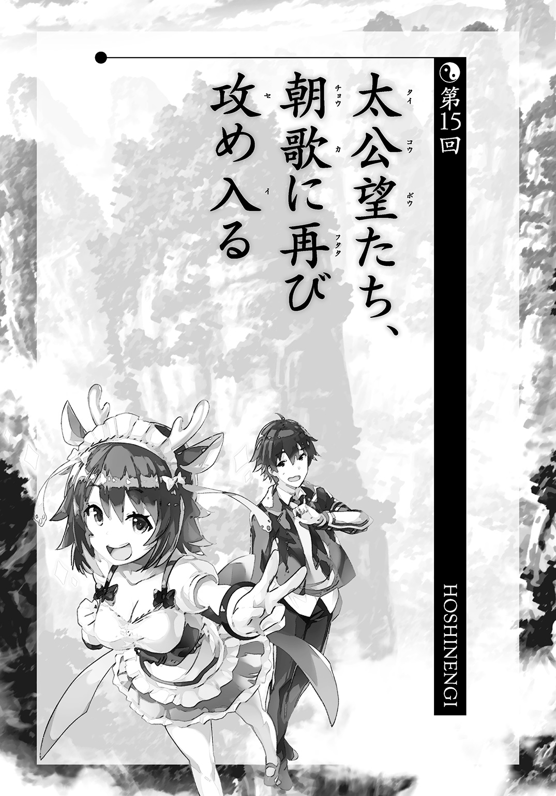
黄飛虎が将軍をつとめる西岐の遠征軍はすっかり足止めを喰らっていた。
敵に攻められて壊滅したわけではない。
むしろ、自滅だ。
毎日のように妲己の開催するフェスに行こうと軍隊を抜け出す者が相次いでいるのだ。夜中にそうっと、妲己のアルバムの曲を歌う者すらいた。
そんな有様なので軍紀がゆるみまくっており、殷の武将とぶつかることができず、争いを避けていた。向こうも一気に襲いかかる構えはないので戦線は停滞しているが、ぶっちゃけ妲己にしてみると、無事にフェスが開催できるまで足止めできればそれでいいのだろう。
幔幕の中で黄飛虎は姫昌と相談をしていた。
「困ったことになりましたね。考えてもみなかったことです」
姫昌は落ち着いてはいるが、落ち着いているだけで、打開策が出せるわけではない。
人智などとっくに超えた戦いなので、諸侯一人でどうこうできないのだ。
「はい、いまだに我が軍は浮き足だっていて、はっきり言って衝突は避けたほうがいいかと思います。兵士にやる気がないというか、戦争などどうでもよくなっているというか......」
これまで兵士は殷を倒すぞという強い意志を持って行軍していた。殷の悪政により、多くの民は「世直し」を求めていたのだ。
しかし、じわじわと妲己のバンドの曲が広まりはじめ、戦争自体に興味を失いだしているのだ。空気は戦時下とは違うものになっている。
それだけならまだいいが、「戦争自体をやめよう！ そんなことより歌おう！」などと言って、デモじみたことをする者まで出る始末だ。兵士の中に戦争をボイコットする者が増えたら、軍隊など成り立つわけがない。
「ここは仙人の方たちの応援を待つよりほかないかもしれませぬな。やはり妲己は恐ろしい。仙人の方抜きでは、これが限界ですな」
「将軍として面目ないです......。僕も陣にかわいい女の子がいなくて、少しずつつらくなってきました......」
無骨な男ばかりの軍団の中で、黄飛虎もだんだん嫌気が差していた。太公望にかわいい女の子を送ってもらうよう、連絡するか割とマジで検討していた。
そんな西岐の最高意思決定機関とでもいうところに入ってくる者があった。
勿論、許可など得てはいない。
「ほう、なかなか困っておるようじゃの」
子供っぽい声に振り向くと、紂王が飴を舐めて立っていた。
「紂王陛下、どうやってここに!?」
黄飛虎も元主君の登場に驚いていた。一方で、姫昌は礼儀を重んじる性格だけあって、その場に平伏していた。
「ふふん。仙人となってしまえば、この程度のことなど造作もないのじゃ。黄飛虎よ、お前の前には一度顔を出したであろう」
たしかに黄飛虎は紂王が子供になった姿を目撃している。あの時も今回と同じように、突如戦場に出現したのだ。
「さあ、朕を滅ぼす方法は見つかったかのう？」
紂王はにやにやしながら飴をぺろぺろしていた。おおかた、ひやかしに来たのだろう。仙人になって間もないので、その力を見せびらかしたい面もあるのかもしれない。
「ふふん。王の座もこの自由自在の身にはかなわぬな。せいぜい、朕の国を攻めるがよいぞ。負けたら朕も参ったーと言ってやろう」
その様子を見つめていた黄飛虎は思った。
なんだ、このかわいい生き物は。お持ち帰りしたい。
いつも黄飛虎が追いかけている女子とは違ったタイプのかわいさ、いわば犬や猫のようなかわいさなのだが、それにしてもかわいいことには違いがない。
「紂王様、実は西岐で作られた面白いお菓子があるんですが、おためしになりますか？」
「ほう。ならば、持ってくるがよい」
黄飛虎が用意させたのは袋に何種類かの粉が入ったものだった。
「なんだこれは。変な色の粉と二箇所へこんだところのあるケースしか入っておらんではないか。あまりおいしそうではないぞ」
「見ていてください。まず、この白い粉をケースの左のくぼみに入れます。そこに水をちょっと入れて箸でくるくるまわします」
完成前から紂王が手でとって舐めた。
「ぴりぴりして変わった味じゃが、とくにおいしいというわけでもないな。妲己たちはもっとおいしいお菓子をたくさん持っておるぞ」
「肝心なのはここからです。ここに別の粉を入れます。はい、箸でぐるぐる練ってください」
「どうして朕がこんな面倒なことをせんといかんのじゃ」
と言いつつも、紂王は律儀にぐるぐる二つを混ぜた。
すると、白い粉だったものがどんどんねばねばした黄色のものになっていく。
「なんじゃ、これは！ 面白いぞ！」
「それを舐めてみてください」
紂王が箸を持ち上げる。水飴みたいにねばねばがくっついてきた。
ぱくっと口に入れる。
「味も変わっておる！ バナナっぽい味じゃ！」
「次に、ケースの右側のくぼみにチョコパウダーを入れて、つけて食べてみてください」
「うまい！」
逞烈逞烈！
そんな効果音が紂王の脳内に流れた。
「また違う味じゃ！ すごい！ 褒めてつかわすぞ！」
これは西岐で知育目的で作られたお菓子、練練練練だった。西岐では才能のある人材を広く募ったために、こういう商品も生まれたのだ。
子供は食べ物にこういうちょっとした遊びのような別要素が入ると、すごく面白がるのである。
結局、紂王はそのお菓子にご満悦で、たんなる客人のようにもてなされていた。黄飛虎のほうも「小動物」と遊べて満足していた。その間、姫昌はずっと平伏していた。ここまで来ると礼儀正しいのではなく、融通が利かない人である。
「ところで、これ、罠でもなんでもなかったのじゃな。毒でも盛ろうと思わんかったのか？」
「かわいい女の子を害するようなことはできません。それでは人の上に立つ将軍として示しがつきませんから。僕は正義のために戦っていますが、かわいいことは正義なのです」
言葉にすると、いいことを言っているように聞こえたが、ようは紂王がかわいかったから、子供が喜びそうなお菓子をあげただけである。
「ふふふ、なかなか楽しんでしまったのじゃ。よしよし、今、殷に戻ってきたならおぬしの罪も許してやるぞ。おぬしはお菓子大臣に任命する」
悩んでいる様子こそ見せなかったものの、黄飛虎は真剣に迷った。
オッサンというよりは老人に近い姫昌に仕えるのと、ロリな紂王に仕えるのでは後者のほうが素晴らしいからである。これには君主の人徳とかそういうのは関係ない。
しかし、どうにか我慢した。
一番の理由はそばに姫昌がいたことだ。本人がいる前では裏切りづらい。そうじゃなかったら、紂王のもとに走っていたかもしれない。
「紂王様はどうしてここにいらしたのですか？ たんなる暇つぶしですか？」
「おそらく、太公望とかいう仙人たちが朕のバンドを止めに来るであろう。そのことは知っておる。万に一つぐらいは、朕たちがやられることもあるかもしれぬからのう。それまでにあいさつをしておこうと思ったのじゃ」
予想以上にかっこいい理由だったので、黄飛虎の紂王への好感度がさらに上がった。
「姫昌もずっと頭を下げておらんでよいのじゃぞ。そもそも敵同士ではないか」
「いえ、あくまでも私の目的は君側の奸を除くことにあり......」
「あほか。妲己はそういうつまらん小悪党などではない。金や権勢に目がくらんでおった費仲や尤渾のようなザコとは違うのじゃ。そんなことぐらいお前も諸侯をやっておればわかるじゃろうが！ 朕は体は子供でも頭脳は大人じゃぞ」
今更、ありきたりな常套句を言う姫昌に紂王は本気でイライラしていた。
イライラというか、プンプンだ。プンスカプンだ。
こういう堅苦しいだけのバカが多いから何事もつまらないのだ。伝統と儀礼を守ればそれですべてが正しいんだぐらいにしか考えてないバカ。しかもそういうのが表面上は賢いように見えるからタチが悪い。
他人のことなど何も考えないような身勝手な人間の方が、まだ救いようがあるかもしれない。
「姫昌よ、お前に天下をくれてやってもいいかと思わんでもなかったが、やっぱりダメじゃ。お前一人に任すには、お前はバカすぎる」
「陛下のおっしゃるとおり、私は愚かな年寄りでございます。西岐を統べることすら、その身に堪えないほどで――」
「だから、テンプレ的なことを言って、受け流すな！」
どうして、こんなことがわからないのか？
「何か言うことがあるなら、文句だろうと謝罪だろうと自分の言葉で言え！ 慣習という毛布にくるんだ言葉をやめよ！ 自分の頭で考えよ！」
紂王は自分と姫昌の会話がずっと平行線をたどっていることを感じた。
「この世界はもっともっと飛躍していかねばならんのじゃ。単純な道徳観だけで国が保てるのは平和な時だけじゃ」
姫昌は何かを言い返そうとしたが、彼の頭にある言葉は結局紂王が嫌がるような形式的なものでしかなかった。そんな言葉しか言えないということを彼も知っていたから、黙っていた。
「別に朕は妲己に騙されておるのではないぞ。朕は妲己が現れる前からこの国を変えていかねばならぬと考えておった。今は妲己のほうが、この国を面白くできると信じておるから、一緒にやっておるのじゃ。お前が目指す国家にはまともな未来があるのか？」
「私にも......それぐらいは......」
しぼり出すように姫昌は言った。
それから、姫昌はにらむように顔を紂王に向けた。
声がぼそぼそとしたものから、大きく太いものに変わる。
「まずは仙人様たちの力を借りなくてもよい国家が築けるように努力いたします！ 仙人様たちの存在に左右されるように生きるのをやめにしたいと思います！ 我々人間は人間としてよい世界を築きます！」
黄飛虎は呆然としつつ、その言葉と姫昌の様子を見つめていた。
姫昌にもこんな鬱屈した気持ちがあったのか。仙人にすべてを決められる生き方に空しさを感じていたのか。人間としての矜持を持っていたのか。
腕組みをして、うんうんと紂王は楽しそうにうなずいた。
「よし、言うべきことを言ったな。お前の言葉、悪くはない。そうでなければ、朕に刃向かう資格すらないところである」
「老臣にはもったいなきお言葉でございます」
「では、また会えたらどこかで会おうではないか。さらばじゃ！」
紂王は幔幕の外にたたたっと走って出ていった。
もう紂王の姿はどこにも見えなくなっていた。
そのあと、西岐に白鶴と聞仲の部下たちが派遣されてきた。白鶴は金鰲の仙人が多いので、ちょっとやりづらそうだった。
「悪いけど、こんなに必要ないかな。どうせ、決着は朝歌のほうでつくと思うから。ここでは戦いらしい戦いも多分起こらないだろうし」
黄飛虎はすべてを朝歌に攻め込む仙人たちに託すことにした。
ただし、仙人たちをべたべた触って、あとで彼女たちに訴えられることになる。とくに白鶴は激怒して、元始天尊に向けて詳細な被害報告書を作成した。それでは飽き足らず、通信宝貝で直訴した。
「何回、お尻を触られたことか！ 絶対に、絶対に許しませんからね！」
「ま、まあ......気持ちはわかるけど、大変な時期だから我慢して......」
「はぁ......やっぱり、私、事務職のほうが合っています......帰りたいです......」
「うん、もうすぐ太公望たちが出発するからね」
元始天尊はカレンダーのスケジュール表を確認した。
「どういう結果になったとしても、これですべてが終わるはずだよ」
◇ ◇ ◇
ロック・オブ・ユニヴァースは日程どおりに、開始予告より二曲分ぐらいの遅れで朝歌にて開幕した。
まず中央にあるメインステージに立ったのは、殷の官人たちで作ったバンド、『ＴＨＥ青銅器』だ。巨大な銅鑼を打ち鳴らしながらの轟音ロックで場を沸かせる。
続いて登場したオルタナティック・ポスト・ロックの『四聖』は仙人四人によるバンド。社会不安を歌ったような暗い歌詞が特徴で、ヴォーカルもだらだらと歌う。「君の言葉は素晴らしい♪ でも働いてないから誰も聞かない♪」という歌詞は切なくも残酷だ。
その間にも隣接するほかの会場で次々にあらゆる世界から、あらゆるジャンルのバンドが出演。場合によっては一切通じない言語で歌を歌う。
音楽による宇宙の統一を掲げる妲己たちにとってみれば、言語などどうでもいいのだ。音楽は膠のようなものなのだ。まったく違うものですらくっつけて、一つにしてしまうのだ。
また、併設されているフードコートでも宇宙各地から人気店が出店（人間はそんな移動はできないので営業はどこかの仙人だ）。牛タン串やホルモン焼きそばには長い列ができていた。
「フェスは順調ですね。少なくとも今のところは」
胡喜媚がベースの手入れをしながら言った。
楽屋にも様々な世界のバンドの音が聞こえてくる。
今この瞬間、ここが宇宙の中心なのだ。
「話によると、殷だけでなく、遠い異国からこの公演のためにやってきた旅人すらいるようですよ。宇宙各地からやってきた仙人は数知れず。私たちの認知度は確実に広がってますね。宇宙進出は成功です」
部屋の中では『三姉妹』の四人が四隅に陣取っていて、それぞれ調整に余念がない。
とくに紂王は緊張しているのが顔を見るとすぐにわかった。幼女はすぐに顔に出るのだ。
「紂王様は人の注目を浴びることに慣れているはずなのに、やけに固いですね」
「朕はツアーにほとんど参加できんかったからの......。こんな、とびきりデカい会場は初体験じゃ......それに王として人前に立つのとプレイヤーとして立つのとでは意味が違う。王は王であること自体に価値があるが、今の朕はよい演奏ができなければ何の価値もないのじゃ」
「紂王様のおっしゃるとおりです。すべてはいかによいプレイがここでできるかにかかっています」
妲己は瞑目していた。イメトレでもしているのだろう。
「今日、『三姉妹』が伝説になるか、それとも時代の波に乗ってちょっと売れただけのバンドで終わるか、それがはっきりします」
「けど、その前に何か来るんじゃないの？ 面倒な奴らがー」
王貴人がダルそうに言った。
キャラ作りはもうやめたので、ごく普通にしゃべりまくる。
「ったく、こちとら音楽に専念してるのに政治を持ちこまないでほしいよねー。政治なんかで世界が良くなったことなんてないじゃん。ろくに未来もない頭のハゲ上がったオッサンたちがああだこうだ言って、世界がよくなるわけないじゃん。人間は自分が死んだあとの時代までよくしようなんて思えない利己的な生き物なんだから。そんなん子供でもわかることでしょ？ 自分の欲望のために動くに決まってる。それで、老い先短い人間にとって充たせる欲望ってたかが知れてるわけよ。そしたら社会的に偉くなりたいって欲求くらいしか残されてないでしょ。じゃあ、権力握ろうとするに決まってるわけで、やっぱし年のいった奴に政治を任すのって最悪なわけよ」
「王貴人、よくしゃべるわね......」
「いやあ、キャラを破るとすっきりするよね。無口設定のバンドメンバーがしゃべりだしたなんて、過去にいくつも実例があるけど、実際やってみるとすごく爽快！」
「そうじゃな、朕もロックバンドをやることで、新しい自分を見つけられた気がするのじゃ。すごく若返った気がする」
紂王の場合、比喩でも何でもなくただの事実だった。
ちなみに、ロリキャラになった紂王を相手にしなかった王宮の臣下たちも、自分の知っている紂王が出てこないので信じざるをえなくなっている。戦時中に王が行方不明というのは困る。まだ幼女でもいたほうがいい。
「さあ、お姉ちゃん、仙人たちが来るのはいつ？ ロックの敵は何者だろうとぶちのめしてやるんだから！」
妲己は目を開け、頼もしそうにほかのメンバーを見やった。
「ったく、音楽バカね。ロックバンドって職業がなかったら、あんたたち、どうなってたのかしら」
「私は放火魔になっていたかもしれませんね。火をつけて燃やすのが昔から好きでしたから」
「わたしも人、殺しちゃってるかもねー。刺したりとか」
「処刑の命令なら、王じゃからいくらでもやっておったが」
「なかなか怖い連中ね。だけど、悪いことのひとつもしたことないバンドが破滅や絶望を歌うのよりは説得力あるかも」
世の中には破滅や絶望を延々と歌詞にするようなバンドもいるのだ。歌手がどいつもこいつも恋人のことや親に感謝することばかり歌っているわけではないのである。一曲ごとに世界が滅んでいるようなバンドすらある。
「敵は私たちの出番の前に来るとは思うけど、一つだけ覚えておいてほしいことがあるの」
いつになく真剣な顔で妲己はメンバーたちの真ん中に立った。
「私たちの目的は音楽で宇宙を一つにすることであって、仙人界を滅ぼすことではないわ」
仙人界が一丸となって来ることはすでに妲己たちにも知れている。
「わかっています。音楽は本来楽しいものですからね」
「ＯＫ、ＯＫ。敵すら聞き惚れちゃうギターテクニックをお見せするわ」
「朕は初心を忘れるほど愚か者ではないぞ」
ぽんぽんぽん。
妲己はメンバーの肩を叩いてまわった。
「やっぱり、私たちは無敵ね！ あらゆる災厄、恐るるに足らず！」
「ちなみにですが、宇宙征服を目論む者がほかにも出てきた場合はいかがされます？」
胡喜媚の言葉に妲己の目の色が変わった。
「音楽以外の宇宙征服は認めないわ。絶対に」
◇ ◇ ◇
太公望たち一行は大型の船に乗りこんで殷の首都、朝歌――正確にはいくつものライブができるようなその郊外だが――を目指していた。
「これで、李誕が来てくれたらよかったんだけどな」
太上老君にももちろん参戦要請を行った。仲間はずれはよくないとかではなく、純粋に戦力としてこれ以上期待できる存在はいなかったからだ。
ちなみに要請の結果は――
「ボクは封神界を守るっていう大事な仕事があるから」
そう言われて、にべもなく断られた。それが大事なのはわかるが、少しぐらい協力してくれてもいいんじゃないかとも思う。
「封神界を襲った奴がわかってるなら、戦ってくれよ」
「ボクの役目は封神界の警備だけだからダメ。敵が逃げたら、その時はその時。ボクに警察権はないしね」
どこまでも働かないつもりか。ここまで筋金入りだと動かすこともできない。
「そしたら、乗騎の孔宣でいいから貸してくれ」
「太公望、けっこうセコいね」
「セコいんじゃない。金鰲の元幹部が一人増えるかどうかって戦力として大きな差だろ」
「孔宣様は孔宣様より強い人にしか従わないよ」
こちらも拒否された。太公望が楊戩のような性格ならお前より強いことを示してみようなどと言ったかもしれないが、大一番の前に金鰲の元幹部と戦うのなんて選択肢として最低に近い。そこで仲間に負傷者が出たら何にもならない。素直に諦めた。
結果、船に乗っているのは太公望、楊戩、吒、聞仲、呂岳、趙公明の六人だ。
もう一つ、主に趙公明の仲間たちが別の船ですぐ後ろを追っている。
元始天尊は【盤古旛】がまだ使い物にならないのに加え、さすがに崑崙を空っぽにするのは怖いので、留守居役だ。竜吉公主は三十秒でも戦ってくれるとありがたかったが、殷までの長旅の間に力尽きる恐れが高いので諦めた。
実際のところ、強力な仙人が出払っているうちに敵に仙人界を攻撃されないとも限らないので、ちょうどよいと言えばよかった。
あと、白鶴や他の金鰲の仙人たちを西岐への加勢に送りこんでいる。
「万全の態勢と呼ぶにはクエスチョンマークが多いのが問題よね」
吒は聞仲戦で大きく損傷した。太乙真人が応急処置は行っているが。
聞仲も無理をしているので竜吉公主ほどではないが短時間しか戦えないだろう。
趙公明も楊戩の一撃を受けて、片腕が使えない状態だ。
お互いに戦っていたので、それなりに傷が残っているのだ。
こういうの、ゲームだったら仲間になった時点で魔法一つで全快できるのだが、そうはいかない。
「妲己にも戦いに行くって話は通してるからな。正々堂々と受けて立つだろ。みんな、持ち場はわかってるよな」
「わたくしはお姉様と同じところで戦いますわー」
早速、当初の作戦会議を無視してる奴がいるが、聞かなかったことにする。
「......みんな、やれることをやってくれ」
聴衆のど真ん中に下ろすわけにもいかないので、船はフェスの会場から少しだけ離れたところに置いた。
降り立つと、それだけでフェスの熱気が体にへばりついてくるようだ。あと、匂いまで独特のものがある。これは人いきれだろうか。
「この数の人間を病死させる作戦じゃなくてよかったわ」
呂岳がブラックジョークを飛ばした。ただし、顔は笑っていない。
「この気配......どうやら仙人も相当数、ライブに来てるわ。全員が敵になるとは思わないけど、引きつける側もなかなか骨が折れそうね」
「ご協力、心から感謝する。守るだけでいいからな」
「お姉様はわたくしが守りますわ！」
この場は呂岳と趙公明、それとその関係者の仙人たちで守ってもらう。
十二使とか大物クラスが一斉に来るのでなければ、十分に敵を撃退する力はある仙人たちだ。
一行が降り立つと、いくつかのバンドが演奏をぱたりとやめた。
そして、さも当然のように空を飛んで攻めこんでくる。妲己配下の仙人たちだろう。地上でも仙人たちが走ってやってくる。
「居残り組は上手くやってくれ！ 『三姉妹』攻略組はこのまま本丸まで一直線で行く！」
「私もやる気満々っス！」
太公望は四不像にまたがると、メインステージのほうに飛ぶ。場所は朝歌郊外の平原だから、土地は余っている。聴衆を巻きこまずに戦闘もできそうだ。
太公望とともに、哮天犬に乗った楊戩、吒、それと聞仲が出る。
「胡喜媚とはもう一回戦いたかったから、ちょうどよかったわ」
「お手やわらかに頼むぞ」
「お手やわらかにやったら勝てないでしょ。少しぐらいは暴れないとストレスがたまるわ」
楊戩は二の腕を出して力こぶを作るポーズをとった。今更、太公望も心配なんてしていない。あとはベストを尽くすだけだ。
「吒も最善を尽くして戦いたい」
「これも殷のためだと思ってやりますよ」
吒と聞仲も気合は充分なようだ。
みんな、今度こそ最終決戦だと感じているのかもしれない。
視界に敵の姿が見える。ご丁寧に、それぞれ、距離を置いて立っている。
「一対一で戦えますってことか」
三々五々、太公望たちは散っていく。
――楊戩は胡喜媚のところに。
「リベンジに来たわ。一勝一敗にさせてもらいにね」
「〇勝二敗になるかと思いますが。けど、こういうのは痛みを感じないとわからないものですからね」
宝貝【羽仙布】が胡喜媚の前に浮かび上がる。
――一方で吒は王貴人のところに。
「吒はお母さんに勝利を報告したい」
「ロボットだったらつぶしても罪悪感もないよねー」
ギターにしか見えない宝貝【天海琴】を掲げる。
吒もＹ字の槍、【火尖鎗】を構える。
「教えてあげるよ、ギターは剣よりも強いのよ。ああ、それは槍かー」
――聞仲は紂王と対峙する。
「姿は変わっても紂王様ですね。私にはわかります」
「まさかおぬしに武器を向けられるとはな。いやあ、人生長く生きておると、いろいろとあるわい。たいていの敵兵は矛を収める愛くるしい姿になったのにのう」
紂王は一見、武器などは持っていないのだが――
ぼこぼこと、地面から怪力乱神のように兵士が姿を見せる。しかも黄飛虎そっくりの姿だ。本物が混じっていても区別はつかないだろう。
「【酸切土梗】という宝貝じゃ。もともと妲己が試行錯誤を費仲にやらせておった。朕の力をもってすれば、こうやってその真髄を見せられるというものじゃ」
聞仲は静かに頭を下げた。頭からはまた白い湯気があがる。
呂岳にメンテナンスはしてもらっている。しばらくは戦えるはずだ。あとは、その「しばらく」の間にすべてが終わるように願うだけ。
「玉体を傷つけること、お許しください」
「傷つけるも何も朕は改造されて、今に至るのじゃぞ。今更、傷を恐れるわけがなかろうて」
――そして、太公望は妲己とまみえる。
「音楽による宇宙征服のための試練ってところかしら」
「俺みたいに音楽に興味のない奴もいるんだよ。止めてくれ」
「無理よ。早々にあなたたちを倒して、フェスに戻らないといけないんだから。本日をもって、新しい暦がはじまるの」
どうしてこの手の奴は変革をすぐによいことと考えるのだろう、そう太公望は思った。だらだらと変わらないことにも、というかだらだらすることにもそれはそれで価値があるのだ。
変化そのものにはプラスもマイナスもない。なのに、こいつらは変化をプラスだと勝手に決めつける。
しかし、今日が新しい一日になるというのは、あながち間違いでもないか。
「スープー、お前は一度離れてろ」
「わかったっス！ ご武運お祈りするっス！」
四不像は太公望が降りると、近くの岩陰に身を隠した。多少危うくはあるが、妲己のキャラからして四不像の方から攻撃するようなセコいことはしないだろう。
ぱたぱたと妲己は扇をあおいでいる。背後では、九本の尻尾がもぞもぞと蠢いている。
そういえば、この仙人はどういう攻撃を仕掛けてくるのだろうか？
「さて、あまり戦闘に力を使うのは嫌なんだけど」
前に一本の尻尾が出てくる。そこに手を突っこんで取り出したのはハンマーのような武器。
「玄翁って言ったかしら。石を砕いたりするのには便利なのよ」
太公望は新しい【打神鞭】――元始天尊に緊急で用意させた――を取り出す。
「この宝貝も、初代より高性能になってるんだぜ」
モードはひとまず「きる」に。こんなのであっさり倒せる気もしないが、剣術の覚えもない奴が剣を持っても使いこなせるとは思えない。こういうのは慣れたもので戦うしかない。
「逃げないと、八つ裂きになるぞ！」
【打神鞭】を全力で縦に振る。
――狩宇宇宇宇宇運！
空気を裂いて風が巻き起こる。
最初の一振りの感触でわかる。明らかにこれまでのものより勢いが強い。端的に言うと、最大風速になるまでの時間が格段に短い。このレベルの烈風を生み出すのに、以前は三倍は力を入れていた。
なら、単純計算でＭＡＸ三倍の威力は出せるか？ それは甘い算段だが、とにかく並みの仙人なら切り刻んで封神してしまえるだけのかまいたちが妲己目がけて容赦なく襲いかかる。
もっとも、相手が並みの仙人じゃないことは承知の上だ。
「嵐とは呼べないわね。せいぜい、強風」
尻尾が妲己の真ん前にやってきて、そのまま風を受けた。
わずかばかりの毛が散った以外はなんらダメージはない。
「私の尻尾はとても硬いの。もふもふできるようにやわらかい毛で覆っているけどね」
「ほんと、非常識のかたまりみたいな奴だな」
これは宝貝でもなんでもない。ただの肉体的能力で、宝貝の一撃を防いだ。野良仙人のまま、独学でとてつもない研鑽を積んだのだろう。野生の天才といったところか。
かといって、太公望にできるのは【打神鞭】での攻撃だけだ。
「頼むから、多少は効いてくれ！」
さっきよりは距離を詰めつつ、攻撃を繰り返す。
しかし、なにせ尻尾は九本もあるのだ。前後左右すべての方向に対応できる。
「ほんとに、俺は軍師だな。戦闘には向いてない......」
ほかの仙人と協力しながら戦うことはできるが、一人だけで敵仙人を簡単にやっつけるなんて芸当はできない。
妲己レベルの敵と戦って、正直勝てる気がしない。もっと不確定要素がいる。あと、体が怯えてしまっている。一撃でやられるかもしれないと逃げ腰になっている。
「どこから攻撃が来るかわからなくて、怖い？」
くすくすと妲己は妖艶に笑う。その表情で紂王をたぶらかしたのだろう。ただの音楽バカではなく、美貌も一流だ。アーティストは顔も大事だ。美しさに加えて力強さ。見る者を心から引きつけるだけのカリスマ性がある。
「さてと、弱い者いじめはよくないわよね。すぐに終わらせてあげるわ」
妲己が迫ってくる。少し距離をとろうとした。そこで気づいた。
「足が......！！！」
「先輩！ 石が迫ってるっス！」
四不像に言われて、視線を下げる。石が地面から這い上がって、足を覆いだしていた。
「お前にも石が迫ってるぞ......」
「......あーっ！ やばいっス！ 取りこまれてしまうっス！」
戦場から離れきっていないせいで、四不像は見事に巻き添えを食っていた。少し宙に浮いていたはずなのに、そんなこと関係なしに岩石に覆われつつある。
「そのうち体も石になっていくわ。石になったところを割ってあげるのがなかなか楽しいのよ」
ハンマーを持って、妲己が太公望のもとに近づいてくる。
「あっさり追い詰められすぎだろ......」
そういや、九尾の狐には那須の殺生石の伝説があった。鳥羽上皇をたぶらかしていた九尾の狐は正体を見破られ、現在の栃木県である那須で殺された。だが、この狐は今度は殺生石という毒ガスを出す石になって多くの者を苦しめた。それを割ったのが玄翁という僧侶である。ハンマーの一種を玄翁と言うのはここから来ている。
自分がやられる伝説のオマージュで、こちらを倒そうというのか。もう、腰のあたりまで石が這い上っていた。
「下半身ごと粉々になるかしら!?」
ホラー映画で敵が近寄ってくる時みたいな恐怖がある。しかし、怖がっている暇もない。
思いきって、【打神鞭】の風を足にぶつける。
足を覆っていた石が割れて、自由を取り戻した。すぐに体を翻して、距離を置く。
「体まではまだ石になってなかったな......。危ない橋だったけど、渡ってよかった」
あのまま怯えていたら、あっさり敗れていた。安心安全に勝てる道などどうせない。
「多少は知恵がまわるようね。次はどういう手を使おうかしら」
妲己はタチの悪い笑みを浮かべた。
「ロックバンドのヴォーカルは演技も得意みたいだな。正真正銘の悪役顔だぞ......」
「宇宙征服に正義も悪もないわ。創造神に正義も悪もないようにね」
ほかのところでも激戦が続いていた。
「発射！ 発射！ 発射！ 哮天犬、もっと速く動いて！」
楊戩は【火尖鎗】をコピーすると、それで【羽仙布】を片っ端から打ち落とした。哮天犬も息を切らせながら空を飛び回る。
至近距離で戦ってはいけない。その程度のことは前回の戦闘で学習した。
「なかなか、汎用性があるみたいじゃないですか」
「天才はね、同じ手を二度は食わないの」
胡喜媚も薄布を並べていく作戦が無意味と悟ったようだ。打ち落とされてしまうのであれば、それを直接楊戩にかけるしかない。【羽仙布】は触れたものに対しては強力だが、遠距離から破壊されれば、ただの幕でしかない。
「こんな覆いがあっては、上手く見えませんね」
胡喜媚は顔を隠している布きれをはぎとって、捨てた。
「さあ、視界も広がりましたし、全力でやりますよ。元々、ライブでははずすつもりだったんで、ちょうどよかったです」
「あ、あんた......やけに、かわいいのね......」
戦闘中とは思えないようなことを楊戩は言った。言わずにはいられないほどのクオリティだ。
「いえ、あなたもなかなかかと思いますが」
「ええ、褒められ慣れてるわ！」
楊戩は武器を【三尖刀】に替えて、突っこむ。胡喜媚のほうも、同時に向かってきた。
「さあ、全身包んでやりますよ！」
胡喜媚の加速のほうが速い！ 楊戩は先に仕掛けたはずなのに、出し抜かれる形になった。
やむなく、守勢に回る。
しかし、胡喜媚は【三尖刀】をかいくぐって、【羽仙布】を広げている。
「布に包まれて、きれいさっぱり消えてなくなりなさい！ これで終わりです！」
もうその薄絹に捕らえられるという瞬間――
薄絹に穴が空いて、槍が飛び出してきた。
「まさか！ 槍が届かないところから攻めたはず！」
そのうえ、楊戩のほうがいない。そこにあるのは【三尖刀】と、さっきまで楊戩が乗っていた哮天犬だけだ。
「どこに消えました......!?」
「消えてはいないわ。ずっとここにいるじゃない」
その槍が楊戩に姿を変える。
手にあるのは本物の三つ叉の槍――【三尖刀】だ。
「あっ......！」
胡喜媚のその顔には大きなミスをやらかしたと書いてある。
「そうよ。私自身が武器だけに変わることだってできるの！」
変化の能力で自身を【三尖刀】に変えた。
どんな危険な宝貝だろうと、布ならば、破いてしまうことができる。
「あなたの言うとおりになったみたいね。たしかにこれで終わりよ」
楊戩はほぼ間合いのないところから、【三尖刀】を突き入れる。
かわしようのないところからの一撃。
胡喜媚の鼻先で、その槍が止まる。
止まってしまったのではなく、止めてやったのだ。敵への情けとして。
もし、次があれば胡喜媚もこんなミスはしないだろう。しかし、一つでもミスをすれば、ミスをした側の責任だ。
「逆転できるっていうなら、試してもいいわよ」
「わ、私の............負けです」
「聞こえないわ。もっと大きな声で」
「ひどい性格ですね！ 私の負けですよ！」
胡喜媚は両手を挙げて、敗北を叫んだ。
「これで通算成績一勝一敗ね」
哮天犬が勝鬨をあげるように、「ワオーン！」と吠えた。
「哮天犬、勝利宣言はちょっとだけ早いわよ」
楊戩は霊獣の頭をやさしく撫でて言う。
「リーダーが勝たないと総合優勝にはならないからね。太公望のところに向かって！」
一方、吒と王貴人の対決は爆風が吹き荒れる展開になった。
吒が【火尖鎗】を撃ちまくるのに対して、王貴人のほうも【天海琴】をつまびく。
すると、至るところで爆発が起こり、砂塵が舞う。
――働吽！ 働吽！ 働吽！
虚空から、地面から、次々に破裂音が響く。
「さあ、ぶっとびなよ、宝貝人間！」
「攻撃パターンを解析。音の響くところではどこでも爆破が可能」
吒の言葉はいつものように落ち着いているが、動きはそうではない。王貴人はまったく気の抜けない相手だった。
「この宝貝はね、音の振動が届いたところを爆破できるの。つまり――」
王貴人が勝利を確信した笑みを浮かべる。
「あなたの体内で爆発を起こすことすら可能ってことよ！」
容赦なく、王貴人がパワーコードをかき鳴らす。
ギター初心者でも鳴らせるような音なのに、王貴人の音色は間違いなく個性的だ。その音に王貴人という人格が込められている。
地面から土煙が次々に湧き起こる。
それだけで飽き足らず火柱が立ち昇る。
ライブでのド派手な演出のように。
「いい？ ギターはバンドの花形よ。『三姉妹』の曲もお姉ちゃんたちが作っているものもあるけど、メインはこの私。この王貴人がジャンルを超えた、ただ、ただ、ひたすらかっこいいだけの曲を作ってるの！」
とどめとばかりに【天海琴】を弾く。
「吒だっけ？ あんたの心の中を破壊してやるわ！」
これで吒は粉砕されておしまいになるはずだった。最低でも機能停止は間違いないだろう。
しかし――
期待していた爆発音は起こらない。
吒はなんでもないふうに、攻撃の手を休めない。
「あれ......なんで、そんな......？」
「吒の内部は真空なので、音が響くこともない」
宝貝人間――その呼称が意味するところは文字通り、宝貝からできた人間、人格だ。
しかし、それは比喩的な表現に過ぎない。本当の人間とは吒はまったく機構が違う。吒が人間や仙人のように見えるのは、製作者の技術が図抜けているからでしかない。
だから、そんな吒を人間と誤認したことが敗因となってしまったとしたら――
その仙人は太乙真人に敗れたと言っても過言ではあるまい。
そして、王貴人は明らかな勇み足をしてしまっていた。
「【乾坤圏】両方発射」
吒が腕にはめていた金属の輪っか二つ。それが王貴人に狙いを定めて、飛ぶ。
「待って！ 待って！ 待――」
王貴人は回避もままならないところまで、吒に接近していたのだ。
見事な右ストレートと左ストレートが同時に彼女に入った。
――頭業怨！！！
ロケットが空に上がっていくのかと見間違うほどに、王貴人は高く、高く打ち上げられた。
長い滞空時間のすえに砂地に落下する。小さな砂埃が舞った。
王貴人は砂の上で大の字になっていた。
「やっぱ、バトルよりライブのほうがいいし......。平和なうえに文化的だし......」
吒は王貴人の様子を確認して、こうつぶやいた。
「吒、勝利を宣言する」
聞仲はほとんどその場を動かず、【金鞭】だけで紂王の出した砂と土の黄飛虎を破壊した。
「まさか、黄飛虎さんも私も陛下もそれぞれが違う道を志すとは思いませんでした」
「心配せずとも、それもやがてロックによって統合されるのじゃ！ 殷は妲己によって再生する！」
「残念ですが、それは殷とは呼べません！ 少なくとも、これまでの殷とは似ても似つかない！ 納得のいかない民が反乱を続けるでしょう！」
「おぬしはそれでも殷が残るならよいと思っていたのではなかったのか？」
「......殷の精神が残らぬのならば、無意味だと悟りました。私たちに必要なのは名を残すことではなく、心を残すことです」
紂王も持ち場を離れず、人形をけしかける。
黄飛虎の次はほかの殷の重臣たちが土になって現れる。それも聞仲が無慈悲に破壊していく。
「陛下が本当に殷のために戦っているわけではないというのが少し悲しいですね。今の陛下は妲己のために戦っているだけです。もっとも、今の私が殷のために動いているかといえばそれも怪しいのですが」
「それで何が悪い？ 臣下や民が賢ければ、最初からこんなにこじれてなどおらぬわ！」
紂王は聞仲をにらみつける。
「朕はいつだってもっと大きな世界を、素晴らしい世界を作ろうと思っておったぞ！ なのに、なのに、どいつもこいつも狭い世界しか見ておらん！」
ついに紂王が打って出た。土製の家臣たちとともに。
「朕はたんなる一つの国の王で終わるつもりなどないからな！」
聞仲も【金鞭】の力を限界まで上げる。
紂王の周囲にある人形だけを確実につぶして、つぶして、つぶして、紂王だけを最後に残す。
そこで、聞仲は鞭を捨てた。
丸腰になって、紂王を抱きとめる。
「そうですね、陛下は人間の世界にとどまるには偉大になりすぎました」
「離せ！ 離すのじゃ！ 朕はまだ負けてはおらぬ！」
聞仲の背後からほかの人形が現れて、背中を殴りつける。
しかし、それでも聞仲はその手を離しはしなかった。
何かの業を背負うかのようにそのままでいた。
「離せ！ 朕を抱きしめるのは妲己だけでよい！ どうせ妲己にしか朕の気持ちは理解できん！ 暑苦しい憐憫はいらん！」
「これまではそうだったかもしれません......。ですが、今の陛下は仙人です。仙人の気持ちならば私でもほんの少しぐらいは......」
「......本当じゃな？」
「無数にある人間の世界をよくするために、仙人の紂王様の力もお貸しください。この聞仲も支えてまいりますから」
人形は土に還っていった。
聞仲を殴ると、その衝撃が紂王にも響くのだ。
その震動は痛み以上に痛い。
紂王はずっと孤独だった。殷という国家の中でずば抜けて聡明であったがゆえに。
それを受け入れられるのは、仙人のような、高次の存在しかいない。
「......おぬしも朕を抱き締めることを許す」
聞仲はこれからは紂王が一人にならないように生きようと思った。
戦がどうなろうと、どうせ殷は遠からず別のものになってしまうのだし。
そうやって、じわじわと崑崙と金鰲の側が局地的な戦闘では押している最中――
太公望はいいところもなく、妲己に追い詰められていた。
「くそ......こんなの一人で勝てるかよ......」
定期的に風を起こして、這い上がってくる石を破壊する。
「早く勝ってくれないと、全身が石になるっス......」
四不像はすでに胸のあたりまで石にされていた。遠目にはほぼ石に見える。助かるのかも謎だが、少なくともしゃべるぐらいはできるようだ。妲己の攻撃が怖くて、太公望も救出に向かう余裕がない。
どうやらこのあたりの大地は妲己に作り変えられてしまっているらしい。大地自体が太公望の敵なのだ。
妲己はふところから何かを取り出した。時計でも見ているのだろうか。
「申し訳ないけど、そろそろ終わらせないとフェスの出番に遅刻するわ。単独公演なら少し遅れてもいいけど、ほかのバンドもたくさん出るし、迷惑がかかっちゃうからね」
「前置きはどうだっていい！ どうせ、こっちはいつだって全力なんだ！ 必殺技が来るからこれまで以上に隙なく身構えるとかそういうのはない！」
太公望はとにかく周囲に目を配っている。不確定要素がほしいのだ。
一対一では決まりきった実力の差はほぼ覆らない。覆りようもない。
だが、戦場は一切が虚無の空間ではない。どんな場所にでも、土地ごとの特性がある。
もし、この状況を打開するとしたら、それぐらいしかない。
考えろ。考えろ。
そいつが見つからなければここでゲームオーバーだ。
かろうじてだが、一つ手は思いついた。
ただし、なんとも心もとない。この勝利の方程式は正解までたどりつけるのか。
待っていても状況は悪化するだけだからやるしかない。
左手だけで、すばやく通信用宝貝を起動して、メッセージを入れる。幸い、それには邪魔は入らなかった。
あとは、敵が余力を残さないように仕向けておくだけ。
「妲己よ、俺はスポーツマンじゃない！ だからそんなに正々堂々とは戦わない！ むしろスポーツディスるマンだ！」
「こんな時まで、スポーツを攻撃するのやめてほしいっス！」
「そして、お前を倒す方法を思いつきそうだ！ 必ずお前を倒す！」
とことん指を差してやれ。失礼なことをしてやれ。
「じゃあ、こちらも最高の攻撃でけりをつけてやるわ」
妲己が何かを取り出す。
それは一見するとマイクだった。
「私はヴォーカリストだから。歌で戦うわ」
歌がはじまる。
それは機械で合成して作り出したとしか思えないような、独特の声だった。
ただし機械的な音というわけではない。あまりにも美しすぎるのだ。生身の体で発声すれば必ず混じってしまう、雑味のようなものがないせいで人の出せる声とは思えないのだ。
妲己は精神論だけでロックを続けてきたのではない。その技量はヴォーカリストとして間違いなく一流だった。
もっとも、のんびりと聞き惚れている余裕はなかった。
太公望の周囲から石でできた何かが次々に飛び出てくる。
「これは椅子っ!?」
石やら砂でできた座席だ。それも映画館とかで見る折りたたみ式のやつ。あれが無数ににょきにょきと生えてくる。
さらに奥からは天蓋のようなものがせりあがり、周囲は壁で囲まれる。非常口を示す緑のランプにスピーカーのようなものまで。これはいったい何なんだ？
あっけにとられているうちに太公望の逃げ場はなくなっていく。座席の横にできた扉は開きはしない。
目の前には数段高い舞台のようなものもできていた。それがこの空間の主役だ。
「これ、ライブ会場になっているっス！」
四不像がすぐに状況を察知した。
「入れる規模は千人ぐらいっスね！ このハコが埋まるならライブバンドとしては一人前っス！」
「へえ、思ったよりは狭いものなんだな――って、そんなことどうでもいい！」
実際、呑気な四不像は生物というより石に近い状態まで追いこまれている。
「全身が石化するまでにどうにかしてほしいっス......」
「妲己の考えることはやっぱりわからん......」
ひとまず状況を確認する。自分と四不像以外の仙人が巻きこまれた様子はないらしい。ならば自分たちだけが脱出することだけを考えればいい。
舞台にスポットライトが当たる。
半透明の、妲己とその一味が立っている。けれど、姿が透けているせいで、すぐに３Ｄ映像なのだとわかる。
「一目瞭然だけど、一応の説明をしとくわね。これはライブ会場を模した空間よ」
「大爆発を起こすとか、そういう攻撃が来ると思ってたから、正直困惑している......」
「あなたはここから永久に出られず、私たちの演奏を聴き続けることになるの」
「地味に恐ろしい攻撃だ！ 出してくれ！」
「あなたが私たちの音楽に身も心も捧げるぐらいファンになったら、その外で生の『三姉妹』を聴く機会を与えてあげるわ」
つまり洗脳なのか？ やめてくれ。とくに興味もない音楽を延々と聞かされるだなんて最悪だ！
目の前の半透明のバンドたちが演奏をはじめた。太公望にはわからないが、四不像が、「上手いっス！ クサメタルを乗り越えて、唯一無二の音楽性を手に入れたっス！」と絶賛しているから、きっとすごいのだろう。
「それぞれのプレイヤーが一皮むけているっス！ この圧倒的なカリスマ性はちょっとやそっとで身につくものじゃないっスね！ 能力と時代と運とすべてが合わさった化学反応で奇跡的に生み出されたものっス！」
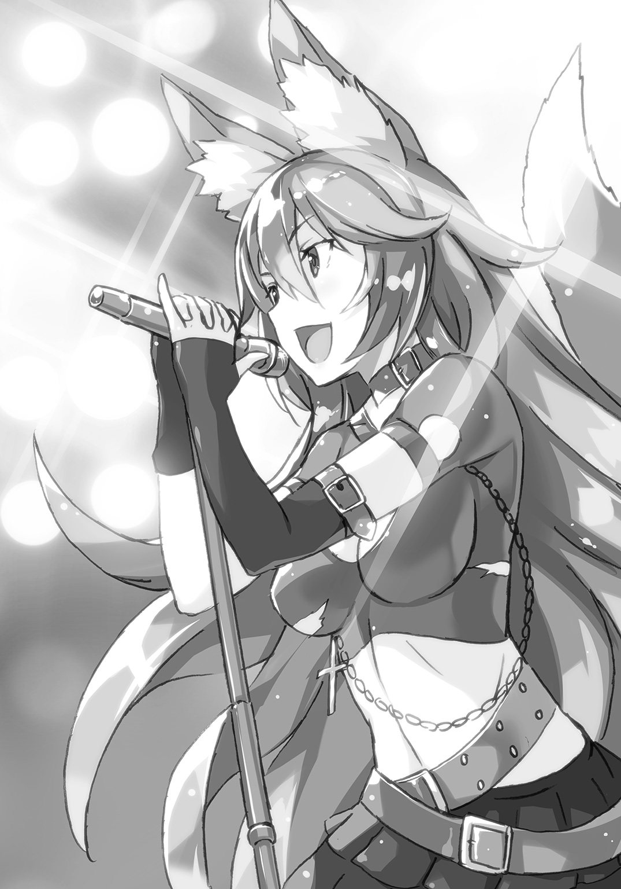
「お前のコメントはいちいち鼻につくな！」
しかし、どうやってこんなものを作り上げたのか？
趙公明のように陣に入れてしまうなら話も早いが、この会場は映像以外は実際の物質でできている。よほど妙な宝貝を組み合わせたのか。これを宝貝なしでやり遂げたとしたら、それはとんでもないことだ。
大げさに言えば、造物主のはしくれ。
本当に妲己は破格だ。元始天尊が自分と同じレベルかもしれないとほのめかしていたのは、あながち褒め殺しでもなかったらしい。
演奏が続くなか、太公望は両手を挙げた。
「妲己、お前の力はよくわかった......。ということで、ここから出してくれ......」
返事はない。
ただ、演奏だけが続く。
四不像が体の六割か七割を石にしつつ、盛り上がっている。
あれ？ これ、ガチで閉じこめられたのか？ 交渉の余地などなく、ここに置き去りにされて終わりなのか？
話が違う......。自分は妲己と交渉するつもりでいた。妲己だって仙人界すべてを敵にできないはずだから、落としどころは見つけられると思っていた。甘かった。
嫌だ、ファンクラブに入って限定ライブのチケットを手に入れる気などない。会場に数時間前に行って物販に並んで、クソ高いライブＴシャツを着るとか、そういうことに何の興味もない。
自分はぐうたら、のんびり、悠々自適に、大きく感動したり、涙したりもせずに、生きたいのだ。それが本来の仙人の生き方というものだ。
なのに、体がだんだんとノリはじめている。
本物ですらないのに、所詮フィルムコンサートみたいなものなのに、目の前の舞台に自分の目が釘付けにされていく。『三姉妹』のファンになりつつある。
山川草木ですら音楽の虜にしてしまい、音楽によって統合してしまう――これが妲己の理想とする世界なのか。
すべてを一つに。
たしかに、ほかとの区別が何もない状態になれば、悲劇も起こらない。
野良仙人の悪事も、仙人界同士のいさかいも生まれない。
シンプルで、瑕一つない世界だ。
だが。
シンプルで、瑕一つない世界が素晴らしいというのは、そういう価値観でしかないのだ。
シンプルで、瑕一つない世界を気持ち悪いと言う価値観とそれは等価なのだ。
そして、自分はこれをかえって不自然で異様なものと思う。ロックに興味のない人間だっていていい。人気のありすぎるものに対して斜に構えて、距離をおく価値観だってあっていい。
とは言いつつ、太公望もその音楽の力に屈しつつあった。
一つになることは、ある種の快楽がある。
それを絶対的に正しいと思わせるほどの、言語化以前の快楽がある。
くそっ！ 初めて耳にする曲なのに、二度目のサビではもう歌ってしまっている！ 腕をリズムに合わせて振り上げてしまっている！
いや、まだ、ここには切り札がある。
自分は軍師だ。
軍師としての策はメンバーに授けてある......。
太公望は歌に耐えながら会場を探した。
この中に脱出のカギが紛れこんでいるはずだ......。
自分がすっかり洗脳されなければ、勝機はある。
「頼む......助けて......くれ......」
そして、太公望は気づく。
歌声が微妙に二重に聞こえることに。
妲己は楽しげに歌っている。
これはたんなる戦闘ではない。妲己にとっての遊びの一環でもあった。
巫山戯ているのではない。遊びというのは本来、安直な気持ちで臨むものではなく、どこまでも真剣にやるべきものなのだ。
歌という手段を使うことで、戦闘ですら、遊びの中に繰り入れてしまうのだ。
妲己はその歌を止めた。
「さて、そろそろ彼も奴隷になったかしら」
太公望はもう許してもらえると思ったかもしれないが、妲己はそんなに甘くはない。
しかし、奇妙なことが起こった。
歌うのをやめたはずなのに、歌声が続いているのだ。
この空間の中に予期していない誰かが紛れこんでいる！
途端、妲己は後ろからはがいじめにされた。
「歌に溶けこんであげたわ。おかげで気づけなかったでしょう？」
楊戩はその変化を解く。
「まさか歌にまで化けられるとは思わなかったでしょう？ 自分の天才さに惚れ惚れするわ！」
「ふん、私を拘束したからって、その程度で――」
爆発が出入り口のないライブ会場で起こる。
そこには石化から解放された四不像に乗った太公望がいる。
手にあるのはなぜか吒の【火尖鎗】。
その背後に吒もいた。
「少し時間をかければ外から壊せる。それに吒は、魂魄がない。よって、音楽に熱狂もしない」
「ちっ！ 妹たちはもうやられたというの!?」
予想以上に太公望側の加勢が早く現れた。これは妲己も計算外だった。
「ああ、ライブに来てる奴が純粋なファンだけだと思ったら、大間違いだぜ！ 世の中には文句を言うためにＣＤや本を買う奴だっているんだ！」
太公望は軍師だ。仙人としてのスペック自体は超上級の仙人と比べればたかが知れている。
けれども一対一で戦うのでなければ、その環境の中で最善の手を打つことはできる。それが軍師というものだからだ。
楊戩も吒もいれば、たいていの敵には打ち勝つ可能性が作れる。
あとやることは一つだけだ。
「【火尖鎗】って、こう使うんでいいんだよな？」
槍の穂先にエネルギーを込めて――
「やりなさい！ 私なら逃げられるから！」
全力で撃つ！
弩火亜亜亜亜亜亜亜亜亜亜ッッッ！！！！！
爆発が妲己のいる辺りで起こった。
白いものがその爆風の中から浮かび上がる。
きっと、それは、妲己の魂魄だ。
妲己の作り出したライブ会場が跡形もなく消え去る。
「やったのね！」
爆発から間一髪のところで離脱した楊戩の声が響く。
その純白の円いかたまりこそが、太公望や楊戩が携わっていたプロジェクトの目的なのだ。
これが封神界に入れば、無事にミッション・コンプリートだ。
――けれど、そこに別の何かが現れる。
急に辺りに禍々しい黒い雲のようなものが浮かぶ。
目にした者すべてに寒気を引き起こさせるようなどす黒さ。
「何よ、あれ......？ 魂魄ってあんなにどす黒いものなの......？」
「いや、もっと恐ろしい何かだと思う......」
その異常な現象に仙人たちもフェスの観客たちも、空を見上げた。
夕立雲のようなものに周囲は覆われている。ほんの十秒ほど前には影も形もなかったのに。
太陽の光は完全にさえぎられ、大地が暗くなる。
唯一輝いているのは妲己のものであるはずの魂魄ぐらいだ。
その魂魄も雲に引き寄せられていく。
むしろ、飲みこまれていくと言ったほうがいいか。
誰もそれが何の現象なのかはわからなかった。
ただ、不吉なことが起こっているという意識だけがあった。
そして、魂魄がいよいよ黒雲と混ざり合おうという時――
とてつもない勢いで何かが飛んできた。
それは魂魄をかすめとって、いまだ残る爆風による砂煙の中で動きを止めた。
「ふう、働くって大変だね」
「光の次ぐらいに速く飛ぶからねー！」
そこにいるのは孔宣に騎乗する太上老君だった。
「それじゃ、忘れないうちに返しておくね」
ぽんと太上老君は魂魄を投げる。
その先の、ちょうど砂煙が晴れたところには、妲己の肉体が傷つくこともなく残っていた。
魂魄が体の中に入ると、妲己は我慢していたように大きなあくびをした。
「久々に魂を抜き出したけど、なかなか勇気のいるものね。みんな、もっと評価してほしいわ」
妲己はかつて国を転々としつつ、その土地の帝王を骨抜きにしていった。その時、退治されそうになっては、魂魄だけを飛ばして、次の土地へ移動していたのだ。
今もその力を使った。
魂魄を望むものが回収に出てくるように。
「やっぱり、あれぐらいでお前を封神なんてできないか」
話がうますぎたとはいえ、こうもぴんぴんした姿を見せられるのは太公望も癪だ。
妲己はくすりと笑って返す。本職だった傾城の役割を思い出したように妖艶に。
「あなたを倒すことだけに傾注するならもっと違う手をとったわ。だけど、もっと先に倒さないといけないものがいるでしょ。あなたが事前に連絡をしてきたように」
そう、朝歌に攻めこむ前に太公望は妲己に一報を送っていた。
共通の敵となりうる危険な存在がいる。もし、出てきた場合は共闘を検討されたし。
「協力してくれるなら、そう言ってくれよ......。お前、何の返事もしてこなかっただろ......」
妲己からは一時休戦にしようなどという提案も何もなく、崑崙と金鰲の仙人界同盟は結局朝歌に攻め入ったのだ。共闘を拒む以上、妲己は妲己で止めねばならなかったから。
「あなたたちが敵であることも事実だし、私たち以外に宇宙征服を企む奴がここで出てくる保証もなかったからね。この程度の攻撃で圧倒されてるようなら、共闘する意味もないでしょう。リスナーを一人増やしたほうがマシよ」
たしかに何の説得材料もなしに、いきなり手を組みましょうというのは虫がよすぎた。むしろ手を組ませてもらうために本気でぶつかるしかなかった。
「おかげで、俺たちはもう一回真剣勝負をやらされそうだ」
「だけど、私の迫真の演技のおかげで共通の敵が飛び出してきたでしょ」
妲己は視線を空に向けた。
黒雲はだんだんと形を変えて、女の姿になった。
漆黒の髪は後ろでひとまとめにされている。美しくはあるが、その姿になってもまず禍々しさを感じてしまう。
太公望も、その顔を見たことぐらいはあった。
なにせ仙人界における超有名人なのだから。
金鰲の主宰者、通天教主。
「通天教主、欲張ったせいで失敗しちゃったかな？ 妲己の魂魄ともなるとノドから手が出るほどほしかった？」
太上老君が尋ねると、通天教主も丁寧に礼をした。
金鰲を一から創った者だっただけあって、その態度には威厳がある。
「いかにも。妲己ほどの魂魄であれば、宇宙を再建する際に必ず有用であると思いまして」
「聞仲をそそのかして、崑崙と金鰲がぶつかってつぶし合うように仕向けたのは君だね？ そんなに今の仙人界が気に入らないかい？」
太上老君はいつものように感情をほとんど顔には表さない。それでも、周囲には自然と張り詰めた空気が漂っている。
「それは少し買い被りすぎですね。殷の去就をめぐって混乱が起こるところまでは歴史の必然。あとはそこに誰がどう横槍を入れるのか、問題はそこです。今の宇宙も仙人界も堕落が続いておりますゆえ」
その言葉に太公望はカチンときた。
「何が堕落だ！ 俺はそれなりに有給休暇を使って楽しみたいだけだ！」
「先輩！ そういうこと言うから堕落してるとか言われるんスよ！ 恥ずかしいから、口に出さないでほしいっス！」
「違う！ 俺は自分の主義主張に合わないものを堕落とかマイナスの言葉で定義する奴が許せないだけだ！ 結局、ただのわがままなんだ！」
こういうことを言っても通天教主は表情をほとんど変えない。やはり大昔の大物どもは感情の変化が小さい。ということは、元始天尊が例外すぎるのか。
聞仲も思うところがあるらしく、恐縮しつつ、通天教主を見上げた。聞仲は通天教主を幽閉しただけあって、後ろめたさがある。
「通天教主様......私に封印されたふりをしたのも、すべては罠であったと......」
「当然です。あなたごときが私を封印できるわけがないでしょう」
通天教主は傲然として言った。金鰲の主宰者として偉そうにする権利がある。
「さてと、ボクとしては封神界攻撃の犯人がわかったから、それでＯＫなんだけど、君はどうするの？」
「封神界にたまりたまった多数の魂魄はあとで手に入れればいいし、そもそも必須のものではありません。すぐれた仙人の魂がなくとも、新しき宇宙の創造は可能です」
悪びれもせずに、通天教主は自分がやったことを認めた。きっと、悪いなどと一切思っていないのだろう。
「まずは真相を知ったこの者たちの口を封じておくのが先決です。ここには妲己も聞仲もいる。この者たちの魂魄を転用すれば、次の宇宙を創る際にも有用です。無から魂魄のある生物を大量に創るのは面倒ですが、彼らの魂魄なら数万の命の素になりましょう」
さらりと殺害予告をしてきた。日本だったら、それだけで警察に通報できるぞ。
しかし、こちらには太上老君がいる。これで戦力的には互角以上――
「わかったよ。それじゃーね」
「ちょっと、ちょっと、ちょっと！ あんたはここで戦わないの!?」
太公望より先に楊戩がツッコミを入れた。
「悪の親玉がいるわけでしょ！ あんた、責任持って倒そうとしなさいよ！」
「ボクの仕事は封神界の管理だけだし」
「いやいやいや！ どう考えても、今後あんたのところも攻撃する可能性が濃厚でしょ！ 一度は封神界を攻撃してたみたいだし！ 宇宙の危機でしょ！ 手を貸しなさいよ！」
太上老君はこんな時だというのにちょっとむくれた。
「ボク、誰かに命令されるの嫌だなー。だから、どこにも所属せずに個人事業主をやってるんだけどなー」
「すきすきの好きなことで生きていくー！」
ダメだ、この仙人も乗騎も本気で働く気がない。太公望のほうがよっぽど熱意がある。
「あるいは、太公望がボクのお願い、何でも聞いてくれるならいいかもだけどー」
「た、たとえば、何を願うのよ......」
楊戩は太公望抜きで勝手に聞いた。
「楊戩ちゃんと別れて、とかー？」
握力で【三尖刀】の柄がぐにゃりと曲がりかけた。
「つ、付き合ってないから......別れようがないから......」
「じゃあ、楊戩ちゃんと永久に会話しないでもらおうかなー」
「楊戩、もういい！ これ以上話しても無駄だ！」
太公望が話をぶった切る。太上老君という仙人は自分がやりたいことしかやらない。それにあとで何を要求されるかわかったものじゃない。
「そうですね。我々で通天教主様を倒さなければ新しい仙人界を謳うこともできませんし」
聞仲も【金鞭】を再度構えた。
風もないのに鞭の房がふわふわと浮き上がって、発光している。
「まして、上司であろうと、金鰲の仙人が起こしている問題とあれば、余計に看過できません。たとえ、この身が朽ち果てようとも、食い止めます！」
妲己も九本の尻尾を逆立てて、戦の準備を終えていた。
「私も手を貸すわ。フェスの出演時間に遅れるわけにはいかないから、早めに終わらせたいの」
妲己の周囲には『三姉妹』のメンバーが集まってくる。
共通の敵を倒すために、あらゆる仙人が共闘する。
「それにあなた、宇宙征服を狙うライバルでしょ？ 私たち『三姉妹』と並び立つことがない以上、ここで消えてもらうしかないわ」
妲己は妲己で、独自にこの強敵の存在に気づいていた。いずれ、雌雄を決する必要があることも。
「よし、これだけ数が揃えば、どうとでもなるだろ。全員で――」
――毘燗ッッッッッッ！
通天教主がなにやら発光したかと思うと、太公望の力が抜けて、立てなくなった。
四不像も地面にへばりついて動けなくなっている。主従揃って、なんとも不甲斐ない有様だ。
「じゅ、重力に勝てない......」
「な、なんスか、これ......体が重いというより、硬いっス......」
ごろんと太公望は四不像から転げ落ちて、地面に倒れた。立ち上がれない。顔の上にアクリル板でもあるみたいだ。
しかし、それは太公望だけに起こったことではない。
ほかの仙人も同じような状況に陥っていた。
吒のような空に浮いていた者はふらふらと落下していたし、楊戩も哮天犬も立てなくなっていた。
「吒、原因不明のトラブルにより移動機能を喪失。復旧見込みは未定」
「どういう宝貝なの......？ こんな広範囲に作用する宝貝なんて聞いたことが......」
「宝貝ではありません。私自身が持つ力。術と言ったほうが適切ですね」
上空から通天教主の声が響く。
「あなた方仙人は、必ずなんらかの出自を持っています。人間、獣、木石、稀に仙人の両親を持つ者、とにかく出自があります。私の場合は、それが『天』でした。形而上学的な話なので、わかりづらいかもしれませんが、この宇宙もなかばは私自身のようなものなのです。天とは宇宙の別名ですから」
聞いているだけでめまいのしそうな話だった。
「つまり、宇宙そのものと戦おうとしてるってわけかよ......」
「そういうことです。宇宙に出自を持つ私がほかの仙人ごときに負けるわけがないでしょう？ そして、私が宇宙を改変しようと試みたところで誰の邪魔立ても受ける筋合いはないのです」
通天教主は涼しい顔をしている。本当に太公望たち仙人を自分の屋敷の壁に描かれた落書き程度にしかみなしていないのだろう。
あまりにも圧倒的な実力差だった。
惜しいとか惜しくないとか、そういう次元ですらなかった。
戦闘を行うこと自体が不合理。
「陰陽の理をコントロールして、しばらくの間、虚弱状態にいたしました。具体的に申しますと、あなたたちが持つ気の元になるもの、つまり元気を完全に奪い去りました。子供が『今日も元気いっぱい』とか簡単に言いますが、実はとても本質的なものなのですよ」
声だけが上から聞こえてくる。さすが、天だけある。
「いずれ、抵抗もできぬままに封神されることになります。その魂魄は次の宇宙を創る際に利用させていただきます。仙人一人の魂魄からは、大量の生命を創ることができます。納得がいかないなら、どうぞ抵抗してくださればけっこうです。力ずくで押さえこみますから」
「大変っス......。本気で恐ろしいことを言ってるっス......」
「ほらな......うかつに働いて、権力を持ちすぎると、人はおかしくなってしまうのだ......」
呂岳のウイルス型宝貝の比ではない。立ち上がろうという気力さえ起こらない。
まだマシなのは妲己だけだった。
少なくとも、この場で立ち上がっているのだ。
「ふざけないでよ......。私には仲間とともに音楽で宇宙征服するって夢があるのよ......。天だろうとなんだろうと負けられない！」
「人が持つ夢と書いて、『儚い』と読みますね。その意志の強さは素晴らしいですが、残念ながら意志の強さと仙人としての実力に相関関係は薄いようです」
立ち上がっても攻撃に移行する力がない。
なので、妲己は歌うことにした。
妲己は歌の力を信じていた。
その歌で通天教主を感動させることができれば――
「どうして歌っているのです？」
無駄だ。
「歌というのは、音という概念を利用した特殊な芸術様式に過ぎないでしょう？ 特殊なもの一つをとって、それが普遍なように考えるのは事実誤認ですよ」
どれだけ感動的な歌や音楽を作り出すことができても、根本的に興味がない人間まで振り向かせることはできないのだ。
「吒、活動能力が大幅に低下。省エネモードに移る......」
「私も機械化した体が言うことをききません......」
悲痛な声ばかりが聞こえてくる。とくに楊戩の声は完全に涙声だった。
「こんなのって、アリなの......？」
楊戩はずるずると太公望のほうに体を引きずってきた。
「ずっと頑張ってきたのに......こんなチート級の奴が出てきて全部かっさらっちゃうの......？ 私たちのやってきたことって何なの？」
敵の目から見れば、無駄ということなのだろうな、と太公望は思う。認めたくなどないが、認めずにどう戦えるというんだ？
楊戩はそのまま地面を這って、太公望の真ん前まで来た。
その手を握った。
それだけだ。手を握ったからといって、未知の力を発揮したりはしない。そういうことだ。
「俺の手、けっこう雑菌とかいるかもしれないぞ」
「せめてさ、最期はあなたに触れながら死にたいの......」
楊戩が寂しげに笑った。
「縁起でもないと言いたいところだけど、これは無理だな。仙人第一世代みたいな奴が相手ではあまりにも格が違いすぎる」
これは努力などで覆せるものではない。でなきゃ、妲己や聞仲や楊戩がどうにかしてくれているだろう。
「師匠が、通天教主を聞仲が封印したことをいぶかしんでたけど、ごもっともだ。こんな化け物、どうにかできるわけない......」
どんなに努力したって、無理なものは無理だ。
普段、努力論をきな臭く思っているのに、こんな時だけ努力で物事をひっくり返せないことを嘆くのは、ずるいのだろうか。それは、結局、頑張ったのだから報われて当然だという、見返りを求める価値観でしかないのだ。働いた分だけ対価を要求するのは不当ではないが、かといって高潔でもない。
「本音を言うと、俺たちでどうにかしたかった。劣ってる奴らで強い奴らを倒すのって爽快だろ？」
「私、あまり劣った側にいなかったから実感ないわ」
「選ばれし者め」
けど、最善の策がとれないならその次の策をとるというのは軍師としてはごく当然のことだ。
空を見上げれば、通天教主だけでなく、太上老君もぷかぷか浮いている。乗騎の孔宣のほうは、やはり力の影響を被っているのか、相当しんどそうだったが。
「李誕」
「何？ ボクの言うこと、何でも聞いてくれるの？」
「俺のために働けっ！」
恥ずかしいことを堂々と言うと、よくわからない気持ちよさがある。それはちょっと露出狂的な快感に近いので、あまりよろしくないかもしれないが。
楊戩たちはきっと何を言ってるんだという顔になってるだろう。
「太公望はボクに命令できるような立場じゃないと思うけど」
「お前はここで誰かのためにしっかり働くべきだ！ 少なくとも、俺が頼みを聞くというような交換条件で戦うべきではない！ 理由はお前が大きな損をするからだ！」
軍師というのは、体を縛られていようと、口があればそれで事足りるのだ。
「説明責任を果たしてもらわないことには納得できないかな」
よし、いくらでも説明してやる。
「お前は俺と恋愛をしたいんじゃないのか!?」
世界の命運がかかっているのだ。個人的な羞恥心はどこかに置いておく。
「うん、そうだよ。もう何度も言ってるじゃん」
「もし、俺がお前の言うことを何でも聞くようになったら、お前は付き合えと要求する気だろう？」
「する気だよ。もっと具体的にいろいろ要求するよ」
こいつ、隠す気ないな......。
強すぎる仙人は遠慮という発想を持っていない。
「はっきりと言うぞ。それは要求に従っているだけであって、恋愛ではない！ 恋でもなければ愛でもない！ つまり、交換条件などを利用した時点で、お前は永久に俺と恋愛などできなくなるのだ！」
太上老君はしばらく、ぼうっとしていた。
聞こえていないのか？ こんなこと、二回言うのは途方もなく恥ずかしいから勘弁してほしいのだけれど。
「あっ、ほんとだ」
ずいぶんとタイムラグのある言葉。
そのあとに太上老君は表情を変えないまま、頭を抱えた。
「恋愛できないと意味がないなあ」
言葉で大仙人をやりこめたのだ。
あと一息だ。
あと一息で、押しきれる。
「無論、俺がいなくなれば、お前の恋愛も消滅する！ お前以外の仙人でこの危機を救えない以上、お前が戦って宇宙を存続させるしかない！」
「それってただ働きさせようとしてるってことなんじゃないの？ ボクに恋しろとは言わないけど、せめて何かボクに――」
太公望は楊戩の手を強く握った。
ここから先は楊戩も巻きこむからだ。
とはいっても、そんなことにだって、ものすごい抵抗がある。恥ずかしいからという意味じゃない。通天教主の力がさらに強くなってきているのだ。そばにいる誰かの手を握ることだって、息をすることだって、重い。負荷がある。
「な、何なの、太公望......？」
「ここでお前が俺に見返りを求めるならば、俺は......俺は楊戩と永遠の愛を誓って封神されてやるっ！ 誰が交換条件なんかを出す奴を愛してやるものかっっっっっ！」
言ったぞ。俺は言ってやったぞ。
「な、何を！ 何を言ってるの!?」
平常時ならまわし蹴りからの肘鉄ぐらいは甘んじて受けねばならなかっただろう。今だけは非情な状況に感謝だ。
「楊戩、考えてみろ！ どうせ消されるなら、愛しい人のそばで死ぬほうが人生としていいだろ！ 孤独に朽ち果てるより得だろ！」
「いたく功利主義的だけど、なんとなくわかるわ！」
「だから、救いがない場合は俺に惚れろ！ 俺を救いにしろっ！」
得がどうとか言い出した時点で、もはや愛でもラブでもない気がするが、そこは言葉をたたみかけて煙に巻く。所詮、軍師なんて詐欺師みたいなもんだ。
「俺だってお前を愛してやる！ この身が消滅するまで、愛で包んでやる！」
しばらく楊戩は黙りこんだ。
非常事態とはいえ、これはなんとも重大な契約手続きなのだ。
軽々しく結論を出すことなんてできない。
ならば重々しく、晴れ晴れしく、結論を出す。
「わ、わかった......。この身が消えてなくなるのなら、べ、別にその直前に誰かに捧げたって、一緒だし......」
「だな。俺たちが勝てない場合はな」
種はまき終えた。
これで太上老君がじっとしているはずはない。ここまで言って無理なら、最初から太上老君は自分を愛していなかったということだ。別にそれでもいいさ。その場合は楊戩と愛し合うのさ。世界中の存在に愛される必要などない。誰か一人ととことん愛し合えれば充分だ。愛の成就が消滅の直前だろうと、愛し合って自分たちは終わるのだ。なんと素晴らしいことか！
「そんなの、許さない......」
それは嫉妬だろうか。
むしろ憎悪だろうか。
とにかく、太上老君の声になんらかの強い感情が宿っている。
彼女は布のようなものを取り出して、広げた。
黒一色のようで、よく見るといくつも小さな白い斑点がついている布だ。
「宝貝【太極図】」
太公望はたしかなデジャブを感じた。
ああ、これ、太乙真人の作ったゲームの中で、太上老君が出したものだ。
「太上老君、あなた、私の妨害をする気ですか？」
「だって、妨害しないと、太公望が楊戩ちゃんにとられちゃうでしょ」
「たかだか仙人一人に、あなたは恋愛感情などを抱くのですか？ ばかばかしいにもほどがあるでしょう。あなたは宇宙最初期からの仙人の一人ではないですか」
「そっか、君には恋愛感情なんてものはないよね」
「そんなもの、交尾を合理化するために生み出されたものにすぎないでしょう」
「君はつまらない生き方をしてきたんだね」
ふっ。
太上老君は一瞬だけ、鼻で笑った。
大物の中の大物を、確かに見下した。
「ボクにとって、これは無駄なことじゃないんだ。セットオン」
【太極図】と呼ばれた布には終端というものがぼやけて存在しなかった。
そのぼやけた部分がどんどん広がっていく。
まるで水に溶ける絵の具のように。
そして、大気と混ざり合う。
いつのまにやら、白昼の戦闘は、きれいな満天の星空の下の戦いに変わっている。
「この【太極図】は過去の宇宙を圧縮して作られている宝貝なの。跡形なく消されるのはもったいないからね」
「そんなことはありえません。それが事実だとしたら、あなたは私より以前から存在していたことになる」
通天教主がその言葉を否定する。
「なぜ、ありえないことになるの？ 君がある時点で発生したとしても、それ以前が無だったことにはならないでしょ？ ボクは君が生まれたところも見届けていたよ」
話のスケールがおかしすぎて、太公望は考えるのをやめた。
お前は具体的にいつから生きているのか。そもそも過去に宇宙があったとしたら、それは誰かに滅ぼされたのか。すべてのはじまりというのは存在するのか。そんなことはすべてどうでもいい。
これからのことを、未来のことを考えるほうが先だ。過去なんて真っ白でも真っ黒でもマーブル模様でもなんでもいい。
「もし、あなたの言葉が事実としたら大変興味深い。私も戦い甲斐があります」
おい、通天教主とやらももっと勝ち目がないみたいな顔で驚けよ！ これで倒せなかったら、絶対に宇宙は滅びる。
通天教主も小さな手鏡のようなものを取り出す。
「宝貝【洪範九疇】。この宇宙に存在するあらゆる物をデジタル化して管理する宝貝です。太上老君、あなたはハエにでも変えてやります」
太公望は風を起こす自分の宝貝が格好悪くなった。
宝貝の力が強くなりすぎて、抽象論のようになっている。
もっとも、チートクラスの宝貝同士の決着はすぐについた。
通天教主の顔色が曇る。
「あれ......？ おかしいですね......？ エラーしか出ない......」
初めて通天教主が感じた不安。
「おかしい。この宝貝は天たる私が作ったもの。誤りということが起こることなどありえないのに......」
「そりゃそうだよ。その宝貝、今の宇宙のものにしか対応しないはずだもん。ボクは前の宇宙からいるから、サポート外なんだよ。ゲーム内の魔法でプレイヤーを破壊できるわけがないようなものさ」
平然と、当たり前のことを、太上老君は伝える。
その当たり前の事実は、通天教主を驚愕させるに充分だった。
「もしもそれが事実としたら――私に勝利の可能性は......」
まだ通天教主は誤解していた。
可能性など、最初からない。
太上老君と戦うということは、そういうことだ。
「それじゃ、ボクの番」
太上老君が宝貝を起動する。
空間に浮かんでいるあらゆる星。
それが通天教主めがけて落ちてくる。
「そんな、こんなバカなことがあり得るわけ......」
「バイバイ」
その一言を通天教主が聞けたかどうか。
無数の星々が降りそそぐ。
もはや爆発音すらしない。大きな光を放っているだけだ。
やがて、白い魂魄がそこから飛び出して、遠くへ飛んでいった。
星ではなく、通天教主の魂魄だろう。
「おわおわの終わりー！」
気力が戻ったのか、孔宣がばさばさ羽ばたいた。そういえば、太公望もあっさりと立ち上がれることに気づいた。術者がいなくなった証拠だ。
「これでボクも太公望と恋愛をする権利があるよね」
ゆっくりと太上老君は太公望たちのところに降りてくる。
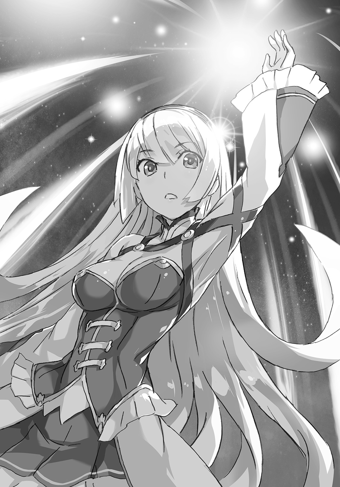
「権利だけはな」
自分の力で勝ったわけではないが、太公望は誇らしげだ。策士は策が成功すれば勝者面をしてもよい。軍師とは知略を誇るものだからだ。
「ところで、通天教主を倒したのに、お前の宝貝は回収しなくていいのか？ 回収って概念が通用するものなのか知らないけど」
「これ、元に戻すのに八十時間ぐらいかかるの。それまでは夜みたいに見える日が続くね」
宇宙の危機を救ったのだから、これぐらいの異常現象は許されてもいいか。
「ありがとう。なんだかんだでタダ働きさせちゃったな」
「せめて、キスぐらいしてよ」
相手にはたった今宇宙を救ったという強みがある。これでキスをしなかったら、自分はどんな価値のあるくちびるを持っているのだということになる。
しょうがない。
「俺のどこがそんなに好きなのかよくわからないけどな」
「そこまで強くないのに、すごい仙人たちと渡りあってるところ？」
褒め言葉なのかもわからないことを言ったくちびるを奪った。
こんな美少女とキスをするのだから悪い気がしないわけはない。それにいい香りもした。触覚だけではなく、キスは五感のすべてを動員するんだなと思った。
「うわあ、まぶしいっス！」
「ちゅうちゅうのちゅー！」
乗騎がうるさい。
体より、むしろ心があったかくなっているような感覚。知らないうちに空を舞っていたりしないよな？ 充たされているのに、もっともっと李誕をほしくなる。けれど、この気持ちのうち何割かは肉欲に由来するものだ。生物の本能から来るもので、微妙に恋とは違う。そこを混同すると、破滅してしまう。
もっとも、それで破滅する生き様も意外に悪くないのかもしれないが。何人もの女を泣かす人生というのは人として褒められたものではないが、男からすれば、はっきりと合格点だろう。
けど、今は幸せで自分のほうが泣きそうだ。
李誕め、こんなに心を惑わしてくるだなんて、なんて高度な術を使ってくるんだ。
くちびるを離した。
ほんのりと太上老君は顔を赤らめていた。
太公望もどことなく夢心地だったのは、キスのせいなのか、激闘のあとだったからなのか。
「次はちゃんと恋愛しようね、太公望」
「あ、ああ――わっ！」
腕をぐいと引っ張られた。振り向いた先には楊戩が立っている。引っ張ってきたくせに、横を向いていて、視線を合わせない。
「......ご、ご褒美をあげないとね」
「今後、叩いたり蹴ったりされない権利がほしいな」
「キスしてもいいわよ。今なら許してあげる」
「宇宙は滅ばなかったぞ」
「それでもいいから！」
ごくりと唾を呑んでから、くちびるをつけた。楊戩のほうが柑橘系に近い香りがした気がした。李誕だけでなく、楊戩とも......。これが宇宙を救った報酬なのかもしれない。
「二股っス！」
「ふたふたの二股ー！」
こいつら、あとでしばく。
キスのあとも、そのまま、ぎゅうっと抱き締められた。
「あなたはかっこいいけど、もうこんな危険なことはしないでほしい......」
「俺も自分の部屋で猛烈にごろごろしたい」
「わ、私とごろごろする......？」
あっ、それは反則だ......。男に向かって、その発言は......。
「ほどほどにな......」
ほかの仙人の目もあるので、なんとも中途半端な言葉になった。
さて、そのほかのメンバーはどうしているのかと見渡すと――
妲己たちはいない。
吒は太乙真人に無事に終わったよと報告をしていた。これはわかる。お母さんが心配しているからな。
聞仲はなぜかおどおどとしていた。どこにそんな顔になる要素がある？
「あの、崑崙では勝利すると、くちづけを交わすという習慣があるのでしょうか？」
謎の文化を想定されていた。たしかに立て続けに二人とキスしたから、変に映ったかもしれない。
「私でよければ......」
いっそ何食わぬ顔でくちびるを奪ってやろうかと、一瞬だけ黒い自分が出てきたが、すぐに考え直した。楊戩から殺気を感じたせいだ。おそらく、マジで封神しにくるだろう。
そこに妲己側の仙人たちと戦っていた呂岳たちが走ってきた。
「無事だったのね！ 死ぬほど心配したんだから！」
呂岳が聞仲に抱きついていたので、これは自分の出る幕はないなと思った。そっちはそっちで愛を育んでくれ。呂岳の後ろから趙公明が「お姉様、わたくしも交ざりますわー」と抱きついているから、カオスな感じだが......。
「ところで、妲己たちはどこに――」
歓声が風に乗って会場から聞こえてきた。
「『三姉妹』四人体制の破壊力、とくとごらんあれ！ 『新暦』の世界へようこそ！」
そうだ、あいつらにとってはあくまでもこっちが本番なのだ。
太公望たちもフェスを見てから帰った。
音楽を聴くのも悪いものではないなと太公望も少し考えを改めた。
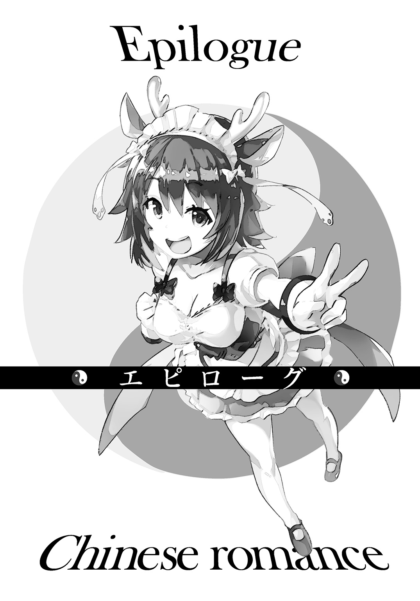
派手な戦いのあとには、必ず地味も地味な政治的駆け引きが行われる。巨悪は倒したが、その過程で立場の違う者たちが共闘していたから、戦後の話し合いは必須だった。
太公望は即座に有休消化期間に入りたかったのだが、崑崙での会議に連日参加させられた。
崑崙から参加したのは元始天尊やほかの幹部職員、金鰲からは聞仲や呂岳が参加した。
あと、妲己の陣営からはメンバー全員が会議に出ていた。別に政治に熱心というわけではなく、どっちみちライブの打ち合わせなどにメンバーが揃ってないと不便だからという。
また、殷の主権者である紂王が入っているので、ちょうどよかった。人間は仙人の世界には呼んでこれないのだが、現在の紂王は扱いとしては仙人なので問題ない。西岐にも一人ぐらい仙人がいてくれればいいのだが、そこはしょうがない。代わりに吒が置いてきた通信用の宝貝などを使って連絡をとる。
なおフェスの終了後、西岐にも顔を出して、姫昌や黄飛虎と再会した。久闊を叙すのは目的としては二の次で、人間の世界の歴史の流れについて説明するためだ。反対されるわけがないから、ある意味気分的に楽ではあった。
あらためて西岐の軍師として残ってくれないか週休六日でもいい――というありがたいオファーもあったが、仙人が人間の世界でずっと働くのはご法度なのだ。高校生が小一のクラスで幅を利かせていたら、偉いどころか格好悪い。似たようなものだ。
そして、西岐を離れたあと、そう日を置かずにこの崑崙での会議がはじまったのだ。
これじゃ、ただの幹部職員じゃないか。自分が最も望まなかったところにたどりついてしまっている。人生とはかくもままならぬものである。
会議の最終日、議長役をやらされていた元始天尊が立ち上がった。
ちなみに一人だけボールに乗っているので自動的にボールを配置できるお誕生日席が定位置となり（デカいので隣の席にぶつかる）、議長っぽいということでその役割を押しつけられた。
「えー、以上のように、仙人界の大合併を全会一致で承認したいと思いますー」
覇気のない声で、元始天尊がそう宣言して、会議は無事に終わった。
西岐を映しているモニターの中でも、姫昌と黄飛虎が深くうなずいていた。西岐もやがて殷と合併して、最終的には姫昌が王となることに決まっている。
太公望も晴れ晴れしい顔で、明日から有休使うぞ、と思った。
その瞬間、崑崙と金鰲という政治組織は解体された。
これからは、仙人はすべて「仙人界」というものに包括される。
「一段落はつきましたが、まだまだ待ったなしの問題が山積していますね。とくに封神界に入っている仙人の魂魄をどうするかは、どこかで結論を出さないといけません」
聞仲は根が真面目だけあって、ずいぶんまともなことを言っている。
「そうだね。というか、封神界の管理システムも先輩に一任してたから聞いておかなきゃな......。魂魄を個別に選んで出してくるなんてできるのかな......」
相当、根の深い問題のようだったが、太公望はあまり聞いていなかった。とくに太上老君と関わりがある議題なので、責任者にされかねないのだ。こういう時にたくさん意見を出すと、じゃあお前がやれという流れになりがちだ。
「妲己ちゃんたちの側も仙人界のメンバーだから、あまり無茶苦茶なことはしないでね」
元始天尊としては妲己が一番不気味な存在ではあった。
「ええ、音楽活動ができれば私たちは何も問題ないから。ロックで天下をとるからね」
統一されたのにいきなり天下をとるとか言ってるぐらいだから、たしかに面倒な人である。
「姉さんがアレなんで、私が代わりに話します......」
胡喜媚がこほんと咳払いする。もう、その顔を隠す布はなく、仙人の中でも稀に見る明眸皓歯の美貌を堂々とさらしている。
「私たちは定まった政治体制に抗う意図はありません。音楽を続ける環境が整備されているなら、そのまま漸進的にロックを広めていきたいなと。人間の世界での活動はライブだけに限ります。いつか、音楽によって宇宙はより平和で美しいものになるでしょう」
「つまり、敵対的な行動はとらないってことだね。だったら、なんだっていいよ」
すごく雑な結論だが、仙人としてはそれぐらいのノリでいいのだと思う。ガチガチに固められた世界じゃ、太公望など存在すら認めてもらえないだろう。二日休んで一日働くぐらいのペースでちょうどいい。
一方で、『三姉妹』のメンバーたちは目を見合わせて、うなずきあった。
「この場を借りて、重大発表があるわ！」
太公望たちはもう席を立とうとしていたので、いきなり叫んだ妲己の声にびくっとした。
「な、何......？ 政治でもトップを目指すとかはややこしくなるから言わないでね......」
びっくりしてボールからずり落ちそうなまま、元始天尊が言った。
「これまで『三姉妹』はすごい勢いでシーンを駆け上がって、ビッグになったわ。とくにここ最近の成長は我ながら目覚ましいと思う」
それは事実だ。仙人のファンが前回のフェスなどで増えたせいだろう、確実に宇宙に『三姉妹』の音楽は広まっていた。
「だけどね、さらに次の階段を上るには、それぞれのメンバーのレベルアップが必須だと判断したの。だから、しばらくの間、バンド活動を休止して、ソロとして戦うわ。それが私たちの決断！」
「最高のギタリストになるために修行してくるからー」と王貴人が言った。
「ソロの時は新しいバンドを組もうと思ってます」と胡喜媚が続いた。
「朕の場合、王としてまだ仕事も残っておるからな。姫昌への禅譲の準備もせんとならん」と紂王が一番まともなことを言った。
「お前ら、ぶれないよな......」
太公望は本当に感心していた。初心を忘れないのは大事だ。
よし、自分もそれを見習おう。
「俺も明日から有休消化だ」
「君もまったくぶれてはいないよ」
元始天尊はもはやあきれることすらしていなかった。
「最高司令官を代理じゃなくて正式に譲ってもいいんだよ」
「いえいえ、俺なんて五千万年は早いですよ」
◇ ◇ ◇
仙人に二言はない。太公望は翌日から有休を行使した。
白鶴に「あ、ジョークじゃなかったんですね」ときょとんとされた。
「俺は誠実な男だ」
「誠実な引きこもりと不誠実だけど引きこもってない人だったら、どっちがマシか難しいところですね......」
その気持ちはわかるが人は違う可能性を同時に生きることはできないのだ。自分は誠実に生きるほうをとる。
誠実にゲームをはじめた。まだ、太乙真人制作のゲームがラストまでいっていなかった。
――戊裏っ、戊裏っ。
横では太上老君がおかきを食べている。孔宣も人間の姿で部屋に入りこんでいた。人口密度がかつてないほどに高い。太上老君以外に誰か入ってきたことなんていつ以来だっただろうか。
「あ～、そこはそっちに行っちゃダメなんだよね。追いこまれるんだよね」
「へたへたのヘタクソですね、太上老君様。ばりばり、ばりばりばりばり」
うるさいわ。あと、どんな食い方したら、そんなに音が出るんだよ。
「ボクが手伝わなくていいのー？」
「俺一人の力でやる。朝歌ではお前に頼ることになったからな」
もちろん、あの時、太公望やほかのメンバーがちょっと頑張ったからといって結果が変わらなかったのは知っている。通天教主の相手は太上老君しかできなかった。きっとこの世にはまだまだ太上老君でしかできないようなことがたくさんある。
だからこそというか、自分でやれる範囲のことまで太上老君に任せるのは嫌だ。どんな大仙人だろうと、そのてのひらの上で踊ってなるものか。
時間はかかった。わかっているトラップに何度もかかり、それをクリアしたと思ったら前まで攻略できていたところに引っかかり......。覚えゲーだから、まずは死ぬ場所を覚えるところからはじめるしかないのだが、それでも死にまくればストレスはたまった。
そんな苦難を乗り越え、四面を攻略した。五面は太乙真人が難易度設定を間違えたのか四面よりも楽だった。六面の元始天尊を苦労の末に倒したら、まだ続きがあった。
「真のラスボスは通天教主だったってことか」
太乙真人がこのゲームを作った時、未来を知っていたわけがないから、偶然だろう。自分の上司に当たる仙人をラスボスにしづらかったのかもしれない。しかし、フィクションが現実を予見しているというのは案外とよくあることなのだろうか。
「ボクは全クリしてたから、とっくの昔に知ってたけどね」
「そう言ってたな。じゃあ、お前はすべて知ってたのかもな」
最終面はクリアできる奴が本当にいるのかと疑いたくなるほどの異常な難しさだった。有給休暇をすべて消化してもボスまで行けるかどうか。ひとまず、今日はここまでとゲームを消した。
「だけど、そこまで自力でたどりついた太公望は偉いよ。またキスしてあげたいぐらい」
「そ、それはまた今度でいいかな......」
簡単にこう答えられたわけではなかった。ただでもらえるキスならほしい。しかし、ここは自分の部屋だ。とてもキスだけですむとは思えない空間である。それにクジャクの仙人が一人いる。
「今度っていつ？ 五分後？」
直後かよ。
「明日以降な」
「へたへたのヘタレー」
「クジャクは黙ってろ。こういうのはな......すごくデリケートな問題なんだよ......」
しかし、相手は太上老君という最強と言って間違いない仙人である。その程度で許してくれるわけがなかった。
「キスしてくれなかったら、ボク、孔宣ちゃんとキスしちゃおっかなー」
「別にいいぞ。女同士は俺はノーカンと定義している」
「この子、男だよ」
「じょ、冗談だよな......」
変な声が出た。
いくらなんでも信じられない。言動を除けば、優美な碧色の髪をした女性の仙人にしか見えないが......。だが、たしかにクジャクって美しいほうがオスだったような......。
「ますますの益荒男だから、胸なら見せてあげるよ？」
「いや、男でもいい。むしろ、男だからこそ、見せてもらうのは人としてダメな気がする......」
「そしたら、太上老君様とキスしちゃうよー？ 男だから、すごく興奮してるよー？」
この二者択一を迫るやり方、卑怯だろと思ったが、自分も太上老君にこうやって助けさせるように仕向けたのだった。やったらやり返されるのだ。
「ボク、タイムリミットは十秒にしよっかな～。じゅう、きゅう、はぁち」
どうすればいい？ キスしてしまうしかないか？ 問題はそのあとだ。誘惑に流されっぱなしになったりしないか？ かといって、このまま十秒待っているわけにも......。
「なぁな、ろぉく、ごぉ」
時間はない。さあ、ここは男らしく決断しろ！
「もしかして、孔宣様とキスしたいの？」
「違うわ！ 葛藤の部分はそこじゃない！ ――あっ、貴重な時間をロスしたっ！」
もはや思考の暇すらない。動くしかな――
玄関のドアががちゃりと開いた。
「あっ、先客がいたんだ......」
入ってきたのは楊戩だった。インターホンぐらい鳴らせと思ったが、扉を蹴破る奴だから、平和的に入ってきただけ御の字だろう。
そして、ありがたいことに、太上老君もカウントをやめた。楊戩が来てくれたおかげでリセットになったらしい。間一髪のところだった......。
「楊戩、お前には借りができたな」
「はっ？ まあ、恩を感じてくれるなら悪い気はしないけど」
太上老君は不愉快そうな顔になっていた。太公望にはその変化がわかる。いや、このシチュエーションで諸手を挙げて楊戩を歓迎するわけないと誰でもわかるだろうが。
「それで、お前は何をしに来たんだ？ 有休使ってるから働きにはいかんぞ」
「知ってるわよ。白鶴から聞いてるわ」
だったら、なおさら目的がわからない。というか、こいつも有休を使ってるのか？ どうして、白昼堂々と部屋に来たのか。
「私、今日からこの部屋で住むことになったから」
「はっ？」
何を言っているのかわからないし、許可をした覚えもない。だいいち、聞いた覚えすらない。おそらく、なんらかの事実誤認だろう。部屋の番号を一つ間違えてるとか。
「仙人界のトップである元始天尊様からは許可ももらったわ。はい、これ、書類」
たしかにそこには元始天尊、聞仲その他のハンコが押してあった。承認されている。
「そんなのダメだよ。未婚の男女が同じ部屋で住むなんて不健全。どっちかがキスしようとか言ってくるに決まってるし、そのまま流されてもっと深い仲になっちゃうに決まってる」
太上老君が自分のことを見事に棚に上げきって言った。あと、隠していた魂胆までばっちりしゃべっていた。
やはり、キスは運命の分かれ道だったらしい。それ以降に分岐はなくなる。
「そこは......私がちゃんと見張っておくわよ......。まさか、私を襲う勇気なんて......太公望にあるわけないし......」
「お互いが同意の上なら、襲ったことにならないもんね。そうだよね」
太上老君の声が冷たい。
「だ、大丈夫だから......。むしろ、私が同棲ぐらいしないと、あなたが太公望の気持ちを考えずに無理矢理、事を進めようとしそうだから......」
思い当たるところがあるのか、太上老君も言葉を一度止めた。
「そもそも、仙人界の職員じゃないあなたに止める権利はないからね。残念でした」
「じゃあ、ボクもここに住めばいいよね」
「職員の社宅に当たるところに無関係な仙人が住んだりできないわよ」
楊戩が社会人スキルを使って、太上老君を追い詰めている間、太公望はちょっとずれたことを考えていた。
――楊戩なんかと同棲したら引きこもりライフが瓦解する。
自堕落な生活をしてたら、昔の軍隊よろしく即座に懲罰が来る。
きっと元始天尊あたりはそれを見越してこんなことを許したのだろう。おのれ、あれだけ働いたというのに、まだ働かせるのか。しかも、これでは正規の休日すら、横に楊戩がいるから落ち着かないではないか！ 鬼のような上司だ。
あと、当然ながら緊張もする。
楊戩みたいな美少女がずっと同じ部屋にいたら、それこそ落ち着くわけがない。
「今日からよろしくね、太公望」
楊戩は少し意地を張ったように、いい笑顔を作って、手を伸ばす。
はぁ。
これは握るしかないだろう。
だが、まだまだこの部屋にはノイズがいる。
「それじゃ、ボクも握手しよ」
太上老君も手を差し出してきた。なんじゃ、そりゃ。
ここでえこひいきをして怒らせても、うまくない。
右手は楊戩に、左手は李誕に。
両手に花とはこのことだ。
どちらの手もやわらかい。だけど、どちらも違う。どう違うかと言われると難しいけれど。
「あのさ、二人は握手しないの？」
二人はヘビとマングースみたいにお互いにジト目で見つめ合ったが、
「まだいいわ」「しない」
まあ、時間が解決してくれるかもしれないしな。
ぱしゃりと孔宣がその光景をスマホ型宝貝で撮影していた。
これ、拡散されたらどうしよう、そんなしょうもないことを太公望は思った。
今日の夜も明日の朝も楊戩がいるのか。一人の生活は今をもって終了となった。
人生というのはままならんものである。たとえ、仙人になってもそれは変わらないのだ。むしろ、仙人だからこそ、その、ままならなさをいつまでも抱えていくのだろうか。
しかし、新しい喜びもあるかもしれない。変化は不幸だけではない。
「よろしくな」
ひとまずの笑顔を作って、太公望はあいさつをした。
「あなたに最高の人生をプレゼントしてあげるわ」
また楊戩が大言壮語を吐いた。
「ほどほどに期待しておくことにする」
と、そこでドアががちゃりと開く音がした。
「先輩！ 私も乗騎として、この隣の部屋に引っ越してきたっス！ 引っ越しそばを持ってきたから一緒に食べるっスよー！」
人間形態の四不像がずかずか入ってきた。部屋にいた全員が面倒なのが増えたと思った。
「面倒なのが増えたな」
「先輩、そういうのは心の声で収めておくものっス！ 本当に口に出すのはひどすぎるっス！ あれ、やけににぎやかっスね、この部屋」
仙人らしい、俗世から離れた生活は金輪際諦めたほうがよさそうだ。
「アウトドア系の趣味でも持とうかな。たとえば釣りとか」
部屋にいるよりきっと静かで、超俗の境地に近いはずだ。
◆封神演戯 了◆
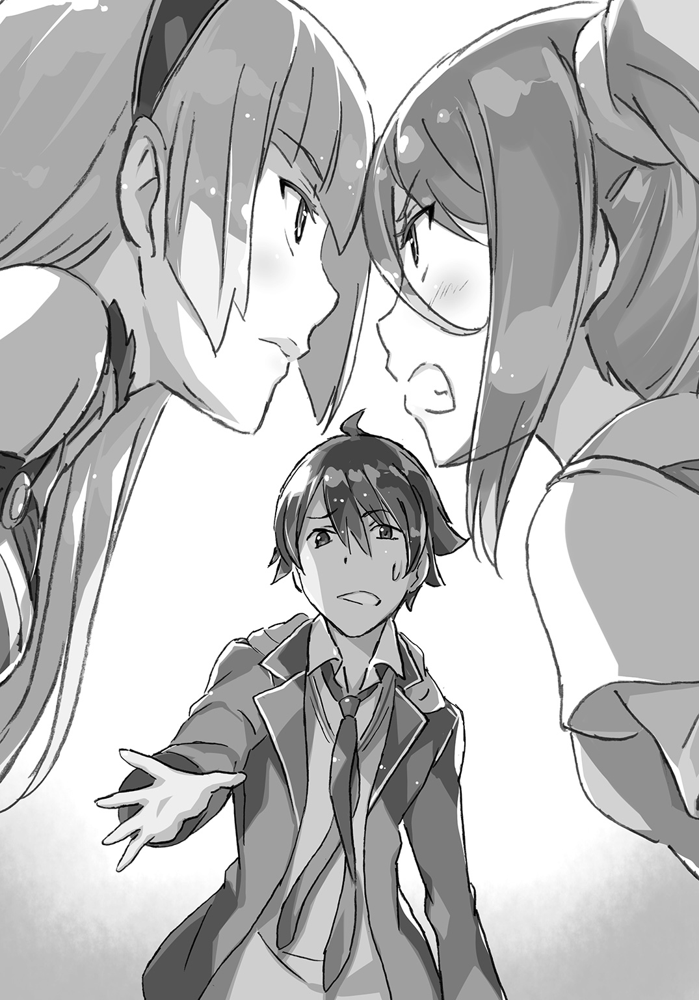
あ と が き
『封神演戯』、無事に完走いたしました！ ご愛読ありがとうございました！
原典に詳しい方は今更な話かもですが、『封神演義』の完訳本はだいたい三巻で終わってるんですよね。なので、三巻あたりで締めるのがきれいかなと構想当初から予定してたんですが、ちょうどそれぐらいの按配になりました。
書き終えて、元になった話がない一般のライトノベルを書く時と違って、独特の充実感がありました。もしかすると翻訳業などをされてる方はこういった気持ちを味わっているのかもしれません。
あと、原典で不遇をかこっているキャラをできるだけ活躍させられたのもよかったです。とくに孔宣を出せたことと、原作でひどい死に方をする趙公明の待遇をよくできたことには満足してます。欲を言えば陸圧とかふざけたチートキャラももっと自分なりの解釈で出したかったのですが、三巻で収まらなくなるので......。
イラストは最後までむつみまさと様に担当していただきました。キャラが異常に多い作品で相当大変だったかもしれませんが、毎巻新しい、素晴らしいキャラを作っていただきました。とくに太上老君はすごく気に入ってます。もし機会があったら太上老君がダメな男を飼うだけの話を書きたいです。さすがに機会ないと思いますが......。
また、中国の古典というライトノベルにはあまり類例のない企画を快く通してくださった編集さんにもお世話になりました。あと、シリーズをプッシュしてくれた営業の方、書店の方にも普通のシリーズなどよりはるかにお世話になりました。
そして最後まで森田の解釈した『封神演義』にお付き合いくださった皆様にも謝辞を。もし納得いかないという方がいらっしゃいましたら、ぜひとも「俺の考えた『封神演義』」を作ってください！ 『封神演義』は原典もほぼ全三巻で通読も容易ですし、三国志と比べると資料の量もそこまで多くないです。挑戦にはもってこいです。ライトノベルで『封神演義』の小説がたくさん出ると、最初にやったのは森田だとこちらもドヤ顔ができるのでよろしくお願いします。
最後に宣伝を。『封神演戯』に続くダッシュエックス文庫のシリーズも制作が進んでいまして、そう時間を置かずに発表できるかと思います。多分もし『封神演戯』四巻があったのならこのくらいに出るなという時期にはじまります。やってることは全然違いますが、『封神演戯』より面白い小説目指して鋭意作業中ですので、なにとぞよろしくお願いいたします。
では、次のシリーズでお会いしましょう！
著者紹介
森田季節 もりた きせつ
封神演戯、これにて完結です！
自分なりの『封神演戯』を書き切れたかと思います！
ありがとうございました！
illustration
むつみまさと
いよいよ最終巻！ もう楊戩たちを描けないかと思うと寂しい限りですが、最後まで太公望たちの活躍を一緒に楽しんで頂ければ嬉しいです。
ダッシュエックス文庫DIGITAL
封神演戯３
著者 森田季節
© KISETSU MORITA 2016
２０１６年２月29日発行
この電子書籍は、ダッシュエックス文庫「封神演戯３」
２０１６年１月27日発行の第１刷を底本としています。
発行者 鈴木晴彦
発行所 株式会社 集英社
〒１０１－８０５０
東京都千代田区一ツ橋２丁目５番10号
０３－３２３０－６０８０（読者係）
制作所 株式会社ＩＣＥ
本作品の全部また一部を無断で複製、転載、改竄、インターネット上に掲載すること、および有償無償に関わらず、本データを第三者に譲渡することを禁じます。なお個人利用の目的であっても、コピーガードを解除しての複製は、法律で禁じられています。